2D HDF Data Extraction¶
Overview¶
This notebook demonstrates extracting and analyzing 2D mesh results from HEC-RAS HDF5 files. 2D modeling represents overland flow using a computational mesh rather than 1D cross sections.
2D vs 1D Modeling: - 1D: Flow confined to channel, cross sections perpendicular to flow - 2D: Flow in two horizontal dimensions, mesh cells represent floodplain - Combined 1D/2D: Hybrid approach (channel in 1D, floodplain in 2D)
HDF5 Structure for 2D Results¶
/Results/Unsteady/Output/
├── Output Blocks/
│ └── Base Output/
│ ├── Unsteady Time Series/
│ │ ├── 2D Flow Areas/
│ │ │ ├── {Area Name}/
│ │ │ │ ├── Depth/ # Water depth at cell centers
│ │ │ │ ├── Water Surface/ # WSE at cell centers
│ │ │ │ ├── Velocity/ # Velocity magnitude
│ │ │ │ ├── Face Velocity/ # Velocity at cell faces
│ │ │ │ └── Shear Stress/ # Bed shear stress
│ └── Summary Output/
│ └── 2D Flow Areas/
│ └── {Area Name}/
│ ├── Maximum/ # Maximum values over simulation
│ └── Minimum/
Key 2D Datasets:
- Mesh Geometry: /Geometry/2D Flow Areas/{Area}/Cells Center Coordinate
- Cell Depth: Water depth at each mesh cell (ft or m)
- Cell WSE: Water surface elevation (ft or m above datum)
- Velocity: Velocity magnitude and direction at cell centers
- Face Data: Velocity and flow at cell faces (see 412 notebook)
Reference Documentation¶
- HEC-RAS 2D Modeling User's Manual - Complete 2D reference
- HEC-RAS User's Manual, Chapter 9: Viewing Results
- HEC-RAS 2D Theory - Shallow water equations, numerical methods
LLM Forward Engineering: 2D Model Verification¶
2D model results require additional verification due to mesh-based computation:
- Mass Balance: Verify inflow = outflow + storage change
- Mesh Resolution: Ensure cell size adequate for features of interest
- Courant Number: Check for numerical stability (Courant < 1 typically)
- Wet/Dry Tracking: Verify wetting/drying front behaves physically
# =============================================================================
# DEVELOPMENT MODE TOGGLE
# =============================================================================
USE_LOCAL_SOURCE = True # <-- TOGGLE THIS
if USE_LOCAL_SOURCE:
import sys
from pathlib import Path
local_path = str(Path.cwd().parent)
if local_path not in sys.path:
sys.path.insert(0, local_path)
print(f"📁 LOCAL SOURCE MODE: Loading from {local_path}/ras_commander")
else:
print("📦 PIP PACKAGE MODE: Loading installed ras-commander")
# Import ras-commander
from ras_commander import HdfBase, HdfBndry, HdfMesh, HdfPlan, HdfResultsMesh, HdfResultsPlan, HdfStruc, HdfUtils, RasCmdr, RasExamples, init_ras_project, ras
# Additional imports for this notebook
import h5py
import numpy as np
import pandas as pd
import requests
from tqdm import tqdm
import scipy
import xarray as xr
import geopandas as gpd
import matplotlib.pyplot as plt
from IPython import display
import psutil # For getting system CPU info
from concurrent.futures import ThreadPoolExecutor, as_completed
import time
import subprocess
import os
import shutil
from datetime import datetime, timedelta
from pathlib import Path # Ensure pathlib is imported for file operations
import rasterio
from rasterio.plot import show
from mpl_toolkits.axes_grid1.inset_locator import inset_axes
import matplotlib.patches as patches
from matplotlib.patches import ConnectionPatch
import logging
# Verify which version loaded
import ras_commander
print(f"✓ Loaded: {ras_commander.__file__}")
📦 PIP PACKAGE MODE: Loading installed ras-commander
✓ Loaded: c:\Users\billk_clb\anaconda3\envs\rascmdr_piptest\Lib\site-packages\ras_commander\__init__.py
Parameters¶
Configure these values to customize the notebook for your project.
# =============================================================================
# PARAMETERS - Edit these to customize the notebook
# =============================================================================
from pathlib import Path
# Project Configuration
PROJECT_NAME = "Muncie" # Example project to extract
RAS_VERSION = "6.6" # HEC-RAS version (6.3, 6.5, 6.6, etc.)
# HDF Analysis Settings
PLAN = "01" # Plan number (for HDF file path)
TIME_INDEX = -1 # Time step index (-1 = last)
PROFILE = "Max" # Profile name for steady analysis
HEC-RAS 2D HDF Data Analysis Notebook¶
This notebook demonstrates how to manipulate and analyze HEC-RAS 2D HDF data using the ras-commander library. It leverages the HdfBase, HdfUtils, HdfStruc, HdfMesh, HdfXsec, HdfBndry, HdfPlan, HdfResultsPlan, HdfResultsMesh, and HdfResultsXsec classes to streamline data extraction, processing, and visualization.
# Install ras-commander from pip (uncomment to install if needed)
#!pip install ras-commander
# This installs ras-commander and all dependencies
# Use this setting to disable plot generation within the notebook
generate_plots = True
# Use this setting to disable map generation within the notebook
generate_maps = True
# Set both to false for llm-friendly outputs
Use Example Project or Load Your Own Project¶
# Extract the BaldEagleCrkMulti2D example project using static method
the_path = RasExamples.extract_project(PROJECT_NAME, suffix="11")
print(f"Extracted project to: {the_path}")
# Verify the path exists
print(f"BaldEagleCrkMulti2D project exists: {the_path.exists()}")
# Initialize the RAS project using the default global ras object
import logging
init_ras_project(the_path, RAS_VERSION)
logging.info(f"Balde Eagle Mult 2D project initialized with folder: {ras.project_folder}")
# Execute Plan 06 (2D)
RasCmdr.compute_plan("06", skip_existing=True, num_cores=2)
# Define plan_number for use in subsequent cells
plan_number = "06"
print(f"Plan number set to: {plan_number}")
2025-12-16 20:58:23 - ras_commander.RasExamples - INFO - Found zip file: C:\Users\billk_clb\anaconda3\envs\rascmdr_piptest\Lib\site-packages\examples\Example_Projects_6_6.zip
2025-12-16 20:58:23 - ras_commander.RasExamples - INFO - Loading project data from CSV...
2025-12-16 20:58:23 - ras_commander.RasExamples - INFO - Loaded 68 projects from CSV.
2025-12-16 20:58:23 - ras_commander.RasExamples - INFO - ----- RasExamples Extracting Project -----
2025-12-16 20:58:23 - ras_commander.RasExamples - INFO - Extracting project 'BaldEagleCrkMulti2D' as 'BaldEagleCrkMulti2D_11'
2025-12-16 20:58:24 - ras_commander.RasExamples - INFO - Successfully extracted project 'BaldEagleCrkMulti2D' to C:\Users\billk_clb\anaconda3\envs\rascmdr_piptest\Lib\site-packages\examples\example_projects\BaldEagleCrkMulti2D_11
2025-12-16 20:58:24 - ras_commander.rasmap - INFO - Successfully parsed RASMapper file: C:\Users\billk_clb\anaconda3\envs\rascmdr_piptest\Lib\site-packages\examples\example_projects\BaldEagleCrkMulti2D_11\BaldEagleDamBrk.rasmap
2025-12-16 20:58:24 - root - INFO - Balde Eagle Mult 2D project initialized with folder: C:\Users\billk_clb\anaconda3\envs\rascmdr_piptest\Lib\site-packages\examples\example_projects\BaldEagleCrkMulti2D_11
2025-12-16 20:58:24 - ras_commander.RasCmdr - INFO - Using ras_object with project folder: C:\Users\billk_clb\anaconda3\envs\rascmdr_piptest\Lib\site-packages\examples\example_projects\BaldEagleCrkMulti2D_11
2025-12-16 20:58:24 - ras_commander.RasUtils - INFO - Using provided plan file path: C:\Users\billk_clb\anaconda3\envs\rascmdr_piptest\Lib\site-packages\examples\example_projects\BaldEagleCrkMulti2D_11\BaldEagleDamBrk.p06
2025-12-16 20:58:24 - ras_commander.RasUtils - INFO - Successfully updated file: C:\Users\billk_clb\anaconda3\envs\rascmdr_piptest\Lib\site-packages\examples\example_projects\BaldEagleCrkMulti2D_11\BaldEagleDamBrk.p06
2025-12-16 20:58:25 - ras_commander.RasCmdr - INFO - Set number of cores to 2 for plan: 06
2025-12-16 20:58:25 - ras_commander.RasCmdr - INFO - Running HEC-RAS from the Command Line:
2025-12-16 20:58:25 - ras_commander.RasCmdr - INFO - Running command: "C:\Program Files (x86)\HEC\HEC-RAS\6.6\Ras.exe" -c "C:\Users\billk_clb\anaconda3\envs\rascmdr_piptest\Lib\site-packages\examples\example_projects\BaldEagleCrkMulti2D_11\BaldEagleDamBrk.prj" "C:\Users\billk_clb\anaconda3\envs\rascmdr_piptest\Lib\site-packages\examples\example_projects\BaldEagleCrkMulti2D_11\BaldEagleDamBrk.p06"
Extracted project to: C:\Users\billk_clb\anaconda3\envs\rascmdr_piptest\Lib\site-packages\examples\example_projects\BaldEagleCrkMulti2D_11
BaldEagleCrkMulti2D project exists: True
2025-12-16 21:03:21 - ras_commander.RasCmdr - INFO - HEC-RAS execution completed for plan: 06
2025-12-16 21:03:21 - ras_commander.RasCmdr - INFO - Total run time for plan 06: 296.67 seconds
Plan number set to: 06
# Display results summary from results_df
# This shows execution status, timing, and any errors/warnings for each plan
ras.results_df[['plan_number', 'plan_title', 'completed', 'has_errors', 'has_warnings', 'runtime_complete_process_hours']]
Extracting 2D Computation Messages¶
For 2D models, computation messages are especially important for understanding: - 2D mesh stability and timestep information - Wet/dry cell transitions - Volume accounting and mass balance - Performance metrics for large 2D meshes
# Extract computation messages for 2D analysis
from ras_commander import HdfResultsPlan
print("="*80)
print("2D MODEL COMPUTATION MESSAGES")
print("="*80)
msgs_2d = HdfResultsPlan.get_compute_messages(plan_number)
if msgs_2d:
print(f"\nExtracted {len(msgs_2d)} characters of computation messages\n")
# Display first portion
print("Computation messages (first 1000 characters):")
print("-" * 80)
print(msgs_2d[:1000])
if len(msgs_2d) > 1000:
print("\n... (truncated for display) ...")
# Check for 2D-specific information
print("\n" + "="*80)
print("Looking for 2D-specific information...")
print("="*80)
lines = msgs_2d.split('\n')
keywords = ['2d', 'mesh', 'timestep', 'volume', 'courant']
relevant = [l for l in lines if any(kw in l.lower() for kw in keywords)]
if relevant:
print(f"Found {len(relevant)} lines with 2D-related information:")
for line in relevant[:10]:
print(f" - {line.strip()}")
else:
print("No specific 2D keywords found in messages")
else:
print("No computation messages available for this 2D plan")
print("\n" + "="*80)
2025-12-16 21:03:21 - ras_commander.hdf.HdfResultsPlan - INFO - Final validated file path: C:\Users\billk_clb\anaconda3\envs\rascmdr_piptest\Lib\site-packages\examples\example_projects\BaldEagleCrkMulti2D_11\BaldEagleDamBrk.p06.hdf
2025-12-16 21:03:21 - ras_commander.hdf.HdfResultsPlan - INFO - Reading computation messages from HDF: BaldEagleDamBrk.p06.hdf
2025-12-16 21:03:21 - ras_commander.hdf.HdfResultsPlan - INFO - Successfully extracted 1695 characters from HDF
================================================================================
2D MODEL COMPUTATION MESSAGES
================================================================================
Extracted 1695 characters of computation messages
Computation messages (first 1000 characters):
--------------------------------------------------------------------------------
Plan: 'Gridded Precip - Infiltration' (BaldEagleDamBrk.p06)
Simulation started at: 16Dec2025 08:58:27 PM
Writing Plan GIS Data...
Completed Writing Plan GIS Data
Writing Geometry...
Computing 2D Flow Area 'BaldEagleCr' tables: Property tables do not exist.
2D Flow Area 'BaldEagleCr' tables complete 9.11 sec
Completed Writing Geometry
Writing Event Conditions ...
Processing Precipitation data...
(assumes geometry data is geo-referenced)
Finished Processing Precipitation data (1.558s)
Completed Writing Event Condition Data
Geometric Preprocessor HEC-RAS 6.6 September 2024
Finished Processing Geometry
Performing Unsteady Flow Simulation HEC-RAS 6.6 September 2024
Unsteady Input Summary:
2D Unsteady Diffusion Wave Equation Set (fastest)
2D number of Solver Cores: 2
Maximum adaptive timestep = 40.0 Minimum adaptive timestep = 20.0
Initial adaptive timestep = 20.0
09SEP2018 00:01:20 timestep = 40
... (truncated for display) ...
================================================================================
Looking for 2D-specific information...
================================================================================
Found 12 lines with 2D-related information:
- Computing 2D Flow Area 'BaldEagleCr' tables: Property tables do not exist.
- 2D Flow Area 'BaldEagleCr' tables complete 9.11 sec
- 2D Unsteady Diffusion Wave Equation Set (fastest)
- 2D number of Solver Cores: 2
- Maximum adaptive timestep = 40.0 Minimum adaptive timestep = 20.0
- Initial adaptive timestep = 20.0
- 09SEP2018 00:01:20 timestep = 40 (sec)
- 12SEP2018 21:12:00 timestep = 20 (sec)
- Overall Volume Accounting Error in Acre Feet: 0.4697
- Overall Volume Accounting Error as percentage: 0.000332
================================================================================
OPTIONAL: Use your own project instead¶
your_project_path = Path(r"D:\yourprojectpath")
init_ras_project(your_project_path, "6.6") plan_number = "01" # Plan number to use for this notebook
If you use this code cell, don't run the previous cell or change to markdown¶
NOTE: Ensure the HDF Results file was generated by HEC-RAS Version 6.x or above¶
Explore Project Dataframes using 'ras' Object¶
| plan_number | unsteady_number | geometry_number | Plan Title | Program Version | Short Identifier | Simulation Date | Computation Interval | Mapping Interval | Run HTab | ... | DSS File | Friction Slope Method | UNET D2 SolverType | UNET D2 Name | HDF_Results_Path | Geom File | Geom Path | Flow File | Flow Path | full_path | |
|---|---|---|---|---|---|---|---|---|---|---|---|---|---|---|---|---|---|---|---|---|---|
| 0 | 13 | 07 | 06 | PMF with Multi 2D Areas | 5.10 | PMF Multi 2D | 01JAN1999,1200,04JAN1999,1200 | 30SEC | 30MIN | 1 | ... | dss | 1 | Pardiso (Direct) | 193 | None | 06 | C:\Users\billk_clb\anaconda3\envs\rascmdr_pipt... | 07 | C:\Users\billk_clb\anaconda3\envs\rascmdr_pipt... | C:\Users\billk_clb\anaconda3\envs\rascmdr_pipt... |
| 1 | 15 | 12 | 08 | 1d-2D Dambreak Refined Grid | 5.10 | 1D-2D Refined Grid | 01JAN1999,1200,04JAN1999,1200 | 20SEC | 5MIN | 1 | ... | dss | 1 | NaN | BaldEagleCr | None | 08 | C:\Users\billk_clb\anaconda3\envs\rascmdr_pipt... | 12 | C:\Users\billk_clb\anaconda3\envs\rascmdr_pipt... | C:\Users\billk_clb\anaconda3\envs\rascmdr_pipt... |
| 2 | 17 | 09 | 10 | 2D to 1D No Dam | 5.00 | 2D to 1D No Dam | 01JAN1999,1200,06JAN1999,1200 | 1MIN | 5MIN | 1 | ... | dss | 1 | NaN | Upstream2D | None | 10 | C:\Users\billk_clb\anaconda3\envs\rascmdr_pipt... | 09 | C:\Users\billk_clb\anaconda3\envs\rascmdr_pipt... | C:\Users\billk_clb\anaconda3\envs\rascmdr_pipt... |
| 3 | 18 | 10 | 11 | 2D to 2D Run | 5.00 | 2D to 2D Run | 01JAN1999,1200,04JAN1999,1200 | 20SEC | 5MIN | 1 | ... | dss | 1 | NaN | BaldEagleCr | None | 11 | C:\Users\billk_clb\anaconda3\envs\rascmdr_pipt... | 10 | C:\Users\billk_clb\anaconda3\envs\rascmdr_pipt... | C:\Users\billk_clb\anaconda3\envs\rascmdr_pipt... |
| 4 | 19 | 11 | 12 | SA to 2D Dam Break Run | 5.00 | SA to 2D Dam Break | 01JAN1999,1200,04JAN1999,1200 | 20SEC | 10MIN | 1 | ... | dss | 1 | NaN | BaldEagleCr | None | 12 | C:\Users\billk_clb\anaconda3\envs\rascmdr_pipt... | 11 | C:\Users\billk_clb\anaconda3\envs\rascmdr_pipt... | C:\Users\billk_clb\anaconda3\envs\rascmdr_pipt... |
| 5 | 03 | 13 | 09 | Single 2D Area - Internal Dam Structure | 5.04 | Single 2D | 01JAN1999,1200,04JAN1999,1200 | 30SEC | 10MIN | 1 | ... | dss | 1 | NaN | BaldEagleCr | None | 09 | C:\Users\billk_clb\anaconda3\envs\rascmdr_pipt... | 13 | C:\Users\billk_clb\anaconda3\envs\rascmdr_pipt... | C:\Users\billk_clb\anaconda3\envs\rascmdr_pipt... |
| 6 | 04 | 01 | 13 | SA to 2D Area Conn - 2D Levee Structure | 5.00 | 2D Levee Struc | 01JAN1999,1200,04JAN1999,1200 | 20SEC | 5MIN | 1 | ... | dss | 1 | NaN | BaldEagleCr | None | 13 | C:\Users\billk_clb\anaconda3\envs\rascmdr_pipt... | 01 | C:\Users\billk_clb\anaconda3\envs\rascmdr_pipt... | C:\Users\billk_clb\anaconda3\envs\rascmdr_pipt... |
| 7 | 02 | 01 | 01 | SA to Detailed 2D Breach | 5.10 | SA-2D Det Brch | 01JAN1999,1200,04JAN1999,1200 | 10SEC | 5MIN | 1 | ... | dss | 1 | Pardiso (Direct) | BaldEagleCr | None | 01 | C:\Users\billk_clb\anaconda3\envs\rascmdr_pipt... | 01 | C:\Users\billk_clb\anaconda3\envs\rascmdr_pipt... | C:\Users\billk_clb\anaconda3\envs\rascmdr_pipt... |
| 8 | 01 | 01 | 01 | SA to Detailed 2D Breach FEQ | 5.03 | SA-2D Det FEQ | 01JAN1999,1200,04JAN1999,1200 | 5SEC | 5MIN | 1 | ... | dss | 1 | NaN | BaldEagleCr | None | 01 | C:\Users\billk_clb\anaconda3\envs\rascmdr_pipt... | 01 | C:\Users\billk_clb\anaconda3\envs\rascmdr_pipt... | C:\Users\billk_clb\anaconda3\envs\rascmdr_pipt... |
| 9 | 05 | 02 | 03 | Single 2D area with Bridges FEQ | 5.10 | Single 2D Bridges FEQ | 01JAN1999,1200,04JAN1999,1200 | 5SEC | 10MIN | -1 | ... | dss | 1 | PARDISO (Direct) | BaldEagleCr | None | 03 | C:\Users\billk_clb\anaconda3\envs\rascmdr_pipt... | 02 | C:\Users\billk_clb\anaconda3\envs\rascmdr_pipt... | C:\Users\billk_clb\anaconda3\envs\rascmdr_pipt... |
| 10 | 06 | 03 | 09 | Gridded Precip - Infiltration | 6.00 | Grid Precip Infiltration | 09SEP2018,0000,14SEP2018,0000 | 20SEC | 10MIN | -1 | ... | dss | 1 | Pardiso (Direct) | BaldEagleCr | C:\Users\billk_clb\anaconda3\envs\rascmdr_pipt... | 09 | C:\Users\billk_clb\anaconda3\envs\rascmdr_pipt... | 03 | C:\Users\billk_clb\anaconda3\envs\rascmdr_pipt... | C:\Users\billk_clb\anaconda3\envs\rascmdr_pipt... |
11 rows × 29 columns
| unsteady_number | full_path | Flow Title | Program Version | Use Restart | Precipitation Mode | Wind Mode | Met BC=Precipitation|Mode | Met BC=Evapotranspiration|Mode | Met BC=Precipitation|Expanded View | Met BC=Precipitation|Constant Units | Met BC=Precipitation|Gridded Source | |
|---|---|---|---|---|---|---|---|---|---|---|---|---|
| 0 | 07 | C:\Users\billk_clb\anaconda3\envs\rascmdr_pipt... | PMF with Multi 2D Areas | 5.00 | 0 | NaN | NaN | NaN | NaN | NaN | NaN | NaN |
| 1 | 08 | C:\Users\billk_clb\anaconda3\envs\rascmdr_pipt... | PMF for Upstream 2D | 4.20 | 0 | NaN | NaN | NaN | NaN | NaN | NaN | NaN |
| 2 | 09 | C:\Users\billk_clb\anaconda3\envs\rascmdr_pipt... | Upstream 2D | 5.00 | 0 | NaN | NaN | NaN | NaN | NaN | NaN | NaN |
| 3 | 10 | C:\Users\billk_clb\anaconda3\envs\rascmdr_pipt... | 1972 Flood Event - 2D to 2D Run | 5.00 | 0 | NaN | NaN | NaN | NaN | NaN | NaN | NaN |
| 4 | 11 | C:\Users\billk_clb\anaconda3\envs\rascmdr_pipt... | 1972 Flood Event - SA to 2D Run | 5.00 | 0 | NaN | NaN | NaN | NaN | NaN | NaN | NaN |
| 5 | 12 | C:\Users\billk_clb\anaconda3\envs\rascmdr_pipt... | PMF for 1D - 2D | 5.00 | 0 | NaN | NaN | NaN | NaN | NaN | NaN | NaN |
| 6 | 13 | C:\Users\billk_clb\anaconda3\envs\rascmdr_pipt... | Single 2D Area | 5.00 | 0 | NaN | NaN | NaN | NaN | NaN | NaN | NaN |
| 7 | 01 | C:\Users\billk_clb\anaconda3\envs\rascmdr_pipt... | 1972 Flood Event - 2D Leve Structure | 5.10 | 0 | NaN | NaN | NaN | NaN | NaN | NaN | NaN |
| 8 | 02 | C:\Users\billk_clb\anaconda3\envs\rascmdr_pipt... | Single 2D Area with Bridges | 5.10 | 0 | NaN | NaN | NaN | NaN | NaN | NaN | NaN |
| 9 | 03 | C:\Users\billk_clb\anaconda3\envs\rascmdr_pipt... | Gridded Precipitation | 6.00 | 0 | Enable | No Wind Forces | Gridded | None | -1 | mm/hr | DSS |
| unsteady_number | boundary_condition_number | river_reach_name | river_station | storage_area_name | pump_station_name | bc_type | hydrograph_type | Interval | DSS File | ... | Flow Title | Program Version | Use Restart | Precipitation Mode | Wind Mode | Met BC=Precipitation|Mode | Met BC=Evapotranspiration|Mode | Met BC=Precipitation|Expanded View | Met BC=Precipitation|Constant Units | Met BC=Precipitation|Gridded Source | |
|---|---|---|---|---|---|---|---|---|---|---|---|---|---|---|---|---|---|---|---|---|---|
| 0 | 07 | 1 | Bald Eagle Cr. | Lock Haven | 137520 | Flow Hydrograph | Flow Hydrograph | 1HOUR | Bald_Eagle_Creek.dss | ... | PMF with Multi 2D Areas | 5.00 | 0 | NaN | NaN | NaN | NaN | NaN | NaN | NaN | |
| 1 | 07 | 2 | Bald Eagle Cr. | Lock Haven | 81454 | Gate Opening | None | NaN | NaN | ... | PMF with Multi 2D Areas | 5.00 | 0 | NaN | NaN | NaN | NaN | NaN | NaN | NaN | |
| 2 | 07 | 3 | Bald Eagle Cr. | Lock Haven | 28519 | Lateral Inflow Hydrograph | Lateral Inflow Hydrograph | 1HOUR | Bald_Eagle_Creek.dss | ... | PMF with Multi 2D Areas | 5.00 | 0 | NaN | NaN | NaN | NaN | NaN | NaN | NaN | |
| 3 | 07 | 4 | Bald Eagle Cr. | Lock Haven | 1 | Lateral Inflow Hydrograph | Lateral Inflow Hydrograph | 1HOUR | NaN | ... | PMF with Multi 2D Areas | 5.00 | 0 | NaN | NaN | NaN | NaN | NaN | NaN | NaN | |
| 4 | 07 | 5 | Bald Eagle Cr. | Lock Haven | 136948 | 82303 | Uniform Lateral Inflow Hydrograph | Uniform Lateral Inflow Hydrograph | 1HOUR | Bald_Eagle_Creek.dss | ... | PMF with Multi 2D Areas | 5.00 | 0 | NaN | NaN | NaN | NaN | NaN | NaN | NaN |
| 5 | 07 | 6 | Bald Eagle Cr. | Lock Haven | 80720 | 67130 | Uniform Lateral Inflow Hydrograph | Uniform Lateral Inflow Hydrograph | 1HOUR | Bald_Eagle_Creek.dss | ... | PMF with Multi 2D Areas | 5.00 | 0 | NaN | NaN | NaN | NaN | NaN | NaN | NaN |
| 6 | 07 | 7 | Bald Eagle Cr. | Lock Haven | 76865 | Lateral Inflow Hydrograph | Lateral Inflow Hydrograph | 1HOUR | Bald_Eagle_Creek.dss | ... | PMF with Multi 2D Areas | 5.00 | 0 | NaN | NaN | NaN | NaN | NaN | NaN | NaN | |
| 7 | 07 | 8 | Bald Eagle Cr. | Lock Haven | 67130 | Lateral Inflow Hydrograph | Lateral Inflow Hydrograph | 1HOUR | Bald_Eagle_Creek.dss | ... | PMF with Multi 2D Areas | 5.00 | 0 | NaN | NaN | NaN | NaN | NaN | NaN | NaN | |
| 8 | 07 | 9 | Bald Eagle Cr. | Lock Haven | 66041 | 1 | Uniform Lateral Inflow Hydrograph | Uniform Lateral Inflow Hydrograph | 1HOUR | Bald_Eagle_Creek.dss | ... | PMF with Multi 2D Areas | 5.00 | 0 | NaN | NaN | NaN | NaN | NaN | NaN | NaN |
| 9 | 07 | 10 | Bald Eagle Cr. | Lock Haven | -1867 | Normal Depth | None | NaN | NaN | ... | PMF with Multi 2D Areas | 5.00 | 0 | NaN | NaN | NaN | NaN | NaN | NaN | NaN | |
| 10 | 08 | 1 | Bald Eagle Cr. | Lock Haven | 28519 | Lateral Inflow Hydrograph | Lateral Inflow Hydrograph | 1HOUR | Bald_Eagle_Creek.dss | ... | PMF for Upstream 2D | 4.20 | 0 | NaN | NaN | NaN | NaN | NaN | NaN | NaN | |
| 11 | 08 | 2 | Bald Eagle Cr. | Lock Haven | 1 | Lateral Inflow Hydrograph | Lateral Inflow Hydrograph | 1HOUR | NaN | ... | PMF for Upstream 2D | 4.20 | 0 | NaN | NaN | NaN | NaN | NaN | NaN | NaN | |
| 12 | 08 | 3 | Bald Eagle Cr. | Lock Haven | 80720 | 67130 | Uniform Lateral Inflow Hydrograph | Uniform Lateral Inflow Hydrograph | 1HOUR | Bald_Eagle_Creek.dss | ... | PMF for Upstream 2D | 4.20 | 0 | NaN | NaN | NaN | NaN | NaN | NaN | NaN |
| 13 | 08 | 4 | Bald Eagle Cr. | Lock Haven | 76865 | Lateral Inflow Hydrograph | Lateral Inflow Hydrograph | 1HOUR | Bald_Eagle_Creek.dss | ... | PMF for Upstream 2D | 4.20 | 0 | NaN | NaN | NaN | NaN | NaN | NaN | NaN | |
| 14 | 08 | 5 | Bald Eagle Cr. | Lock Haven | 67130 | Lateral Inflow Hydrograph | Lateral Inflow Hydrograph | 1HOUR | Bald_Eagle_Creek.dss | ... | PMF for Upstream 2D | 4.20 | 0 | NaN | NaN | NaN | NaN | NaN | NaN | NaN | |
| 15 | 08 | 6 | Bald Eagle Cr. | Lock Haven | 66041 | 1 | Uniform Lateral Inflow Hydrograph | Uniform Lateral Inflow Hydrograph | 1HOUR | Bald_Eagle_Creek.dss | ... | PMF for Upstream 2D | 4.20 | 0 | NaN | NaN | NaN | NaN | NaN | NaN | NaN |
| 16 | 08 | 7 | Bald Eagle Cr. | Lock Haven | -1867 | Normal Depth | None | NaN | NaN | ... | PMF for Upstream 2D | 4.20 | 0 | NaN | NaN | NaN | NaN | NaN | NaN | NaN | |
| 17 | 08 | 8 | Flow Hydrograph | Flow Hydrograph | 1HOUR | NaN | ... | PMF for Upstream 2D | 4.20 | 0 | NaN | NaN | NaN | NaN | NaN | NaN | NaN | ||||
| 18 | 08 | 9 | Bald Eagle Cr. | Lock Haven | 81454 | Gate Opening | None | NaN | NaN | ... | PMF for Upstream 2D | 4.20 | 0 | NaN | NaN | NaN | NaN | NaN | NaN | NaN | |
| 19 | 09 | 1 | Bald Eagle Cr. | Lock Haven | 28519 | Lateral Inflow Hydrograph | Lateral Inflow Hydrograph | 1HOUR | Bald_Eagle_Creek.dss | ... | Upstream 2D | 5.00 | 0 | NaN | NaN | NaN | NaN | NaN | NaN | NaN | |
| 20 | 09 | 2 | Bald Eagle Cr. | Lock Haven | -1867 | Normal Depth | None | NaN | NaN | ... | Upstream 2D | 5.00 | 0 | NaN | NaN | NaN | NaN | NaN | NaN | NaN | |
| 21 | 09 | 3 | Flow Hydrograph | Flow Hydrograph | 1HOUR | NaN | ... | Upstream 2D | 5.00 | 0 | NaN | NaN | NaN | NaN | NaN | NaN | NaN | ||||
| 22 | 10 | 1 | Normal Depth | None | NaN | NaN | ... | 1972 Flood Event - 2D to 2D Run | 5.00 | 0 | NaN | NaN | NaN | NaN | NaN | NaN | NaN | ||||
| 23 | 10 | 2 | Normal Depth | None | NaN | NaN | ... | 1972 Flood Event - 2D to 2D Run | 5.00 | 0 | NaN | NaN | NaN | NaN | NaN | NaN | NaN | ||||
| 24 | 10 | 3 | Gate Opening | None | NaN | NaN | ... | 1972 Flood Event - 2D to 2D Run | 5.00 | 0 | NaN | NaN | NaN | NaN | NaN | NaN | NaN | ||||
| 25 | 10 | 4 | Flow Hydrograph | Flow Hydrograph | 1HOUR | NaN | ... | 1972 Flood Event - 2D to 2D Run | 5.00 | 0 | NaN | NaN | NaN | NaN | NaN | NaN | NaN | ||||
| 26 | 11 | 1 | Gate Opening | None | NaN | NaN | ... | 1972 Flood Event - SA to 2D Run | 5.00 | 0 | NaN | NaN | NaN | NaN | NaN | NaN | NaN | ||||
| 27 | 11 | 2 | Lateral Inflow Hydrograph | Lateral Inflow Hydrograph | 1HOUR | NaN | ... | 1972 Flood Event - SA to 2D Run | 5.00 | 0 | NaN | NaN | NaN | NaN | NaN | NaN | NaN | ||||
| 28 | 11 | 3 | Normal Depth | None | NaN | NaN | ... | 1972 Flood Event - SA to 2D Run | 5.00 | 0 | NaN | NaN | NaN | NaN | NaN | NaN | NaN | ||||
| 29 | 11 | 4 | Normal Depth | None | NaN | NaN | ... | 1972 Flood Event - SA to 2D Run | 5.00 | 0 | NaN | NaN | NaN | NaN | NaN | NaN | NaN | ||||
| 30 | 12 | 1 | Bald Eagle Cr. | Lock Haven | 137520 | Flow Hydrograph | Flow Hydrograph | 15MIN | Bald_Eagle_Creek.dss | ... | PMF for 1D - 2D | 5.00 | 0 | NaN | NaN | NaN | NaN | NaN | NaN | NaN | |
| 31 | 12 | 2 | Bald Eagle Cr. | Lock Haven | 81454 | Gate Opening | None | NaN | NaN | ... | PMF for 1D - 2D | 5.00 | 0 | NaN | NaN | NaN | NaN | NaN | NaN | NaN | |
| 32 | 12 | 3 | Normal Depth | None | NaN | NaN | ... | PMF for 1D - 2D | 5.00 | 0 | NaN | NaN | NaN | NaN | NaN | NaN | NaN | ||||
| 33 | 12 | 4 | Normal Depth | None | NaN | NaN | ... | PMF for 1D - 2D | 5.00 | 0 | NaN | NaN | NaN | NaN | NaN | NaN | NaN | ||||
| 34 | 13 | 1 | Normal Depth | None | NaN | NaN | ... | Single 2D Area | 5.00 | 0 | NaN | NaN | NaN | NaN | NaN | NaN | NaN | ||||
| 35 | 13 | 2 | Normal Depth | None | NaN | NaN | ... | Single 2D Area | 5.00 | 0 | NaN | NaN | NaN | NaN | NaN | NaN | NaN | ||||
| 36 | 13 | 3 | Flow Hydrograph | Flow Hydrograph | 1HOUR | NaN | ... | Single 2D Area | 5.00 | 0 | NaN | NaN | NaN | NaN | NaN | NaN | NaN | ||||
| 37 | 13 | 4 | Gate Opening | None | NaN | NaN | ... | Single 2D Area | 5.00 | 0 | NaN | NaN | NaN | NaN | NaN | NaN | NaN | ||||
| 38 | 01 | 1 | Gate Opening | None | NaN | NaN | ... | 1972 Flood Event - 2D Leve Structure | 5.10 | 0 | NaN | NaN | NaN | NaN | NaN | NaN | NaN | ||||
| 39 | 01 | 2 | Lateral Inflow Hydrograph | Lateral Inflow Hydrograph | 1HOUR | NaN | ... | 1972 Flood Event - 2D Leve Structure | 5.10 | 0 | NaN | NaN | NaN | NaN | NaN | NaN | NaN | ||||
| 40 | 01 | 3 | Normal Depth | None | NaN | NaN | ... | 1972 Flood Event - 2D Leve Structure | 5.10 | 0 | NaN | NaN | NaN | NaN | NaN | NaN | NaN | ||||
| 41 | 01 | 4 | Normal Depth | None | NaN | NaN | ... | 1972 Flood Event - 2D Leve Structure | 5.10 | 0 | NaN | NaN | NaN | NaN | NaN | NaN | NaN | ||||
| 42 | 02 | 1 | Normal Depth | None | NaN | NaN | ... | Single 2D Area with Bridges | 5.10 | 0 | NaN | NaN | NaN | NaN | NaN | NaN | NaN | ||||
| 43 | 02 | 2 | Normal Depth | None | NaN | NaN | ... | Single 2D Area with Bridges | 5.10 | 0 | NaN | NaN | NaN | NaN | NaN | NaN | NaN | ||||
| 44 | 02 | 3 | Flow Hydrograph | Flow Hydrograph | 1HOUR | NaN | ... | Single 2D Area with Bridges | 5.10 | 0 | NaN | NaN | NaN | NaN | NaN | NaN | NaN | ||||
| 45 | 02 | 4 | Gate Opening | None | NaN | NaN | ... | Single 2D Area with Bridges | 5.10 | 0 | NaN | NaN | NaN | NaN | NaN | NaN | NaN | ||||
| 46 | 02 | 5 | Normal Depth | None | NaN | NaN | ... | Single 2D Area with Bridges | 5.10 | 0 | NaN | NaN | NaN | NaN | NaN | NaN | NaN | ||||
| 47 | 03 | 1 | Normal Depth | None | NaN | NaN | ... | Gridded Precipitation | 6.00 | 0 | Enable | No Wind Forces | Gridded | None | -1 | mm/hr | DSS | ||||
| 48 | 03 | 2 | Flow Hydrograph | Flow Hydrograph | 1HOUR | NaN | ... | Gridded Precipitation | 6.00 | 0 | Enable | No Wind Forces | Gridded | None | -1 | mm/hr | DSS | ||||
| 49 | 03 | 3 | Normal Depth | None | NaN | NaN | ... | Gridded Precipitation | 6.00 | 0 | Enable | No Wind Forces | Gridded | None | -1 | mm/hr | DSS | ||||
| 50 | 03 | 4 | Gate Opening | None | NaN | NaN | ... | Gridded Precipitation | 6.00 | 0 | Enable | No Wind Forces | Gridded | None | -1 | mm/hr | DSS |
51 rows × 29 columns
| plan_number | unsteady_number | geometry_number | Plan Title | Program Version | Short Identifier | Simulation Date | Computation Interval | Mapping Interval | Run HTab | ... | DSS File | Friction Slope Method | UNET D2 SolverType | UNET D2 Name | HDF_Results_Path | Geom File | Geom Path | Flow File | Flow Path | full_path | |
|---|---|---|---|---|---|---|---|---|---|---|---|---|---|---|---|---|---|---|---|---|---|
| 10 | 06 | 03 | 09 | Gridded Precip - Infiltration | 6.00 | Grid Precip Infiltration | 09SEP2018,0000,14SEP2018,0000 | 20SEC | 10MIN | -1 | ... | dss | 1 | Pardiso (Direct) | BaldEagleCr | C:\Users\billk_clb\anaconda3\envs\rascmdr_pipt... | 09 | C:\Users\billk_clb\anaconda3\envs\rascmdr_pipt... | 03 | C:\Users\billk_clb\anaconda3\envs\rascmdr_pipt... | C:\Users\billk_clb\anaconda3\envs\rascmdr_pipt... |
1 rows × 29 columns
Find Paths for Results and Geometry HDF's¶
# Get the plan HDF path for the plan_number defined above
plan_hdf_path = ras.plan_df.loc[ras.plan_df['plan_number'] == plan_number, 'HDF_Results_Path'].values[0]
'C:\\Users\\billk_clb\\anaconda3\\envs\\rascmdr_piptest\\Lib\\site-packages\\examples\\example_projects\\BaldEagleCrkMulti2D_11\\BaldEagleDamBrk.p06.hdf'
# Alternate: Get the geometry HDF path if you are extracting geometry elements from the geometry HDF
geom_hdf_path = ras.plan_df.loc[ras.plan_df['plan_number'] == plan_number, 'Geom Path'].values[0] + '.hdf'
'C:\\Users\\billk_clb\\anaconda3\\envs\\rascmdr_piptest\\Lib\\site-packages\\examples\\example_projects\\BaldEagleCrkMulti2D_11\\BaldEagleDamBrk.g09.hdf'
RAS-Commander's Decorators Allow for Flexible Function Calling¶
You can call most of the functions in the HDF* Classes using any of the following: 1. Plan/Geometry Number (with or without leading zeros): - "01", "1" - Plan/geometry number as string - 1 - Plan/geometry number as integer - "p01", "p1" - Plan number with 'p' prefix 2. Direct File Paths: - pathlib.Path object pointing to HDF file - String path to HDF file
- h5py.File Objects:
- Already opened HDF file object
The @standardize_input decorator handles all these input types consistently: - Validates the input exists and is accessible - Converts to proper pathlib.Path object - Handles RAS object references - Provides logging and error handling
This flexibility makes it easier to work with HDF files in different contexts while maintaining consistent behavior across the codebase, and helps prevent strict typing from introducing unnecessary friction for LLM Coding.
2D HDF Data Extraction Examples¶
# Extract runtime and compute time data as dataframe
print("\nExtracting runtime and compute time data")
runtime_df = HdfResultsPlan.get_runtime_data(hdf_path=plan_number)
2025-12-16 21:03:21 - ras_commander.hdf.HdfResultsPlan - INFO - Final validated file path: C:\Users\billk_clb\anaconda3\envs\rascmdr_piptest\Lib\site-packages\examples\example_projects\BaldEagleCrkMulti2D_11\BaldEagleDamBrk.p06.hdf
2025-12-16 21:03:21 - ras_commander.hdf.HdfResultsPlan - INFO - Extracting Plan Information from: BaldEagleDamBrk.p06.hdf
2025-12-16 21:03:21 - ras_commander.hdf.HdfResultsPlan - INFO - Plan Name: Gridded Precip - Infiltration
2025-12-16 21:03:21 - ras_commander.hdf.HdfResultsPlan - INFO - Simulation Duration (hours): 120.0
Extracting runtime and compute time data
| Plan Name | File Name | Simulation Start Time | Simulation End Time | Simulation Duration (s) | Simulation Time (hr) | Completing Geometry (hr) | Preprocessing Geometry (hr) | Completing Event Conditions (hr) | Unsteady Flow Computations (hr) | Complete Process (hr) | Unsteady Flow Speed (hr/hr) | Complete Process Speed (hr/hr) | |
|---|---|---|---|---|---|---|---|---|---|---|---|---|---|
| 0 | Gridded Precip - Infiltration | BaldEagleDamBrk.p06.hdf | 2018-09-09 | 2018-09-14 | 432000.0 | 120.0 | N/A | 0.000022 | N/A | 0.077778 | 0.081497 | 1542.857143 | 1472.442824 |
# For all of the RasGeomHdf Class Functions, we will use geom_hdf_path
print(geom_hdf_path)
# For the example project, plan 06 is associated with geometry 09
# If you want to call the geometry by number, call RasHdfGeom functions with a number
# Otherwise, if you want to look up geometry hdf path by plan number, follow the logic in the previous code cells
C:\Users\billk_clb\anaconda3\envs\rascmdr_piptest\Lib\site-packages\examples\example_projects\BaldEagleCrkMulti2D_11\BaldEagleDamBrk.g09.hdf
# Use HdfUtils for extracting projection
print("\nExtracting Projection from HDF")
projection = HdfBase.get_projection(hdf_path=geom_hdf_path)
2025-12-16 21:03:21 - ras_commander.hdf.HdfBase - INFO - Using HDF file from direct string path: C:\Users\billk_clb\anaconda3\envs\rascmdr_piptest\Lib\site-packages\examples\example_projects\BaldEagleCrkMulti2D_11\BaldEagleDamBrk.g09.hdf
2025-12-16 21:03:21 - ras_commander.hdf.HdfBase - INFO - Final validated file path: C:\Users\billk_clb\anaconda3\envs\rascmdr_piptest\Lib\site-packages\examples\example_projects\BaldEagleCrkMulti2D_11\BaldEagleDamBrk.g09.hdf
2025-12-16 21:03:21 - ras_commander.hdf.HdfBase - INFO - Found projection in HDF file: C:\Users\billk_clb\anaconda3\envs\rascmdr_piptest\Lib\site-packages\examples\example_projects\BaldEagleCrkMulti2D_11\BaldEagleDamBrk.g09.hdf
2025-12-16 21:03:21 - ras_commander.hdf.HdfBase - INFO - Converted WKT to EPSG:2271 from HDF file BaldEagleDamBrk.g09.hdf
Extracting Projection from HDF
'EPSG:2271'
# Use HdfPlan for geometry-related operations
print("\nExtracting Geometry Information")
geom_attrs = HdfPlan.get_geometry_information(geom_hdf_path)
2025-12-16 21:03:21 - ras_commander.hdf.HdfPlan - INFO - Using HDF file from direct string path: C:\Users\billk_clb\anaconda3\envs\rascmdr_piptest\Lib\site-packages\examples\example_projects\BaldEagleCrkMulti2D_11\BaldEagleDamBrk.g09.hdf
2025-12-16 21:03:21 - ras_commander.hdf.HdfPlan - INFO - Final validated file path: C:\Users\billk_clb\anaconda3\envs\rascmdr_piptest\Lib\site-packages\examples\example_projects\BaldEagleCrkMulti2D_11\BaldEagleDamBrk.g09.hdf
2025-12-16 21:03:21 - ras_commander.hdf.HdfPlan - INFO - Getting geometry attributes from C:\Users\billk_clb\anaconda3\envs\rascmdr_piptest\Lib\site-packages\examples\example_projects\BaldEagleCrkMulti2D_11\BaldEagleDamBrk.g09.hdf
2025-12-16 21:03:21 - ras_commander.hdf.HdfPlan - INFO - Checking for Geometry group in C:\Users\billk_clb\anaconda3\envs\rascmdr_piptest\Lib\site-packages\examples\example_projects\BaldEagleCrkMulti2D_11\BaldEagleDamBrk.g09.hdf
2025-12-16 21:03:21 - ras_commander.hdf.HdfPlan - INFO - Getting root level geometry attributes
2025-12-16 21:03:21 - ras_commander.hdf.HdfPlan - INFO - Successfully extracted 21 root level geometry attributes
Extracting Geometry Information
| Value | |
|---|---|
| Complete Geometry | True |
| Extents | [1960041.35636708, 2092643.59732271, 285497.89... |
| Geometry Time | 2025-12-16 20:58:23 |
| Infiltration Date Last Modified | 2022-03-11 13:52:44 |
| Infiltration File Date | 2020-11-24 13:24:58 |
| Infiltration Filename | .\Soils Data\Infiltration.hdf |
| Infiltration Layername | Infiltration |
| Land Cover Date Last Modified | 2022-03-11 13:45:08 |
| Land Cover File Date | 2022-03-11 13:45:08 |
| Land Cover Filename | .\Land Classification\LandCover.hdf |
| Land Cover Layername | LandCover |
| Percent Impervious Date Last Modified | 2022-03-11 13:45:08 |
| Percent Impervious File Date | 2022-03-11 13:45:08 |
| Percent Impervious Filename | .\Land Classification\LandCover.hdf |
| Percent Impervious Layername | LandCover |
| SI Units | False |
| Terrain File Date | 2015-02-09 08:26:58 |
| Terrain Filename | .\Terrain\Terrain50.hdf |
| Terrain Layername | Terrain50 |
| Title | Single 2D Area - Internal Dam Structure |
| Version | 1.0.20 (20Sep2024) |
# Use HdfMesh for geometry-related operations
print("\nListing 2D Flow Area Names")
flow_area_names = HdfMesh.get_mesh_area_names(geom_hdf_path)
2025-12-16 21:03:21 - ras_commander.hdf.HdfMesh - INFO - Using HDF file from direct string path: C:\Users\billk_clb\anaconda3\envs\rascmdr_piptest\Lib\site-packages\examples\example_projects\BaldEagleCrkMulti2D_11\BaldEagleDamBrk.g09.hdf
2025-12-16 21:03:21 - ras_commander.hdf.HdfMesh - INFO - Final validated file path: C:\Users\billk_clb\anaconda3\envs\rascmdr_piptest\Lib\site-packages\examples\example_projects\BaldEagleCrkMulti2D_11\BaldEagleDamBrk.g09.hdf
Listing 2D Flow Area Names
print("2D Flow Area Name (returned as list):")
flow_area_names
# Note: this is returned as a list because it is used internally by other functions.
2D Flow Area Name (returned as list):
['BaldEagleCr']
# Get 2D Flow Area Attributes (get_mesh_area_attributes)
print("\nExtracting 2D Flow Area Attributes")
flow_area_attributes = HdfMesh.get_mesh_area_attributes(geom_hdf_path)
2025-12-16 21:03:21 - ras_commander.hdf.HdfMesh - INFO - Using HDF file from direct string path: C:\Users\billk_clb\anaconda3\envs\rascmdr_piptest\Lib\site-packages\examples\example_projects\BaldEagleCrkMulti2D_11\BaldEagleDamBrk.g09.hdf
2025-12-16 21:03:21 - ras_commander.hdf.HdfMesh - INFO - Final validated file path: C:\Users\billk_clb\anaconda3\envs\rascmdr_piptest\Lib\site-packages\examples\example_projects\BaldEagleCrkMulti2D_11\BaldEagleDamBrk.g09.hdf
Extracting 2D Flow Area Attributes
| Value | |
|---|---|
| Name | b'BaldEagleCr' |
| Locked | 0 |
| Mann | 0.04 |
| Multiple Face Mann n | 0 |
| Composite LC | 0 |
| Cell Vol Tol | 0.01 |
| Cell Min Area Fraction | 0.01 |
| Face Profile Tol | 0.01 |
| Face Area Tol | 0.01 |
| Face Conv Ratio | 0.02 |
| Laminar Depth | 0.2 |
| Min Face Length Ratio | 0.05 |
| Spacing dx | 250.0 |
| Spacing dy | 250.0 |
| Shift dx | NaN |
| Shift dy | NaN |
| Cell Count | 18066 |
# Get 2D Flow Area Perimeter Polygons (get_mesh_areas)
print("\nExtracting 2D Flow Area Perimeter Polygons")
mesh_areas = HdfMesh.get_mesh_areas(geom_hdf_path)
2025-12-16 21:03:21 - ras_commander.hdf.HdfMesh - INFO - Using HDF file from direct string path: C:\Users\billk_clb\anaconda3\envs\rascmdr_piptest\Lib\site-packages\examples\example_projects\BaldEagleCrkMulti2D_11\BaldEagleDamBrk.g09.hdf
2025-12-16 21:03:21 - ras_commander.hdf.HdfMesh - INFO - Final validated file path: C:\Users\billk_clb\anaconda3\envs\rascmdr_piptest\Lib\site-packages\examples\example_projects\BaldEagleCrkMulti2D_11\BaldEagleDamBrk.g09.hdf
2025-12-16 21:03:21 - ras_commander.hdf.HdfMesh - INFO - Using existing Path object HDF file: C:\Users\billk_clb\anaconda3\envs\rascmdr_piptest\Lib\site-packages\examples\example_projects\BaldEagleCrkMulti2D_11\BaldEagleDamBrk.g09.hdf
2025-12-16 21:03:21 - ras_commander.hdf.HdfMesh - INFO - Final validated file path: C:\Users\billk_clb\anaconda3\envs\rascmdr_piptest\Lib\site-packages\examples\example_projects\BaldEagleCrkMulti2D_11\BaldEagleDamBrk.g09.hdf
2025-12-16 21:03:21 - ras_commander.hdf.HdfBase - INFO - Using HDF file from h5py.File object: C:\Users\billk_clb\anaconda3\envs\rascmdr_piptest\Lib\site-packages\examples\example_projects\BaldEagleCrkMulti2D_11\BaldEagleDamBrk.g09.hdf
2025-12-16 21:03:21 - ras_commander.hdf.HdfBase - INFO - Final validated file path: C:\Users\billk_clb\anaconda3\envs\rascmdr_piptest\Lib\site-packages\examples\example_projects\BaldEagleCrkMulti2D_11\BaldEagleDamBrk.g09.hdf
2025-12-16 21:03:21 - ras_commander.hdf.HdfBase - INFO - Found projection in HDF file: C:\Users\billk_clb\anaconda3\envs\rascmdr_piptest\Lib\site-packages\examples\example_projects\BaldEagleCrkMulti2D_11\BaldEagleDamBrk.g09.hdf
2025-12-16 21:03:21 - ras_commander.hdf.HdfBase - INFO - Converted WKT to EPSG:2271 from HDF file BaldEagleDamBrk.g09.hdf
Extracting 2D Flow Area Perimeter Polygons
| mesh_name | geometry | |
|---|---|---|
| 0 | BaldEagleCr | POLYGON ((2009315.708 321138.385, 2009371.858 ... |
# Generate Map of Mesh Areas
if generate_plots:
# Plot the 2D Flow Area Perimeter Polygons
import matplotlib.pyplot as plt
fig, ax = plt.subplots(figsize=(12, 8))
mesh_areas.plot(ax=ax, edgecolor='black', facecolor='none')
# Add labels for each polygon
for idx, row in mesh_areas.iterrows():
centroid = row.geometry.centroid
# Check if 'Name' column exists, otherwise use a default label
label = row.get('Name', f'Area {idx}')
ax.annotate(label, (centroid.x, centroid.y), ha='center', va='center')
plt.title('2D Flow Area Perimeter Polygons')
plt.xlabel('Easting')
plt.ylabel('Northing')
plt.tight_layout()
plt.show()
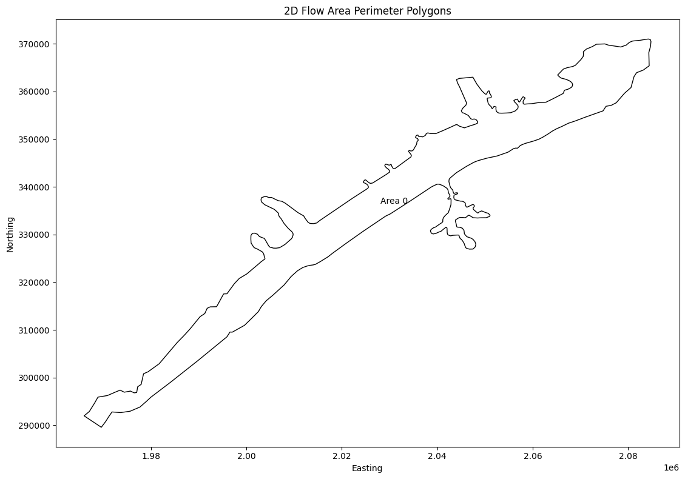
# Get mesh cell faces as geodatframe
mesh_cell_faces_gdf = HdfMesh.get_mesh_cell_faces(geom_hdf_path)
2025-12-16 21:03:22 - ras_commander.hdf.HdfMesh - INFO - Using HDF file from direct string path: C:\Users\billk_clb\anaconda3\envs\rascmdr_piptest\Lib\site-packages\examples\example_projects\BaldEagleCrkMulti2D_11\BaldEagleDamBrk.g09.hdf
2025-12-16 21:03:22 - ras_commander.hdf.HdfMesh - INFO - Final validated file path: C:\Users\billk_clb\anaconda3\envs\rascmdr_piptest\Lib\site-packages\examples\example_projects\BaldEagleCrkMulti2D_11\BaldEagleDamBrk.g09.hdf
2025-12-16 21:03:22 - ras_commander.hdf.HdfMesh - INFO - Using existing Path object HDF file: C:\Users\billk_clb\anaconda3\envs\rascmdr_piptest\Lib\site-packages\examples\example_projects\BaldEagleCrkMulti2D_11\BaldEagleDamBrk.g09.hdf
2025-12-16 21:03:22 - ras_commander.hdf.HdfMesh - INFO - Final validated file path: C:\Users\billk_clb\anaconda3\envs\rascmdr_piptest\Lib\site-packages\examples\example_projects\BaldEagleCrkMulti2D_11\BaldEagleDamBrk.g09.hdf
2025-12-16 21:03:22 - ras_commander.hdf.HdfBase - INFO - Using HDF file from h5py.File object: C:\Users\billk_clb\anaconda3\envs\rascmdr_piptest\Lib\site-packages\examples\example_projects\BaldEagleCrkMulti2D_11\BaldEagleDamBrk.g09.hdf
2025-12-16 21:03:22 - ras_commander.hdf.HdfBase - INFO - Final validated file path: C:\Users\billk_clb\anaconda3\envs\rascmdr_piptest\Lib\site-packages\examples\example_projects\BaldEagleCrkMulti2D_11\BaldEagleDamBrk.g09.hdf
2025-12-16 21:03:22 - ras_commander.hdf.HdfBase - INFO - Found projection in HDF file: C:\Users\billk_clb\anaconda3\envs\rascmdr_piptest\Lib\site-packages\examples\example_projects\BaldEagleCrkMulti2D_11\BaldEagleDamBrk.g09.hdf
2025-12-16 21:03:22 - ras_commander.hdf.HdfBase - INFO - Converted WKT to EPSG:2271 from HDF file BaldEagleDamBrk.g09.hdf
| mesh_name | face_id | geometry | |
|---|---|---|---|
| 0 | BaldEagleCr | 0 | LINESTRING (2042125 351625, 2042375 351625) |
| 1 | BaldEagleCr | 1 | LINESTRING (2042375 351625, 2042375 351875) |
| 2 | BaldEagleCr | 2 | LINESTRING (2042375 351875, 2042125 351875) |
| 3 | BaldEagleCr | 3 | LINESTRING (2042125 351875, 2042125 351625) |
| 4 | BaldEagleCr | 4 | LINESTRING (2042375 351375, 2042375 351625) |
| ... | ... | ... | ... |
| 37589 | BaldEagleCr | 37589 | LINESTRING (1978444.054 300812.794, 1978402.01... |
| 37590 | BaldEagleCr | 37590 | LINESTRING (1973531.76 297370.846, 1973246.989... |
| 37591 | BaldEagleCr | 37591 | LINESTRING (1968886.801 295900.5, 1968782.778 ... |
| 37592 | BaldEagleCr | 37592 | LINESTRING (1965981.775 291978.68, 1966280.11 ... |
| 37593 | BaldEagleCr | 37593 | LINESTRING (1969588.438 289578.114, 1969731.65... |
37594 rows × 3 columns
from matplotlib.collections import LineCollection
import numpy as np
# Calculate and display statistics
print("\nMesh Cell Faces Statistics:")
print(f"Total number of cell faces: {len(mesh_cell_faces_gdf)}")
print(f"Number of unique meshes: {mesh_cell_faces_gdf['mesh_name'].nunique()}")
if generate_maps:
# Plot the mesh cell faces more efficiently
fig, ax = plt.subplots(figsize=(12, 8))
# Convert all geometries to numpy arrays at once for faster plotting
lines = [list(zip(*line.xy)) for line in mesh_cell_faces_gdf.geometry]
lines_collection = LineCollection(lines, colors='blue', linewidth=0.5, alpha=0.5)
ax.add_collection(lines_collection)
# Set plot title and labels
plt.title('Mesh Cell Faces')
plt.xlabel('Easting')
plt.ylabel('Northing')
# Calculate centroids once and store as numpy arrays
centroids = np.array([[geom.centroid.x, geom.centroid.y] for geom in mesh_cell_faces_gdf.geometry])
# Create scatter plot with numpy arrays
scatter = ax.scatter(
centroids[:, 0],
centroids[:, 1],
c=mesh_cell_faces_gdf['face_id'],
cmap='viridis',
s=1,
alpha=0.5
)
plt.colorbar(scatter, label='Face ID')
# Set axis limits based on data bounds
ax.set_xlim(centroids[:, 0].min(), centroids[:, 0].max())
ax.set_ylim(centroids[:, 1].min(), centroids[:, 1].max())
plt.tight_layout()
plt.show()
else:
print("generate_maps is False")
Mesh Cell Faces Statistics:
Total number of cell faces: 37594
Number of unique meshes: 1
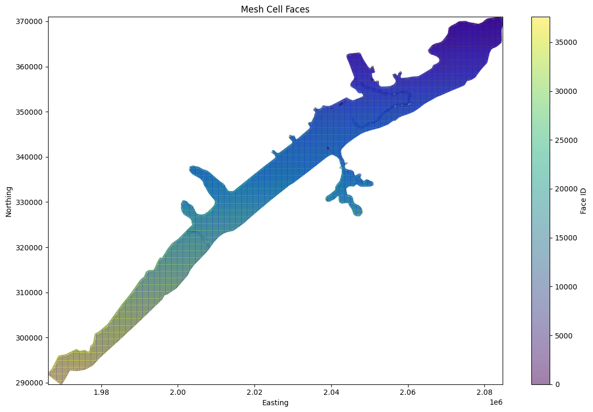
# Example: Find the nearest cell face to a given point using library API
# The HdfMesh.find_nearest_face() function replaces the notebook's custom helper
print("\nExample: Finding the nearest cell face to a given point")
from shapely.geometry import Point
import geopandas as gpd
# Create a sample point (coordinates in project CRS)
# Note: Update these coordinates based on your project's extent
sample_coords = (1025677, 7853731)
# Ensure mesh_cell_faces_gdf exists from previous cell
if 'mesh_cell_faces_gdf' in dir() and not mesh_cell_faces_gdf.empty:
# Use library API to find nearest face
# HdfMesh.find_nearest_face(point, cell_faces_gdf, mesh_name=None) -> (face_id, distance)
nearest_face_id, distance = HdfMesh.find_nearest_face(sample_coords, mesh_cell_faces_gdf)
print(f"Nearest cell face to point {sample_coords}:")
print(f"Face ID: {nearest_face_id}")
print(f"Distance: {distance:.2f} units")
# Visualize the result
if nearest_face_id is not None:
fig, ax = plt.subplots(figsize=(12, 8))
# Plot all cell faces
mesh_cell_faces_gdf.plot(ax=ax, color='blue', linewidth=0.5, alpha=0.5, label='Cell Faces')
# Plot the sample point
sample_point_gdf = gpd.GeoDataFrame(
{'geometry': [Point(sample_coords)]},
crs=mesh_cell_faces_gdf.crs
)
sample_point_gdf.plot(ax=ax, color='red', markersize=100, alpha=0.7, label='Sample Point')
# Plot the nearest cell face
nearest_face = mesh_cell_faces_gdf[mesh_cell_faces_gdf['face_id'] == nearest_face_id]
nearest_face.plot(ax=ax, color='green', linewidth=2, alpha=0.7, label='Nearest Face')
# Set labels and title
ax.set_xlabel('X Coordinate')
ax.set_ylabel('Y Coordinate')
ax.set_title('Nearest Cell Face to Sample Point (using HdfMesh.find_nearest_face)')
# Add legend and grid
ax.legend()
ax.grid(True)
plt.tight_layout()
plt.show()
else:
print("Note: mesh_cell_faces_gdf not available - run mesh cell faces extraction cell first")
# Extract Cell Polygons
print("\nExample 6: Extracting Cell Polygons")
cell_polygons_df = HdfMesh.get_mesh_cell_polygons(geom_hdf_path)
2025-12-16 21:03:25 - ras_commander.hdf.HdfMesh - INFO - Using HDF file from direct string path: C:\Users\billk_clb\anaconda3\envs\rascmdr_piptest\Lib\site-packages\examples\example_projects\BaldEagleCrkMulti2D_11\BaldEagleDamBrk.g09.hdf
2025-12-16 21:03:25 - ras_commander.hdf.HdfMesh - INFO - Final validated file path: C:\Users\billk_clb\anaconda3\envs\rascmdr_piptest\Lib\site-packages\examples\example_projects\BaldEagleCrkMulti2D_11\BaldEagleDamBrk.g09.hdf
2025-12-16 21:03:25 - ras_commander.hdf.HdfMesh - INFO - Using existing Path object HDF file: C:\Users\billk_clb\anaconda3\envs\rascmdr_piptest\Lib\site-packages\examples\example_projects\BaldEagleCrkMulti2D_11\BaldEagleDamBrk.g09.hdf
2025-12-16 21:03:25 - ras_commander.hdf.HdfMesh - INFO - Final validated file path: C:\Users\billk_clb\anaconda3\envs\rascmdr_piptest\Lib\site-packages\examples\example_projects\BaldEagleCrkMulti2D_11\BaldEagleDamBrk.g09.hdf
2025-12-16 21:03:25 - ras_commander.hdf.HdfMesh - INFO - Using existing Path object HDF file: C:\Users\billk_clb\anaconda3\envs\rascmdr_piptest\Lib\site-packages\examples\example_projects\BaldEagleCrkMulti2D_11\BaldEagleDamBrk.g09.hdf
2025-12-16 21:03:25 - ras_commander.hdf.HdfMesh - INFO - Final validated file path: C:\Users\billk_clb\anaconda3\envs\rascmdr_piptest\Lib\site-packages\examples\example_projects\BaldEagleCrkMulti2D_11\BaldEagleDamBrk.g09.hdf
2025-12-16 21:03:25 - ras_commander.hdf.HdfMesh - INFO - Using existing Path object HDF file: C:\Users\billk_clb\anaconda3\envs\rascmdr_piptest\Lib\site-packages\examples\example_projects\BaldEagleCrkMulti2D_11\BaldEagleDamBrk.g09.hdf
2025-12-16 21:03:25 - ras_commander.hdf.HdfMesh - INFO - Final validated file path: C:\Users\billk_clb\anaconda3\envs\rascmdr_piptest\Lib\site-packages\examples\example_projects\BaldEagleCrkMulti2D_11\BaldEagleDamBrk.g09.hdf
Example 6: Extracting Cell Polygons
2025-12-16 21:03:26 - ras_commander.hdf.HdfBase - INFO - Using HDF file from h5py.File object: C:\Users\billk_clb\anaconda3\envs\rascmdr_piptest\Lib\site-packages\examples\example_projects\BaldEagleCrkMulti2D_11\BaldEagleDamBrk.g09.hdf
2025-12-16 21:03:26 - ras_commander.hdf.HdfBase - INFO - Final validated file path: C:\Users\billk_clb\anaconda3\envs\rascmdr_piptest\Lib\site-packages\examples\example_projects\BaldEagleCrkMulti2D_11\BaldEagleDamBrk.g09.hdf
2025-12-16 21:03:26 - ras_commander.hdf.HdfBase - INFO - Found projection in HDF file: C:\Users\billk_clb\anaconda3\envs\rascmdr_piptest\Lib\site-packages\examples\example_projects\BaldEagleCrkMulti2D_11\BaldEagleDamBrk.g09.hdf
2025-12-16 21:03:26 - ras_commander.hdf.HdfBase - INFO - Converted WKT to EPSG:2271 from HDF file BaldEagleDamBrk.g09.hdf
2025-12-16 21:03:27 - ras_commander.hdf.HdfBase - INFO - Using HDF file from h5py.File object: C:\Users\billk_clb\anaconda3\envs\rascmdr_piptest\Lib\site-packages\examples\example_projects\BaldEagleCrkMulti2D_11\BaldEagleDamBrk.g09.hdf
2025-12-16 21:03:27 - ras_commander.hdf.HdfBase - INFO - Final validated file path: C:\Users\billk_clb\anaconda3\envs\rascmdr_piptest\Lib\site-packages\examples\example_projects\BaldEagleCrkMulti2D_11\BaldEagleDamBrk.g09.hdf
2025-12-16 21:03:27 - ras_commander.hdf.HdfBase - INFO - Found projection in HDF file: C:\Users\billk_clb\anaconda3\envs\rascmdr_piptest\Lib\site-packages\examples\example_projects\BaldEagleCrkMulti2D_11\BaldEagleDamBrk.g09.hdf
2025-12-16 21:03:27 - ras_commander.hdf.HdfBase - INFO - Converted WKT to EPSG:2271 from HDF file BaldEagleDamBrk.g09.hdf
| mesh_name | cell_id | geometry | |
|---|---|---|---|
| 0 | BaldEagleCr | 0 | POLYGON ((2082875 370625, 2082723.922 370776.0... |
| 1 | BaldEagleCr | 1 | POLYGON ((2083125 370625, 2083125 370844.185, ... |
| 2 | BaldEagleCr | 2 | POLYGON ((2083375 370625, 2083375 370886.638, ... |
| 3 | BaldEagleCr | 3 | POLYGON ((2083625 370625, 2083625 370925.693, ... |
| 4 | BaldEagleCr | 4 | POLYGON ((2083875 370625, 2083875 370958.588, ... |
| ... | ... | ... | ... |
| 18061 | BaldEagleCr | 18061 | POLYGON ((2060605.501 351955.442, 2060652.06 3... |
| 18062 | BaldEagleCr | 18062 | POLYGON ((2060652.06 351777.237, 2060849.045 3... |
| 18063 | BaldEagleCr | 18063 | POLYGON ((2060875 351951.343, 2060929.66 35193... |
| 18064 | BaldEagleCr | 18064 | POLYGON ((2060991.954 351624.893, 2060964.72 3... |
| 18065 | BaldEagleCr | 18065 | POLYGON ((2061172.274 351856.061, 2061298.822 ... |
18066 rows × 3 columns
# Plot cell polygons
if generate_maps:
fig, ax = plt.subplots(figsize=(12, 8))
# Plot cell polygons
cell_polygons_df.plot(ax=ax, edgecolor='blue', facecolor='none')
# Set labels and title
ax.set_xlabel('X Coordinate')
ax.set_ylabel('Y Coordinate')
ax.set_title('2D Flow Area Cell Polygons')
# Add grid
ax.grid(True)
# Adjust layout and display
plt.tight_layout()
plt.show()
else:
print("generate_maps is set to False")
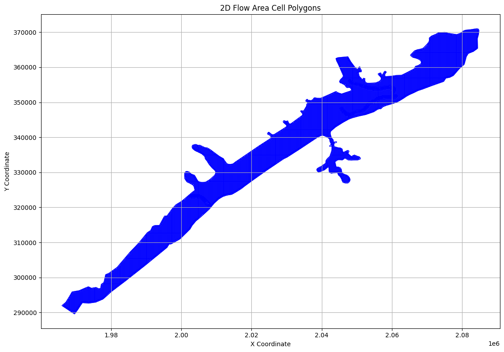
# Extract Cell Info
print("\nExample 5: Extracting Cell Info")
cell_info_df = HdfMesh.get_mesh_cell_points(geom_hdf_path)
2025-12-16 21:03:29 - ras_commander.hdf.HdfMesh - INFO - Using HDF file from direct string path: C:\Users\billk_clb\anaconda3\envs\rascmdr_piptest\Lib\site-packages\examples\example_projects\BaldEagleCrkMulti2D_11\BaldEagleDamBrk.g09.hdf
2025-12-16 21:03:29 - ras_commander.hdf.HdfMesh - INFO - Final validated file path: C:\Users\billk_clb\anaconda3\envs\rascmdr_piptest\Lib\site-packages\examples\example_projects\BaldEagleCrkMulti2D_11\BaldEagleDamBrk.g09.hdf
2025-12-16 21:03:29 - ras_commander.hdf.HdfMesh - INFO - Using existing Path object HDF file: C:\Users\billk_clb\anaconda3\envs\rascmdr_piptest\Lib\site-packages\examples\example_projects\BaldEagleCrkMulti2D_11\BaldEagleDamBrk.g09.hdf
2025-12-16 21:03:29 - ras_commander.hdf.HdfMesh - INFO - Final validated file path: C:\Users\billk_clb\anaconda3\envs\rascmdr_piptest\Lib\site-packages\examples\example_projects\BaldEagleCrkMulti2D_11\BaldEagleDamBrk.g09.hdf
2025-12-16 21:03:29 - ras_commander.hdf.HdfBase - INFO - Using HDF file from h5py.File object: C:\Users\billk_clb\anaconda3\envs\rascmdr_piptest\Lib\site-packages\examples\example_projects\BaldEagleCrkMulti2D_11\BaldEagleDamBrk.g09.hdf
2025-12-16 21:03:29 - ras_commander.hdf.HdfBase - INFO - Final validated file path: C:\Users\billk_clb\anaconda3\envs\rascmdr_piptest\Lib\site-packages\examples\example_projects\BaldEagleCrkMulti2D_11\BaldEagleDamBrk.g09.hdf
2025-12-16 21:03:29 - ras_commander.hdf.HdfBase - INFO - Found projection in HDF file: C:\Users\billk_clb\anaconda3\envs\rascmdr_piptest\Lib\site-packages\examples\example_projects\BaldEagleCrkMulti2D_11\BaldEagleDamBrk.g09.hdf
2025-12-16 21:03:29 - ras_commander.hdf.HdfBase - INFO - Converted WKT to EPSG:2271 from HDF file BaldEagleDamBrk.g09.hdf
Example 5: Extracting Cell Info
| mesh_name | cell_id | geometry | |
|---|---|---|---|
| 0 | BaldEagleCr | 0 | POINT (2083000 370750) |
| 1 | BaldEagleCr | 1 | POINT (2083250 370750) |
| 2 | BaldEagleCr | 2 | POINT (2083500 370750) |
| 3 | BaldEagleCr | 3 | POINT (2083750 370750) |
| 4 | BaldEagleCr | 4 | POINT (2084000 370750) |
| ... | ... | ... | ... |
| 19592 | BaldEagleCr | 19592 | POINT (1978423.032 300718.897) |
| 19593 | BaldEagleCr | 19593 | POINT (1973389.375 297311.928) |
| 19594 | BaldEagleCr | 19594 | POINT (1968834.79 295808.861) |
| 19595 | BaldEagleCr | 19595 | POINT (1966130.942 291879.395) |
| 19596 | BaldEagleCr | 19596 | POINT (1969660.046 289673.23) |
19597 rows × 3 columns
# Plot cell centers
if generate_maps:
fig, ax = plt.subplots(figsize=(12, 8))
# Plot cell centers
cell_info_df.plot(ax=ax, color='red', markersize=5)
# Set labels and title
ax.set_xlabel('X Coordinate')
ax.set_ylabel('Y Coordinate')
ax.set_title('2D Flow Area Cell Centers')
# Add grid
ax.grid(True)
# Adjust layout and display
plt.tight_layout()
plt.show()
else:
print("generate_maps is set to False")
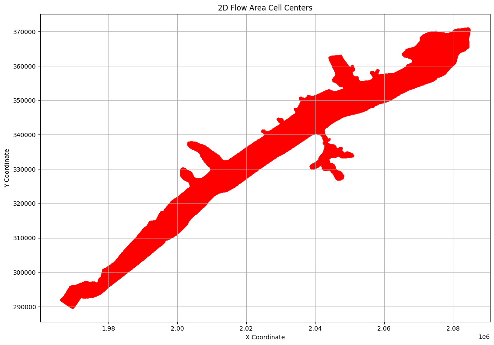
# Get geometry structures attributes
print("\nGetting geometry structures attributes as Dataframe")
geom_structures_attrs = HdfStruc.get_geom_structures_attrs(geom_hdf_path)
2025-12-16 21:03:30 - ras_commander.hdf.HdfStruc - INFO - Using HDF file from direct string path: C:\Users\billk_clb\anaconda3\envs\rascmdr_piptest\Lib\site-packages\examples\example_projects\BaldEagleCrkMulti2D_11\BaldEagleDamBrk.g09.hdf
2025-12-16 21:03:30 - ras_commander.hdf.HdfStruc - INFO - Final validated file path: C:\Users\billk_clb\anaconda3\envs\rascmdr_piptest\Lib\site-packages\examples\example_projects\BaldEagleCrkMulti2D_11\BaldEagleDamBrk.g09.hdf
Getting geometry structures attributes as Dataframe
| Bridge/Culvert Count | Connection Count | Has Bridge Opening (2D) | Inline Structure Count | Lateral Structure Count | |
|---|---|---|---|---|---|
| 0 | 0 | 1 | 0 | 0 | 0 |
# TODO: Paths and Functions for each type of structure:
# Getting geometry structures attributes
# Geometry structures attributes:
# Bridge/Culvert Count: 0
# Connection Count: 4
# Has Bridge Opening (2D): 0
# Inline Structure Count: 0
# Lateral Structure Count: 0
# Get boundary condition lines
print("\nExtracting Boundary Condition Lines as Geodataframe")
bc_lines_df = HdfBndry.get_bc_lines(geom_hdf_path)
2025-12-16 21:03:30 - ras_commander.hdf.HdfBndry - INFO - Using HDF file from direct string path: C:\Users\billk_clb\anaconda3\envs\rascmdr_piptest\Lib\site-packages\examples\example_projects\BaldEagleCrkMulti2D_11\BaldEagleDamBrk.g09.hdf
2025-12-16 21:03:30 - ras_commander.hdf.HdfBndry - INFO - Final validated file path: C:\Users\billk_clb\anaconda3\envs\rascmdr_piptest\Lib\site-packages\examples\example_projects\BaldEagleCrkMulti2D_11\BaldEagleDamBrk.g09.hdf
2025-12-16 21:03:30 - ras_commander.hdf.HdfBase - INFO - Using existing Path object HDF file: C:\Users\billk_clb\anaconda3\envs\rascmdr_piptest\Lib\site-packages\examples\example_projects\BaldEagleCrkMulti2D_11\BaldEagleDamBrk.g09.hdf
2025-12-16 21:03:30 - ras_commander.hdf.HdfBase - INFO - Final validated file path: C:\Users\billk_clb\anaconda3\envs\rascmdr_piptest\Lib\site-packages\examples\example_projects\BaldEagleCrkMulti2D_11\BaldEagleDamBrk.g09.hdf
2025-12-16 21:03:30 - ras_commander.hdf.HdfBase - INFO - Using HDF file from h5py.File object: C:\Users\billk_clb\anaconda3\envs\rascmdr_piptest\Lib\site-packages\examples\example_projects\BaldEagleCrkMulti2D_11\BaldEagleDamBrk.g09.hdf
2025-12-16 21:03:30 - ras_commander.hdf.HdfBase - INFO - Final validated file path: C:\Users\billk_clb\anaconda3\envs\rascmdr_piptest\Lib\site-packages\examples\example_projects\BaldEagleCrkMulti2D_11\BaldEagleDamBrk.g09.hdf
2025-12-16 21:03:30 - ras_commander.hdf.HdfBase - INFO - Found projection in HDF file: C:\Users\billk_clb\anaconda3\envs\rascmdr_piptest\Lib\site-packages\examples\example_projects\BaldEagleCrkMulti2D_11\BaldEagleDamBrk.g09.hdf
2025-12-16 21:03:30 - ras_commander.hdf.HdfBase - INFO - Converted WKT to EPSG:2271 from HDF file BaldEagleDamBrk.g09.hdf
Extracting Boundary Condition Lines as Geodataframe
| Name | SA-2D | Type | Length | geometry | bc_line_id | |
|---|---|---|---|---|---|---|
| 0 | DSNormalDepth | BaldEagleCr | External | 1801.303345 | LINESTRING (2082004.235 364024.82, 2083193.546... | 0 |
| 1 | DS2NormalD | BaldEagleCr | External | 2633.932617 | LINESTRING (2084425.804 365392.892, 2084354.64... | 1 |
| 2 | Upstream Inflow | BaldEagleCr | External | 2533.638672 | LINESTRING (1967473.737 290973.629, 1969582.89... | 2 |
# Plot Boundary Condition Lines with Perimeter
if generate_maps:
fig, ax = plt.subplots(figsize=(12, 8))
if not mesh_areas.empty:
mesh_areas.plot(ax=ax, edgecolor='black', facecolor='none', alpha=0.7, label='2D Flow Area')
# Add labels for each polygon
for idx, row in mesh_areas.iterrows():
centroid = row.geometry.centroid
label = row.get('Name', f'Area {idx}')
ax.annotate(label, (centroid.x, centroid.y), ha='center', va='center')
# Plot boundary condition lines
if not bc_lines_df.empty:
bc_lines_df.plot(ax=ax, color='red', linewidth=2, label='Boundary Condition Lines')
# Set labels and title
ax.set_xlabel('Easting')
ax.set_ylabel('Northing')
ax.set_title('2D Flow Area Perimeter Polygons and Boundary Condition Lines')
# Add grid and legend
ax.grid(True)
ax.legend()
# Adjust layout and display
plt.tight_layout()
plt.show()
else:
print("generate_maps is set to False")
# Plot 2D Flow Area Perimeter Polygons
C:\Users\billk_clb\AppData\Local\Temp\ipykernel_27044\268397963.py:26: UserWarning: Legend does not support handles for PatchCollection instances.
See: https://matplotlib.org/stable/tutorials/intermediate/legend_guide.html#implementing-a-custom-legend-handler
ax.legend()
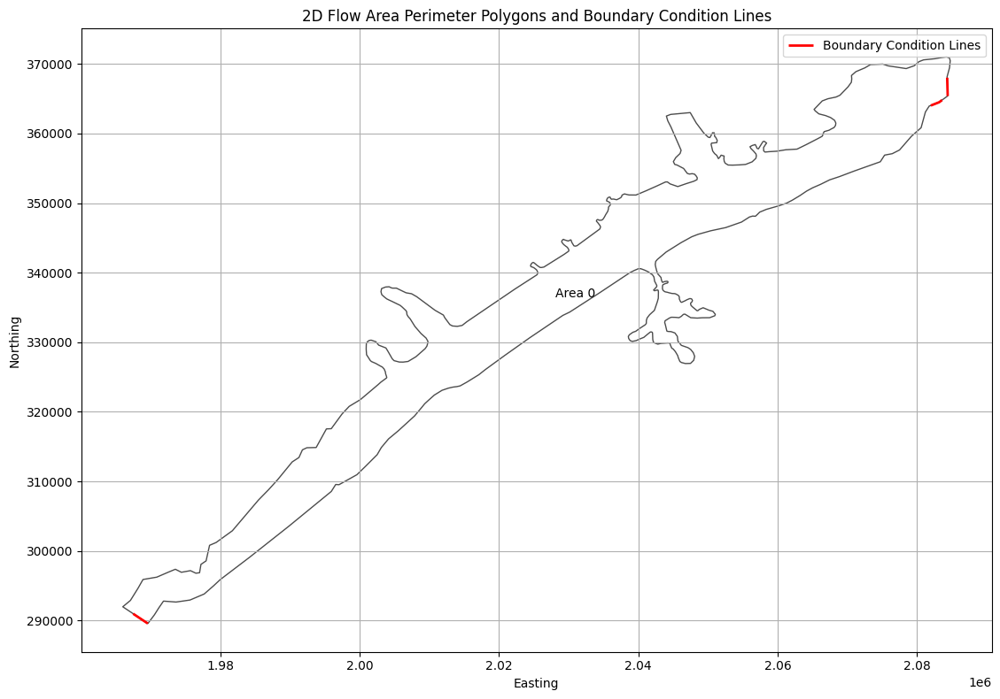
# Extract Breaklines as Geodataframe
print("\nExtracting Breaklines")
breaklines_gdf = HdfBndry.get_breaklines(geom_hdf_path)
2025-12-16 21:03:30 - ras_commander.hdf.HdfBndry - INFO - Using HDF file from direct string path: C:\Users\billk_clb\anaconda3\envs\rascmdr_piptest\Lib\site-packages\examples\example_projects\BaldEagleCrkMulti2D_11\BaldEagleDamBrk.g09.hdf
2025-12-16 21:03:30 - ras_commander.hdf.HdfBndry - INFO - Final validated file path: C:\Users\billk_clb\anaconda3\envs\rascmdr_piptest\Lib\site-packages\examples\example_projects\BaldEagleCrkMulti2D_11\BaldEagleDamBrk.g09.hdf
2025-12-16 21:03:30 - ras_commander.hdf.HdfBase - INFO - Using HDF file from h5py.File object: C:\Users\billk_clb\anaconda3\envs\rascmdr_piptest\Lib\site-packages\examples\example_projects\BaldEagleCrkMulti2D_11\BaldEagleDamBrk.g09.hdf
2025-12-16 21:03:30 - ras_commander.hdf.HdfBase - INFO - Final validated file path: C:\Users\billk_clb\anaconda3\envs\rascmdr_piptest\Lib\site-packages\examples\example_projects\BaldEagleCrkMulti2D_11\BaldEagleDamBrk.g09.hdf
2025-12-16 21:03:30 - ras_commander.hdf.HdfBase - INFO - Found projection in HDF file: C:\Users\billk_clb\anaconda3\envs\rascmdr_piptest\Lib\site-packages\examples\example_projects\BaldEagleCrkMulti2D_11\BaldEagleDamBrk.g09.hdf
2025-12-16 21:03:30 - ras_commander.hdf.HdfBase - INFO - Converted WKT to EPSG:2271 from HDF file BaldEagleDamBrk.g09.hdf
Extracting Breaklines
| bl_id | Name | geometry | |
|---|---|---|---|
| 0 | 0 | SayersDam | LINESTRING (2002361.246 323707.927, 2002741.35... |
| 1 | 1 | Lower | LINESTRING (2060356.422 351786.819, 2060316.47... |
| 2 | 2 | Middle | LINESTRING (2052757.788 348470.547, 2052785.84... |
| 3 | 3 | Upper | LINESTRING (2045597.199 348412.994, 2045638.91... |
# Plot breaklines and 2D Flow Area Perimeter Polygons
if generate_plots:
fig, ax = plt.subplots(figsize=(12, 8))
# Plot 2D Flow Area Perimeter Polygons
if not mesh_areas.empty:
mesh_areas.plot(ax=ax, edgecolor='black', facecolor='none', alpha=0.7, label='2D Flow Area')
# Add labels for each polygon
for idx, row in mesh_areas.iterrows():
centroid = row.geometry.centroid
label = row.get('Name', f'Area {idx}')
ax.annotate(label, (centroid.x, centroid.y), ha='center', va='center')
# Plot breaklines
if not breaklines_gdf.empty:
breaklines_gdf.plot(ax=ax, color='blue', linewidth=2, label='Breaklines')
# Set labels and title
ax.set_xlabel('Easting')
ax.set_ylabel('Northing')
ax.set_title('2D Flow Area Perimeter Polygons and Breaklines')
# Add grid and legend
ax.grid(True)
ax.legend()
# Adjust layout and display
plt.tight_layout()
plt.show()
C:\Users\billk_clb\AppData\Local\Temp\ipykernel_27044\3295158439.py:27: UserWarning: Legend does not support handles for PatchCollection instances.
See: https://matplotlib.org/stable/tutorials/intermediate/legend_guide.html#implementing-a-custom-legend-handler
ax.legend()
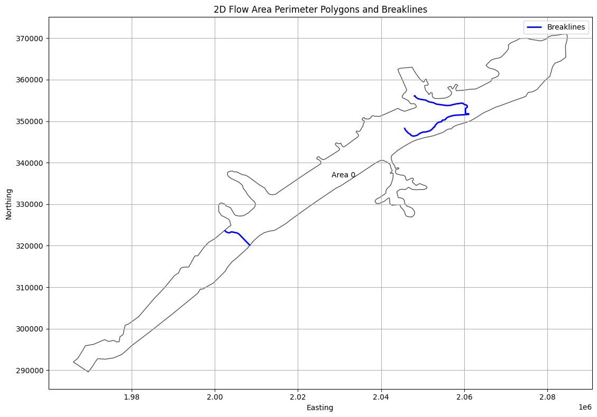
2025-12-16 21:03:30 - ras_commander.hdf.HdfStruc - INFO - Using HDF file from direct string path: C:\Users\billk_clb\anaconda3\envs\rascmdr_piptest\Lib\site-packages\examples\example_projects\BaldEagleCrkMulti2D_11\BaldEagleDamBrk.g09.hdf
2025-12-16 21:03:30 - ras_commander.hdf.HdfStruc - INFO - Final validated file path: C:\Users\billk_clb\anaconda3\envs\rascmdr_piptest\Lib\site-packages\examples\example_projects\BaldEagleCrkMulti2D_11\BaldEagleDamBrk.g09.hdf
2025-12-16 21:03:30 - ras_commander.hdf.HdfBase - INFO - Using existing Path object HDF file: C:\Users\billk_clb\anaconda3\envs\rascmdr_piptest\Lib\site-packages\examples\example_projects\BaldEagleCrkMulti2D_11\BaldEagleDamBrk.g09.hdf
2025-12-16 21:03:30 - ras_commander.hdf.HdfBase - INFO - Final validated file path: C:\Users\billk_clb\anaconda3\envs\rascmdr_piptest\Lib\site-packages\examples\example_projects\BaldEagleCrkMulti2D_11\BaldEagleDamBrk.g09.hdf
2025-12-16 21:03:30 - ras_commander.hdf.HdfBase - INFO - Found projection in HDF file: C:\Users\billk_clb\anaconda3\envs\rascmdr_piptest\Lib\site-packages\examples\example_projects\BaldEagleCrkMulti2D_11\BaldEagleDamBrk.g09.hdf
2025-12-16 21:03:30 - ras_commander.hdf.HdfBase - INFO - Converted WKT to EPSG:2271 from HDF file BaldEagleDamBrk.g09.hdf
2025-12-16 21:03:30 - ras_commander.hdf.HdfStruc - INFO - Successfully extracted structures GeoDataFrame.
2025-12-16 21:03:30 - ras_commander.hdf.HdfStruc - INFO - Successfully extracted structures GeoDataFrame with attributes.
| Type | Mode | River | Reach | RS | Connection | Groupname | US Type | US River | US Reach | ... | US XS Mann (Count) | US BR Mann (Index) | US BR Mann (Count) | DS XS Mann (Index) | DS XS Mann (Count) | DS BR Mann (Index) | DS BR Mann (Count) | RC (Index) | RC (Count) | Profile_Data | |
|---|---|---|---|---|---|---|---|---|---|---|---|---|---|---|---|---|---|---|---|---|---|
| 0 | Connection | Weir/Gate/Culverts | Sayers Dam | BaldEagleCr, Sayers Dam | 2D | ... | 0 | 0 | 0 | 0 | 0 | 0 | 0 | 0 | 0 | [{'Station': 0.0, 'Elevation': 683.0}, {'Stati... |
1 rows × 162 columns
# Get boundary condition lines as GeoDatframe
bc_lines_gdf = HdfBndry.get_bc_lines(geom_hdf_path)
print("\nBoundary Condition Lines:")
2025-12-16 21:03:30 - ras_commander.hdf.HdfBndry - INFO - Using HDF file from direct string path: C:\Users\billk_clb\anaconda3\envs\rascmdr_piptest\Lib\site-packages\examples\example_projects\BaldEagleCrkMulti2D_11\BaldEagleDamBrk.g09.hdf
2025-12-16 21:03:30 - ras_commander.hdf.HdfBndry - INFO - Final validated file path: C:\Users\billk_clb\anaconda3\envs\rascmdr_piptest\Lib\site-packages\examples\example_projects\BaldEagleCrkMulti2D_11\BaldEagleDamBrk.g09.hdf
2025-12-16 21:03:30 - ras_commander.hdf.HdfBase - INFO - Using existing Path object HDF file: C:\Users\billk_clb\anaconda3\envs\rascmdr_piptest\Lib\site-packages\examples\example_projects\BaldEagleCrkMulti2D_11\BaldEagleDamBrk.g09.hdf
2025-12-16 21:03:30 - ras_commander.hdf.HdfBase - INFO - Final validated file path: C:\Users\billk_clb\anaconda3\envs\rascmdr_piptest\Lib\site-packages\examples\example_projects\BaldEagleCrkMulti2D_11\BaldEagleDamBrk.g09.hdf
2025-12-16 21:03:30 - ras_commander.hdf.HdfBase - INFO - Using HDF file from h5py.File object: C:\Users\billk_clb\anaconda3\envs\rascmdr_piptest\Lib\site-packages\examples\example_projects\BaldEagleCrkMulti2D_11\BaldEagleDamBrk.g09.hdf
2025-12-16 21:03:30 - ras_commander.hdf.HdfBase - INFO - Final validated file path: C:\Users\billk_clb\anaconda3\envs\rascmdr_piptest\Lib\site-packages\examples\example_projects\BaldEagleCrkMulti2D_11\BaldEagleDamBrk.g09.hdf
2025-12-16 21:03:30 - ras_commander.hdf.HdfBase - INFO - Found projection in HDF file: C:\Users\billk_clb\anaconda3\envs\rascmdr_piptest\Lib\site-packages\examples\example_projects\BaldEagleCrkMulti2D_11\BaldEagleDamBrk.g09.hdf
2025-12-16 21:03:30 - ras_commander.hdf.HdfBase - INFO - Converted WKT to EPSG:2271 from HDF file BaldEagleDamBrk.g09.hdf
Boundary Condition Lines:
| Name | SA-2D | Type | Length | geometry | bc_line_id | |
|---|---|---|---|---|---|---|
| 0 | DSNormalDepth | BaldEagleCr | External | 1801.303345 | LINESTRING (2082004.235 364024.82, 2083193.546... | 0 |
| 1 | DS2NormalD | BaldEagleCr | External | 2633.932617 | LINESTRING (2084425.804 365392.892, 2084354.64... | 1 |
| 2 | Upstream Inflow | BaldEagleCr | External | 2533.638672 | LINESTRING (1967473.737 290973.629, 1969582.89... | 2 |
Dev Note: Need to add function for Reference Lines¶
# Get reference points as Geodataframe
ref_points_gdf = HdfBndry.get_reference_points(geom_hdf_path)
2025-12-16 21:03:30 - ras_commander.hdf.HdfBndry - INFO - Using HDF file from direct string path: C:\Users\billk_clb\anaconda3\envs\rascmdr_piptest\Lib\site-packages\examples\example_projects\BaldEagleCrkMulti2D_11\BaldEagleDamBrk.g09.hdf
2025-12-16 21:03:30 - ras_commander.hdf.HdfBndry - INFO - Final validated file path: C:\Users\billk_clb\anaconda3\envs\rascmdr_piptest\Lib\site-packages\examples\example_projects\BaldEagleCrkMulti2D_11\BaldEagleDamBrk.g09.hdf
print("\nReference Points:")
ref_points_gdf
# There are no reference points in this example project (for demonstration only)
Reference Points:
2025-12-16 21:03:30 - ras_commander.hdf.HdfBndry - INFO - Using HDF file from direct string path: C:\Users\billk_clb\anaconda3\envs\rascmdr_piptest\Lib\site-packages\examples\example_projects\BaldEagleCrkMulti2D_11\BaldEagleDamBrk.g09.hdf
2025-12-16 21:03:30 - ras_commander.hdf.HdfBndry - INFO - Final validated file path: C:\Users\billk_clb\anaconda3\envs\rascmdr_piptest\Lib\site-packages\examples\example_projects\BaldEagleCrkMulti2D_11\BaldEagleDamBrk.g09.hdf
# Plot Refinement Regions
if not refinement_regions_df.empty:
print("Refinement Regions DataFrame:")
display(refinement_regions_df.head())
# Plot refinement regions
fig, ax = plt.subplots(figsize=(12, 8))
refinement_regions_df.plot(ax=ax, column='CellSize', legend=True,
legend_kwds={'label': 'Cell Size', 'orientation': 'horizontal'},
cmap='viridis')
ax.set_title('2D Mesh Area Refinement Regions')
ax.set_xlabel('Easting')
ax.set_ylabel('Northing')
plt.tight_layout()
plt.show()
else:
print("No refinement regions found in the geometry file.")
# Analyze Refinement Regions
if not refinement_regions_df.empty:
print("\nRefinement Regions Analysis:")
print(f"Total number of refinement regions: {len(refinement_regions_df)}")
print("\nCell Size Statistics:")
print(refinement_regions_df['CellSize'].describe())
# Group by Shape Type
shape_type_counts = refinement_regions_df['ShapeType'].value_counts()
print("\nRefinement Region Shape Types:")
print(shape_type_counts)
# Plot Shape Type distribution
plt.figure(figsize=(10, 6))
shape_type_counts.plot(kind='bar')
plt.title('Distribution of Refinement Region Shape Types')
plt.xlabel('Shape Type')
plt.ylabel('Count')
plt.xticks(rotation=45)
plt.tight_layout()
plt.show()
No refinement regions found in the geometry file.
2025-12-16 21:03:30 - ras_commander.hdf.HdfPlan - INFO - Using HDF file from direct string path: C:\Users\billk_clb\anaconda3\envs\rascmdr_piptest\Lib\site-packages\examples\example_projects\BaldEagleCrkMulti2D_11\BaldEagleDamBrk.p06.hdf
2025-12-16 21:03:30 - ras_commander.hdf.HdfPlan - INFO - Final validated file path: C:\Users\billk_clb\anaconda3\envs\rascmdr_piptest\Lib\site-packages\examples\example_projects\BaldEagleCrkMulti2D_11\BaldEagleDamBrk.p06.hdf
| Plan | Parameter | Value | |
|---|---|---|---|
| 0 | 06 | 1D Cores | 2 |
| 1 | 06 | 1D Flow Tolerance | NaN |
| 2 | 06 | 1D Maximum Iterations | 20 |
| 3 | 06 | 1D Maximum Iterations Without Improvement | 0 |
| 4 | 06 | 1D Maximum Water Surface Error To Abort | 100.0 |
| 5 | 06 | 1D Methodology | Finite Difference |
| 6 | 06 | 1D Storage Area Elevation Tolerance | 0.02 |
| 7 | 06 | 1D Theta | 1.0 |
| 8 | 06 | 1D Theta Warmup | 1.0 |
| 9 | 06 | 1D Water Surface Elevation Tolerance | 0.02 |
| 10 | 06 | 1D-2D Flow Tolerance | 1.0 |
| 11 | 06 | 1D-2D Gate Flow Submergence Decay Exponent | 1.0 |
| 12 | 06 | 1D-2D IS Stablity Factor | 1.0 |
| 13 | 06 | 1D-2D LS Stablity Factor | 2.0 |
| 14 | 06 | 1D-2D Maximum Iterations | 0 |
| 15 | 06 | 1D-2D Maximum Number of Time Slices | 20 |
| 16 | 06 | 1D-2D Minimum Flow Tolerance | NaN |
| 17 | 06 | 1D-2D Minimum Time Step for Slicing(hours) | 0.0 |
| 18 | 06 | 1D-2D Number of Warmup Steps | 0 |
| 19 | 06 | 1D-2D Warmup Time Step (hours) | 0.0 |
| 20 | 06 | 1D-2D Water Surface Tolerance | 0.02 |
| 21 | 06 | 1D-2D Weir Flow Submergence Decay Exponent | 1.0 |
| 22 | 06 | 2D Advanced Convergence | 0 |
| 23 | 06 | 2D Boundary Condition Ramp Up Fraction | 0.5 |
| 24 | 06 | 2D Boundary Condition Volume Check | False |
| 25 | 06 | 2D Cores (per mesh) | 2 |
| 26 | 06 | 2D Coriolis | False |
| 27 | 06 | 2D Equation Set | Diffusion Wave |
| 28 | 06 | 2D Initial Conditions Ramp Up Time (hrs) | 0.0 |
| 29 | 06 | 2D Latitude for Coriolis | 340282346638528859811704183484516925440.0 |
| 30 | 06 | 2D Longitudinal Mixing Coefficient | 0.0 |
| 31 | 06 | 2D Matrix Solver | Pardiso |
| 32 | 06 | 2D Maximum Iterations | 20 |
| 33 | 06 | 2D Names | BaldEagleCr |
| 34 | 06 | 2D Number of Time Slices | 1 |
| 35 | 06 | 2D Only | True |
| 36 | 06 | 2D Smagorinsky Mixing Coefficient | 0.0 |
| 37 | 06 | 2D Theta | 1.0 |
| 38 | 06 | 2D Theta Warmup | 1.0 |
| 39 | 06 | 2D Transverse Mixing Coefficient | 0.0 |
| 40 | 06 | 2D Turbulence Formulation | None |
| 41 | 06 | 2D Volume Tolerance | 0.01 |
| 42 | 06 | 2D WS Max Tolerance | 0.0 |
| 43 | 06 | 2D WS RMS Tolerance | 0.0 |
| 44 | 06 | 2D WS Stalling Tolerance | 0.0 |
| 45 | 06 | 2D Water Surface Tolerance | 0.01 |
| 46 | 06 | Friction Slope Average Method (BR) | Average Conveyance |
| 47 | 06 | Friction Slope Average Method (XS) | Average Friction Slope |
| 48 | 06 | Gravity | 32.174 |
| 49 | 06 | HDF Additional Output Variables | [Cell Velocity, Face Eddy Viscosity, Face Flow... |
| 50 | 06 | HDF Chunk Size | 1.0 |
| 51 | 06 | HDF Compression | 1 |
| 52 | 06 | HDF Fixed Rows | 1 |
| 53 | 06 | HDF Flush Buffer | False |
| 54 | 06 | HDF Spatial Parts | 1 |
| 55 | 06 | HDF Use Max Rows | 0 |
| 56 | 06 | HDF Write Time Slices | False |
| 57 | 06 | HDF Write Warmup | False |
| 58 | 06 | Pardiso Solver | False |
# Extract volume accounting data
volume_accounting_df = HdfResultsPlan.get_volume_accounting(plan_hdf_path)
2025-12-16 21:03:30 - ras_commander.hdf.HdfResultsPlan - INFO - Using HDF file from direct string path: C:\Users\billk_clb\anaconda3\envs\rascmdr_piptest\Lib\site-packages\examples\example_projects\BaldEagleCrkMulti2D_11\BaldEagleDamBrk.p06.hdf
2025-12-16 21:03:30 - ras_commander.hdf.HdfResultsPlan - INFO - Final validated file path: C:\Users\billk_clb\anaconda3\envs\rascmdr_piptest\Lib\site-packages\examples\example_projects\BaldEagleCrkMulti2D_11\BaldEagleDamBrk.p06.hdf
| Error | Error Percent | Precipitation Excess (acre feet) | Precipitation Excess (inches) | Total Boundary Flux of Water In | Total Boundary Flux of Water Out | Vol Accounting in | Volume Ending | Volume Starting | |
|---|---|---|---|---|---|---|---|---|---|
| 0 | 0.469724 | 0.000332 | 3756.872803 | 1.707615 | 141685.0 | 17240.263672 | Acre Feet | 124445.203125 | 0.0 |
RasPlanHdf Class Functions¶
# Get plan start time as datetime object
start_time = HdfPlan.get_plan_start_time(plan_hdf_path)
print(f"Simulation start time: {start_time}")
2025-12-16 21:03:30 - ras_commander.hdf.HdfPlan - INFO - Using HDF file from direct string path: C:\Users\billk_clb\anaconda3\envs\rascmdr_piptest\Lib\site-packages\examples\example_projects\BaldEagleCrkMulti2D_11\BaldEagleDamBrk.p06.hdf
2025-12-16 21:03:30 - ras_commander.hdf.HdfPlan - INFO - Final validated file path: C:\Users\billk_clb\anaconda3\envs\rascmdr_piptest\Lib\site-packages\examples\example_projects\BaldEagleCrkMulti2D_11\BaldEagleDamBrk.p06.hdf
Simulation start time: 2018-09-09 00:00:00
Simulation start time: 2018-09-09 00:00:00
# Get plan end time as datetime object
end_time = HdfPlan.get_plan_end_time(plan_hdf_path)
print(f"Simulation end time: {end_time}")
2025-12-16 21:03:30 - ras_commander.hdf.HdfPlan - INFO - Using HDF file from direct string path: C:\Users\billk_clb\anaconda3\envs\rascmdr_piptest\Lib\site-packages\examples\example_projects\BaldEagleCrkMulti2D_11\BaldEagleDamBrk.p06.hdf
2025-12-16 21:03:30 - ras_commander.hdf.HdfPlan - INFO - Final validated file path: C:\Users\billk_clb\anaconda3\envs\rascmdr_piptest\Lib\site-packages\examples\example_projects\BaldEagleCrkMulti2D_11\BaldEagleDamBrk.p06.hdf
Simulation end time: 2018-09-14 00:00:00
Simulation end time: 2018-09-14 00:00:00
# Get maximum iteration count for mesh cells
max_iter_gdf = HdfResultsMesh.get_mesh_max_iter(plan_hdf_path)
2025-12-16 21:03:30 - ras_commander.hdf.HdfResultsMesh - INFO - Using HDF file from direct string path: C:\Users\billk_clb\anaconda3\envs\rascmdr_piptest\Lib\site-packages\examples\example_projects\BaldEagleCrkMulti2D_11\BaldEagleDamBrk.p06.hdf
2025-12-16 21:03:30 - ras_commander.hdf.HdfResultsMesh - INFO - Final validated file path: C:\Users\billk_clb\anaconda3\envs\rascmdr_piptest\Lib\site-packages\examples\example_projects\BaldEagleCrkMulti2D_11\BaldEagleDamBrk.p06.hdf
2025-12-16 21:03:30 - ras_commander.hdf.HdfResultsMesh - INFO - Processing summary output for variable: Cell Last Iteration
2025-12-16 21:03:30 - ras_commander.hdf.HdfMesh - INFO - Using HDF file from h5py.File object: C:\Users\billk_clb\anaconda3\envs\rascmdr_piptest\Lib\site-packages\examples\example_projects\BaldEagleCrkMulti2D_11\BaldEagleDamBrk.p06.hdf
2025-12-16 21:03:30 - ras_commander.hdf.HdfMesh - INFO - Final validated file path: C:\Users\billk_clb\anaconda3\envs\rascmdr_piptest\Lib\site-packages\examples\example_projects\BaldEagleCrkMulti2D_11\BaldEagleDamBrk.p06.hdf
2025-12-16 21:03:30 - ras_commander.hdf.HdfMesh - INFO - Using existing Path object HDF file: C:\Users\billk_clb\anaconda3\envs\rascmdr_piptest\Lib\site-packages\examples\example_projects\BaldEagleCrkMulti2D_11\BaldEagleDamBrk.p06.hdf
2025-12-16 21:03:30 - ras_commander.hdf.HdfMesh - INFO - Final validated file path: C:\Users\billk_clb\anaconda3\envs\rascmdr_piptest\Lib\site-packages\examples\example_projects\BaldEagleCrkMulti2D_11\BaldEagleDamBrk.p06.hdf
2025-12-16 21:03:31 - ras_commander.hdf.HdfBase - INFO - Using HDF file from h5py.File object: C:\Users\billk_clb\anaconda3\envs\rascmdr_piptest\Lib\site-packages\examples\example_projects\BaldEagleCrkMulti2D_11\BaldEagleDamBrk.p06.hdf
2025-12-16 21:03:31 - ras_commander.hdf.HdfBase - INFO - Final validated file path: C:\Users\billk_clb\anaconda3\envs\rascmdr_piptest\Lib\site-packages\examples\example_projects\BaldEagleCrkMulti2D_11\BaldEagleDamBrk.p06.hdf
2025-12-16 21:03:31 - ras_commander.hdf.HdfBase - INFO - Found projection in HDF file: C:\Users\billk_clb\anaconda3\envs\rascmdr_piptest\Lib\site-packages\examples\example_projects\BaldEagleCrkMulti2D_11\BaldEagleDamBrk.p06.hdf
2025-12-16 21:03:31 - ras_commander.hdf.HdfBase - INFO - Converted WKT to EPSG:2271 from HDF file BaldEagleDamBrk.p06.hdf
2025-12-16 21:03:31 - ras_commander.hdf.HdfBase - INFO - Using HDF file from h5py.File object: C:\Users\billk_clb\anaconda3\envs\rascmdr_piptest\Lib\site-packages\examples\example_projects\BaldEagleCrkMulti2D_11\BaldEagleDamBrk.p06.hdf
2025-12-16 21:03:31 - ras_commander.hdf.HdfBase - INFO - Final validated file path: C:\Users\billk_clb\anaconda3\envs\rascmdr_piptest\Lib\site-packages\examples\example_projects\BaldEagleCrkMulti2D_11\BaldEagleDamBrk.p06.hdf
2025-12-16 21:03:31 - ras_commander.hdf.HdfBase - INFO - Found projection in HDF file: C:\Users\billk_clb\anaconda3\envs\rascmdr_piptest\Lib\site-packages\examples\example_projects\BaldEagleCrkMulti2D_11\BaldEagleDamBrk.p06.hdf
2025-12-16 21:03:31 - ras_commander.hdf.HdfBase - INFO - Converted WKT to EPSG:2271 from HDF file BaldEagleDamBrk.p06.hdf
2025-12-16 21:03:31 - ras_commander.hdf.HdfResultsMesh - INFO - Processed 19597 rows of summary output data
| mesh_name | cell_id | cell_last_iteration | geometry | |
|---|---|---|---|---|
| 0 | BaldEagleCr | 0 | 0 | POINT (2083000 370750) |
| 1 | BaldEagleCr | 1 | 0 | POINT (2083250 370750) |
| 2 | BaldEagleCr | 2 | 0 | POINT (2083500 370750) |
| 3 | BaldEagleCr | 3 | 2 | POINT (2083750 370750) |
| 4 | BaldEagleCr | 4 | 0 | POINT (2084000 370750) |
| ... | ... | ... | ... | ... |
| 19592 | BaldEagleCr | 19592 | 0 | POINT (1978423.032 300718.897) |
| 19593 | BaldEagleCr | 19593 | 0 | POINT (1973389.375 297311.928) |
| 19594 | BaldEagleCr | 19594 | 0 | POINT (1968834.79 295808.861) |
| 19595 | BaldEagleCr | 19595 | 0 | POINT (1966130.942 291879.395) |
| 19596 | BaldEagleCr | 19596 | 0 | POINT (1969660.046 289673.23) |
19597 rows × 4 columns
2025-12-16 21:03:31 - ras_commander.hdf.HdfMesh - INFO - Using HDF file from direct string path: C:\Users\billk_clb\anaconda3\envs\rascmdr_piptest\Lib\site-packages\examples\example_projects\BaldEagleCrkMulti2D_11\BaldEagleDamBrk.p06.hdf
2025-12-16 21:03:31 - ras_commander.hdf.HdfMesh - INFO - Final validated file path: C:\Users\billk_clb\anaconda3\envs\rascmdr_piptest\Lib\site-packages\examples\example_projects\BaldEagleCrkMulti2D_11\BaldEagleDamBrk.p06.hdf
2025-12-16 21:03:31 - ras_commander.hdf.HdfMesh - INFO - Using existing Path object HDF file: C:\Users\billk_clb\anaconda3\envs\rascmdr_piptest\Lib\site-packages\examples\example_projects\BaldEagleCrkMulti2D_11\BaldEagleDamBrk.p06.hdf
2025-12-16 21:03:31 - ras_commander.hdf.HdfMesh - INFO - Final validated file path: C:\Users\billk_clb\anaconda3\envs\rascmdr_piptest\Lib\site-packages\examples\example_projects\BaldEagleCrkMulti2D_11\BaldEagleDamBrk.p06.hdf
2025-12-16 21:03:31 - ras_commander.hdf.HdfBase - INFO - Using HDF file from h5py.File object: C:\Users\billk_clb\anaconda3\envs\rascmdr_piptest\Lib\site-packages\examples\example_projects\BaldEagleCrkMulti2D_11\BaldEagleDamBrk.p06.hdf
2025-12-16 21:03:31 - ras_commander.hdf.HdfBase - INFO - Final validated file path: C:\Users\billk_clb\anaconda3\envs\rascmdr_piptest\Lib\site-packages\examples\example_projects\BaldEagleCrkMulti2D_11\BaldEagleDamBrk.p06.hdf
2025-12-16 21:03:31 - ras_commander.hdf.HdfBase - INFO - Found projection in HDF file: C:\Users\billk_clb\anaconda3\envs\rascmdr_piptest\Lib\site-packages\examples\example_projects\BaldEagleCrkMulti2D_11\BaldEagleDamBrk.p06.hdf
2025-12-16 21:03:31 - ras_commander.hdf.HdfBase - INFO - Converted WKT to EPSG:2271 from HDF file BaldEagleDamBrk.p06.hdf
# Plot Mesh Max Iterations
if generate_maps:
# Extract x and y coordinates from the geometry column
max_iter_gdf['x'] = max_iter_gdf['geometry'].apply(lambda geom: geom.x if geom is not None else None)
max_iter_gdf['y'] = max_iter_gdf['geometry'].apply(lambda geom: geom.y if geom is not None else None)
# Remove rows with None coordinates
max_iter_gdf = max_iter_gdf.dropna(subset=['x', 'y'])
# Create the plot
fig, ax = plt.subplots(figsize=(12, 8))
scatter = ax.scatter(max_iter_gdf['x'], max_iter_gdf['y'],
c=max_iter_gdf['cell_last_iteration'],
cmap='viridis',
s=1)
# Customize the plot
ax.set_title('Max Iterations per Cell')
ax.set_xlabel('X Coordinate')
ax.set_ylabel('Y Coordinate')
plt.colorbar(scatter, label='Max Iterations')
# Show the plot
plt.show()
else:
print("generate_maps is set to False")
# Print the first few rows of the dataframe for verification
print("\nFirst few rows of the dataframe:")
max_iter_gdf[['mesh_name', 'cell_id', 'geometry']]
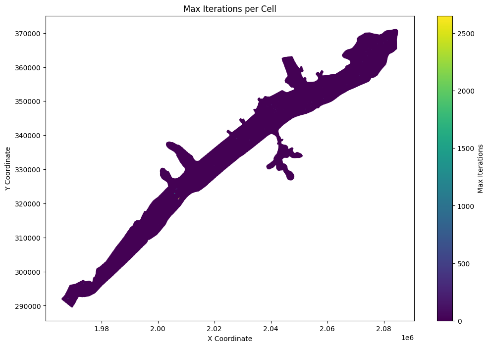
First few rows of the dataframe:
| mesh_name | cell_id | geometry | |
|---|---|---|---|
| 0 | BaldEagleCr | 0 | POINT (2083000 370750) |
| 1 | BaldEagleCr | 1 | POINT (2083250 370750) |
| 2 | BaldEagleCr | 2 | POINT (2083500 370750) |
| 3 | BaldEagleCr | 3 | POINT (2083750 370750) |
| 4 | BaldEagleCr | 4 | POINT (2084000 370750) |
| ... | ... | ... | ... |
| 19592 | BaldEagleCr | 19592 | POINT (1978423.032 300718.897) |
| 19593 | BaldEagleCr | 19593 | POINT (1973389.375 297311.928) |
| 19594 | BaldEagleCr | 19594 | POINT (1968834.79 295808.861) |
| 19595 | BaldEagleCr | 19595 | POINT (1966130.942 291879.395) |
| 19596 | BaldEagleCr | 19596 | POINT (1969660.046 289673.23) |
19597 rows × 3 columns
# List top 10 points for Max Iteration per Cell
# Sort the dataframe by cell_last_iteration in descending order
top_iterations = max_iter_gdf.sort_values(by='cell_last_iteration', ascending=False).head(10)
# Create a more informative display with coordinates
print("\nTop 10 Cells with Highest Iteration Counts:")
top_iterations_display = top_iterations.copy()
top_iterations_display['x_coord'] = top_iterations_display['geometry'].apply(lambda geom: round(geom.x, 2))
top_iterations_display['y_coord'] = top_iterations_display['geometry'].apply(lambda geom: round(geom.y, 2))
# Display the results in a formatted table
print(top_iterations_display[['mesh_name', 'cell_id', 'cell_last_iteration', 'x_coord', 'y_coord']])
Top 10 Cells with Highest Iteration Counts:
mesh_name cell_id cell_last_iteration x_coord y_coord
17721 BaldEagleCr 17721 2652 2007386.39 321546.77
17752 BaldEagleCr 17752 985 2005903.93 322873.01
17621 BaldEagleCr 17621 509 1968250.00 292000.00
13520 BaldEagleCr 13520 308 2007000.00 321250.00
13039 BaldEagleCr 13039 194 2006750.00 324250.00
8749 BaldEagleCr 8749 180 2028000.00 339000.00
16970 BaldEagleCr 16970 148 1973750.00 296500.00
6415 BaldEagleCr 6415 134 2054250.00 348500.00
6188 BaldEagleCr 6188 133 2040250.00 349000.00
6692 BaldEagleCr 6692 128 2041750.00 347500.00
# Get mesh maximum water surface elevation as Geodataframe
max_ws_gdf = HdfResultsMesh.get_mesh_max_ws(plan_hdf_path)
2025-12-16 21:03:31 - ras_commander.hdf.HdfResultsMesh - INFO - Using HDF file from direct string path: C:\Users\billk_clb\anaconda3\envs\rascmdr_piptest\Lib\site-packages\examples\example_projects\BaldEagleCrkMulti2D_11\BaldEagleDamBrk.p06.hdf
2025-12-16 21:03:31 - ras_commander.hdf.HdfResultsMesh - INFO - Final validated file path: C:\Users\billk_clb\anaconda3\envs\rascmdr_piptest\Lib\site-packages\examples\example_projects\BaldEagleCrkMulti2D_11\BaldEagleDamBrk.p06.hdf
2025-12-16 21:03:31 - ras_commander.hdf.HdfResultsMesh - INFO - Processing summary output for variable: Maximum Water Surface
2025-12-16 21:03:31 - ras_commander.hdf.HdfMesh - INFO - Using HDF file from h5py.File object: C:\Users\billk_clb\anaconda3\envs\rascmdr_piptest\Lib\site-packages\examples\example_projects\BaldEagleCrkMulti2D_11\BaldEagleDamBrk.p06.hdf
2025-12-16 21:03:31 - ras_commander.hdf.HdfMesh - INFO - Final validated file path: C:\Users\billk_clb\anaconda3\envs\rascmdr_piptest\Lib\site-packages\examples\example_projects\BaldEagleCrkMulti2D_11\BaldEagleDamBrk.p06.hdf
2025-12-16 21:03:31 - ras_commander.hdf.HdfMesh - INFO - Using existing Path object HDF file: C:\Users\billk_clb\anaconda3\envs\rascmdr_piptest\Lib\site-packages\examples\example_projects\BaldEagleCrkMulti2D_11\BaldEagleDamBrk.p06.hdf
2025-12-16 21:03:31 - ras_commander.hdf.HdfMesh - INFO - Final validated file path: C:\Users\billk_clb\anaconda3\envs\rascmdr_piptest\Lib\site-packages\examples\example_projects\BaldEagleCrkMulti2D_11\BaldEagleDamBrk.p06.hdf
2025-12-16 21:03:31 - ras_commander.hdf.HdfBase - INFO - Using HDF file from h5py.File object: C:\Users\billk_clb\anaconda3\envs\rascmdr_piptest\Lib\site-packages\examples\example_projects\BaldEagleCrkMulti2D_11\BaldEagleDamBrk.p06.hdf
2025-12-16 21:03:31 - ras_commander.hdf.HdfBase - INFO - Final validated file path: C:\Users\billk_clb\anaconda3\envs\rascmdr_piptest\Lib\site-packages\examples\example_projects\BaldEagleCrkMulti2D_11\BaldEagleDamBrk.p06.hdf
2025-12-16 21:03:31 - ras_commander.hdf.HdfBase - INFO - Found projection in HDF file: C:\Users\billk_clb\anaconda3\envs\rascmdr_piptest\Lib\site-packages\examples\example_projects\BaldEagleCrkMulti2D_11\BaldEagleDamBrk.p06.hdf
2025-12-16 21:03:31 - ras_commander.hdf.HdfBase - INFO - Converted WKT to EPSG:2271 from HDF file BaldEagleDamBrk.p06.hdf
2025-12-16 21:03:31 - ras_commander.hdf.HdfBase - INFO - Using HDF file from h5py.File object: C:\Users\billk_clb\anaconda3\envs\rascmdr_piptest\Lib\site-packages\examples\example_projects\BaldEagleCrkMulti2D_11\BaldEagleDamBrk.p06.hdf
2025-12-16 21:03:31 - ras_commander.hdf.HdfBase - INFO - Final validated file path: C:\Users\billk_clb\anaconda3\envs\rascmdr_piptest\Lib\site-packages\examples\example_projects\BaldEagleCrkMulti2D_11\BaldEagleDamBrk.p06.hdf
2025-12-16 21:03:31 - ras_commander.hdf.HdfBase - INFO - Found projection in HDF file: C:\Users\billk_clb\anaconda3\envs\rascmdr_piptest\Lib\site-packages\examples\example_projects\BaldEagleCrkMulti2D_11\BaldEagleDamBrk.p06.hdf
2025-12-16 21:03:31 - ras_commander.hdf.HdfBase - INFO - Converted WKT to EPSG:2271 from HDF file BaldEagleDamBrk.p06.hdf
2025-12-16 21:03:31 - ras_commander.hdf.HdfResultsMesh - INFO - Processed 19597 rows of summary output data
# Check Dataframe Attributes (the HDF Attributes are also imported as Geoataframe Attributes)
max_ws_gdf.attrs
{'mesh_name': 'BaldEagleCr',
'Max Time': np.float32(5.0),
'Max Value': np.float32(848.2054),
'Min Time': np.float32(0.99953705),
'Min Value': np.float32(535.585),
'Rows Variables': ['WSEL', 'Time'],
'Units': ['ft', 'days']}
| mesh_name | cell_id | maximum_water_surface | maximum_water_surface_time | geometry | |
|---|---|---|---|---|---|
| 0 | BaldEagleCr | 0 | 704.054443 | 2018-09-10 18:00:00 | POINT (2083000 370750) |
| 1 | BaldEagleCr | 1 | 692.377991 | 2018-09-10 18:04:00 | POINT (2083250 370750) |
| 2 | BaldEagleCr | 2 | 671.183472 | 2018-09-10 18:13:20 | POINT (2083500 370750) |
| 3 | BaldEagleCr | 3 | 660.605469 | 2018-09-10 18:54:40 | POINT (2083750 370750) |
| 4 | BaldEagleCr | 4 | 660.586243 | 2018-09-10 18:55:20 | POINT (2084000 370750) |
| ... | ... | ... | ... | ... | ... |
| 19592 | BaldEagleCr | 19592 | 0.000000 | 2018-09-09 00:00:00 | POINT (1978423.032 300718.897) |
| 19593 | BaldEagleCr | 19593 | 0.000000 | 2018-09-09 00:00:00 | POINT (1973389.375 297311.928) |
| 19594 | BaldEagleCr | 19594 | 0.000000 | 2018-09-09 00:00:00 | POINT (1968834.79 295808.861) |
| 19595 | BaldEagleCr | 19595 | 0.000000 | 2018-09-09 00:00:00 | POINT (1966130.942 291879.395) |
| 19596 | BaldEagleCr | 19596 | 0.000000 | 2018-09-09 00:00:00 | POINT (1969660.046 289673.23) |
19597 rows × 5 columns
# Plot the max water surface as a map
if generate_maps:
# Extract x and y coordinates from the geometry column
max_ws_gdf['x'] = max_ws_gdf['geometry'].apply(lambda geom: geom.x if geom is not None else None)
max_ws_gdf['y'] = max_ws_gdf['geometry'].apply(lambda geom: geom.y if geom is not None else None)
# Remove rows with None coordinates
max_ws_gdf = max_ws_gdf.dropna(subset=['x', 'y'])
# Create the plot
fig, ax = plt.subplots(figsize=(12, 8))
scatter = ax.scatter(max_ws_gdf['x'], max_ws_gdf['y'],
c=max_ws_gdf['maximum_water_surface'],
cmap='viridis',
s=10)
# Customize the plot
ax.set_title('Max Water Surface per Cell')
ax.set_xlabel('X Coordinate')
ax.set_ylabel('Y Coordinate')
plt.colorbar(scatter, label='Max Water Surface (ft)')
# Add grid lines
ax.grid(True, linestyle='--', alpha=0.7)
# Increase font size for better readability
plt.rcParams.update({'font.size': 12})
# Adjust layout to prevent cutting off labels
plt.tight_layout()
# Show the plot
plt.show()
else:
print("generate_maps is set to False")
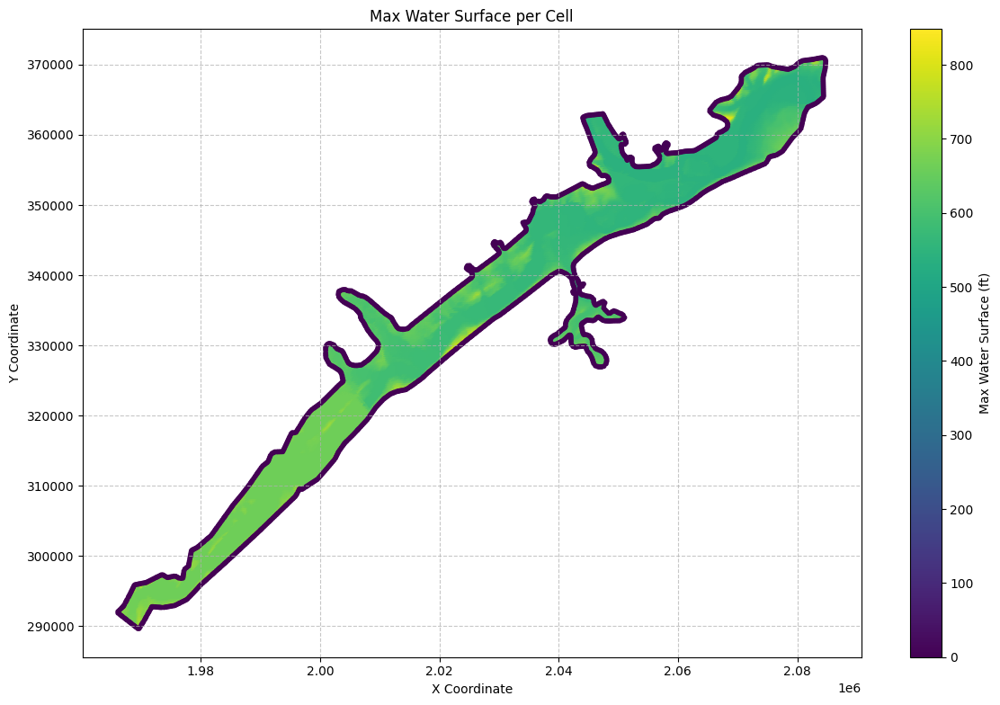
# Plot the time of the max water surface elevation (WSEL)
if generate_maps:
import matplotlib.dates as mdates
from datetime import datetime
# Convert the 'maximum_water_surface_time' to datetime objects
max_ws_gdf['max_wsel_time'] = pd.to_datetime(max_ws_gdf['maximum_water_surface_time'])
# Create the plot
fig, ax = plt.subplots(figsize=(12, 8))
# Convert datetime to hours since the start for colormap
min_time = max_ws_gdf['max_wsel_time'].min()
color_values = (max_ws_gdf['max_wsel_time'] - min_time).dt.total_seconds() / 3600 # Convert to hours
scatter = ax.scatter(max_ws_gdf['x'], max_ws_gdf['y'],
c=color_values,
cmap='viridis',
s=10)
# Customize the plot
ax.set_title('Time of Maximum Water Surface Elevation per Cell')
ax.set_xlabel('X Coordinate')
ax.set_ylabel('Y Coordinate')
# Set up the colorbar
cbar = plt.colorbar(scatter)
cbar.set_label('Hours since simulation start')
# Format the colorbar ticks to show hours
cbar.set_ticks(range(0, int(color_values.max()) + 1, 6)) # Set ticks every 6 hours
cbar.set_ticklabels([f'{h}h' for h in range(0, int(color_values.max()) + 1, 6)])
# Add grid lines
ax.grid(True, linestyle='--', alpha=0.7)
# Increase font size for better readability
plt.rcParams.update({'font.size': 12})
# Adjust layout to prevent cutting off labels
plt.tight_layout()
# Show the plot
plt.show()
# Find the overall maximum WSEL and its time
max_wsel_row = max_ws_gdf.loc[max_ws_gdf['maximum_water_surface'].idxmax()]
hours_since_start = (max_wsel_row['max_wsel_time'] - min_time).total_seconds() / 3600
print(f"\nOverall Maximum WSEL: {max_wsel_row['maximum_water_surface']:.2f} ft")
print(f"Time of Overall Maximum WSEL: {max_wsel_row['max_wsel_time']}")
print(f"Hours since simulation start: {hours_since_start:.2f} hours")
print(f"Location of Overall Maximum WSEL: X={max_wsel_row['x']}, Y={max_wsel_row['y']}")
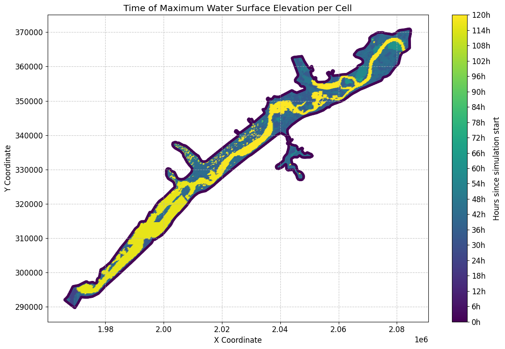
Overall Maximum WSEL: 848.21 ft
Time of Overall Maximum WSEL: 2018-09-10 17:00:00
Hours since simulation start: 41.00 hours
Location of Overall Maximum WSEL: X=1968500.0, Y=295000.0
# Get mesh minimum water surface elevation as geodataframe
min_ws_gdf = HdfResultsMesh.get_mesh_min_ws(plan_hdf_path)
2025-12-16 21:03:32 - ras_commander.hdf.HdfResultsMesh - INFO - Using HDF file from direct string path: C:\Users\billk_clb\anaconda3\envs\rascmdr_piptest\Lib\site-packages\examples\example_projects\BaldEagleCrkMulti2D_11\BaldEagleDamBrk.p06.hdf
2025-12-16 21:03:32 - ras_commander.hdf.HdfResultsMesh - INFO - Final validated file path: C:\Users\billk_clb\anaconda3\envs\rascmdr_piptest\Lib\site-packages\examples\example_projects\BaldEagleCrkMulti2D_11\BaldEagleDamBrk.p06.hdf
2025-12-16 21:03:32 - ras_commander.hdf.HdfResultsMesh - INFO - Processing summary output for variable: Minimum Water Surface
2025-12-16 21:03:32 - ras_commander.hdf.HdfMesh - INFO - Using HDF file from h5py.File object: C:\Users\billk_clb\anaconda3\envs\rascmdr_piptest\Lib\site-packages\examples\example_projects\BaldEagleCrkMulti2D_11\BaldEagleDamBrk.p06.hdf
2025-12-16 21:03:32 - ras_commander.hdf.HdfMesh - INFO - Final validated file path: C:\Users\billk_clb\anaconda3\envs\rascmdr_piptest\Lib\site-packages\examples\example_projects\BaldEagleCrkMulti2D_11\BaldEagleDamBrk.p06.hdf
2025-12-16 21:03:32 - ras_commander.hdf.HdfMesh - INFO - Using existing Path object HDF file: C:\Users\billk_clb\anaconda3\envs\rascmdr_piptest\Lib\site-packages\examples\example_projects\BaldEagleCrkMulti2D_11\BaldEagleDamBrk.p06.hdf
2025-12-16 21:03:32 - ras_commander.hdf.HdfMesh - INFO - Final validated file path: C:\Users\billk_clb\anaconda3\envs\rascmdr_piptest\Lib\site-packages\examples\example_projects\BaldEagleCrkMulti2D_11\BaldEagleDamBrk.p06.hdf
2025-12-16 21:03:32 - ras_commander.hdf.HdfBase - INFO - Using HDF file from h5py.File object: C:\Users\billk_clb\anaconda3\envs\rascmdr_piptest\Lib\site-packages\examples\example_projects\BaldEagleCrkMulti2D_11\BaldEagleDamBrk.p06.hdf
2025-12-16 21:03:32 - ras_commander.hdf.HdfBase - INFO - Final validated file path: C:\Users\billk_clb\anaconda3\envs\rascmdr_piptest\Lib\site-packages\examples\example_projects\BaldEagleCrkMulti2D_11\BaldEagleDamBrk.p06.hdf
2025-12-16 21:03:32 - ras_commander.hdf.HdfBase - INFO - Found projection in HDF file: C:\Users\billk_clb\anaconda3\envs\rascmdr_piptest\Lib\site-packages\examples\example_projects\BaldEagleCrkMulti2D_11\BaldEagleDamBrk.p06.hdf
2025-12-16 21:03:32 - ras_commander.hdf.HdfBase - INFO - Converted WKT to EPSG:2271 from HDF file BaldEagleDamBrk.p06.hdf
2025-12-16 21:03:32 - ras_commander.hdf.HdfBase - INFO - Using HDF file from h5py.File object: C:\Users\billk_clb\anaconda3\envs\rascmdr_piptest\Lib\site-packages\examples\example_projects\BaldEagleCrkMulti2D_11\BaldEagleDamBrk.p06.hdf
2025-12-16 21:03:32 - ras_commander.hdf.HdfBase - INFO - Final validated file path: C:\Users\billk_clb\anaconda3\envs\rascmdr_piptest\Lib\site-packages\examples\example_projects\BaldEagleCrkMulti2D_11\BaldEagleDamBrk.p06.hdf
2025-12-16 21:03:32 - ras_commander.hdf.HdfBase - INFO - Found projection in HDF file: C:\Users\billk_clb\anaconda3\envs\rascmdr_piptest\Lib\site-packages\examples\example_projects\BaldEagleCrkMulti2D_11\BaldEagleDamBrk.p06.hdf
2025-12-16 21:03:33 - ras_commander.hdf.HdfBase - INFO - Converted WKT to EPSG:2271 from HDF file BaldEagleDamBrk.p06.hdf
2025-12-16 21:03:33 - ras_commander.hdf.HdfResultsMesh - INFO - Processed 19597 rows of summary output data
| mesh_name | cell_id | minimum_water_surface | minimum_water_surface_time | geometry | |
|---|---|---|---|---|---|
| 0 | BaldEagleCr | 0 | 701.151245 | 2018-09-09 00:00:20 | POINT (2083000 370750) |
| 1 | BaldEagleCr | 1 | 689.052246 | 2018-09-09 00:00:20 | POINT (2083250 370750) |
| 2 | BaldEagleCr | 2 | 669.774719 | 2018-09-09 00:00:20 | POINT (2083500 370750) |
| 3 | BaldEagleCr | 3 | 658.986938 | 2018-09-09 00:00:20 | POINT (2083750 370750) |
| 4 | BaldEagleCr | 4 | 658.720581 | 2018-09-09 00:00:20 | POINT (2084000 370750) |
| ... | ... | ... | ... | ... | ... |
| 19592 | BaldEagleCr | 19592 | 0.000000 | 2018-09-09 00:00:00 | POINT (1978423.032 300718.897) |
| 19593 | BaldEagleCr | 19593 | 0.000000 | 2018-09-09 00:00:00 | POINT (1973389.375 297311.928) |
| 19594 | BaldEagleCr | 19594 | 0.000000 | 2018-09-09 00:00:00 | POINT (1968834.79 295808.861) |
| 19595 | BaldEagleCr | 19595 | 0.000000 | 2018-09-09 00:00:00 | POINT (1966130.942 291879.395) |
| 19596 | BaldEagleCr | 19596 | 0.000000 | 2018-09-09 00:00:00 | POINT (1969660.046 289673.23) |
19597 rows × 5 columns
# Get mesh maximum face velocity as geodataframe
max_face_v_gdf = HdfResultsMesh.get_mesh_max_face_v(plan_hdf_path)
print("\nMesh Max Face Velocity:")
2025-12-16 21:03:33 - ras_commander.hdf.HdfResultsMesh - INFO - Using HDF file from direct string path: C:\Users\billk_clb\anaconda3\envs\rascmdr_piptest\Lib\site-packages\examples\example_projects\BaldEagleCrkMulti2D_11\BaldEagleDamBrk.p06.hdf
2025-12-16 21:03:33 - ras_commander.hdf.HdfResultsMesh - INFO - Final validated file path: C:\Users\billk_clb\anaconda3\envs\rascmdr_piptest\Lib\site-packages\examples\example_projects\BaldEagleCrkMulti2D_11\BaldEagleDamBrk.p06.hdf
2025-12-16 21:03:33 - ras_commander.hdf.HdfResultsMesh - INFO - Processing summary output for variable: Maximum Face Velocity
2025-12-16 21:03:33 - ras_commander.hdf.HdfMesh - INFO - Using HDF file from h5py.File object: C:\Users\billk_clb\anaconda3\envs\rascmdr_piptest\Lib\site-packages\examples\example_projects\BaldEagleCrkMulti2D_11\BaldEagleDamBrk.p06.hdf
2025-12-16 21:03:33 - ras_commander.hdf.HdfMesh - INFO - Final validated file path: C:\Users\billk_clb\anaconda3\envs\rascmdr_piptest\Lib\site-packages\examples\example_projects\BaldEagleCrkMulti2D_11\BaldEagleDamBrk.p06.hdf
2025-12-16 21:03:33 - ras_commander.hdf.HdfMesh - INFO - Using existing Path object HDF file: C:\Users\billk_clb\anaconda3\envs\rascmdr_piptest\Lib\site-packages\examples\example_projects\BaldEagleCrkMulti2D_11\BaldEagleDamBrk.p06.hdf
2025-12-16 21:03:33 - ras_commander.hdf.HdfMesh - INFO - Final validated file path: C:\Users\billk_clb\anaconda3\envs\rascmdr_piptest\Lib\site-packages\examples\example_projects\BaldEagleCrkMulti2D_11\BaldEagleDamBrk.p06.hdf
2025-12-16 21:03:33 - ras_commander.hdf.HdfBase - INFO - Using HDF file from h5py.File object: C:\Users\billk_clb\anaconda3\envs\rascmdr_piptest\Lib\site-packages\examples\example_projects\BaldEagleCrkMulti2D_11\BaldEagleDamBrk.p06.hdf
2025-12-16 21:03:33 - ras_commander.hdf.HdfBase - INFO - Final validated file path: C:\Users\billk_clb\anaconda3\envs\rascmdr_piptest\Lib\site-packages\examples\example_projects\BaldEagleCrkMulti2D_11\BaldEagleDamBrk.p06.hdf
2025-12-16 21:03:33 - ras_commander.hdf.HdfBase - INFO - Found projection in HDF file: C:\Users\billk_clb\anaconda3\envs\rascmdr_piptest\Lib\site-packages\examples\example_projects\BaldEagleCrkMulti2D_11\BaldEagleDamBrk.p06.hdf
2025-12-16 21:03:33 - ras_commander.hdf.HdfBase - INFO - Converted WKT to EPSG:2271 from HDF file BaldEagleDamBrk.p06.hdf
2025-12-16 21:03:33 - ras_commander.hdf.HdfBase - INFO - Using HDF file from h5py.File object: C:\Users\billk_clb\anaconda3\envs\rascmdr_piptest\Lib\site-packages\examples\example_projects\BaldEagleCrkMulti2D_11\BaldEagleDamBrk.p06.hdf
2025-12-16 21:03:33 - ras_commander.hdf.HdfBase - INFO - Final validated file path: C:\Users\billk_clb\anaconda3\envs\rascmdr_piptest\Lib\site-packages\examples\example_projects\BaldEagleCrkMulti2D_11\BaldEagleDamBrk.p06.hdf
2025-12-16 21:03:33 - ras_commander.hdf.HdfBase - INFO - Found projection in HDF file: C:\Users\billk_clb\anaconda3\envs\rascmdr_piptest\Lib\site-packages\examples\example_projects\BaldEagleCrkMulti2D_11\BaldEagleDamBrk.p06.hdf
2025-12-16 21:03:33 - ras_commander.hdf.HdfBase - INFO - Converted WKT to EPSG:2271 from HDF file BaldEagleDamBrk.p06.hdf
2025-12-16 21:03:33 - ras_commander.hdf.HdfResultsMesh - INFO - Processed 37594 rows of summary output data
Mesh Max Face Velocity:
| mesh_name | face_id | maximum_face_velocity | maximum_face_velocity_time | geometry | |
|---|---|---|---|---|---|
| 0 | BaldEagleCr | 0 | 0.451430 | 2018-09-10 18:00:00 | LINESTRING (2042125 351625, 2042375 351625) |
| 1 | BaldEagleCr | 1 | -0.887190 | 2018-09-10 18:00:40 | LINESTRING (2042375 351625, 2042375 351875) |
| 2 | BaldEagleCr | 2 | -0.498561 | 2018-09-10 18:00:40 | LINESTRING (2042375 351875, 2042125 351875) |
| 3 | BaldEagleCr | 3 | -0.304673 | 2018-09-10 18:00:40 | LINESTRING (2042125 351875, 2042125 351625) |
| 4 | BaldEagleCr | 4 | -0.762405 | 2018-09-10 10:00:40 | LINESTRING (2042375 351375, 2042375 351625) |
| ... | ... | ... | ... | ... | ... |
| 37589 | BaldEagleCr | 37589 | 0.000000 | 2018-09-09 00:00:00 | LINESTRING (1978444.054 300812.794, 1978402.01... |
| 37590 | BaldEagleCr | 37590 | 0.000000 | 2018-09-09 00:00:00 | LINESTRING (1973531.76 297370.846, 1973246.989... |
| 37591 | BaldEagleCr | 37591 | 0.000000 | 2018-09-09 00:00:00 | LINESTRING (1968886.801 295900.5, 1968782.778 ... |
| 37592 | BaldEagleCr | 37592 | 0.000000 | 2018-09-09 00:00:00 | LINESTRING (1965981.775 291978.68, 1966280.11 ... |
| 37593 | BaldEagleCr | 37593 | 0.000000 | 2018-09-09 00:00:00 | LINESTRING (1969588.438 289578.114, 1969731.65... |
37594 rows × 5 columns
# Extract midpoint coordinates from the LineString geometries
max_face_v_gdf['x'] = max_face_v_gdf['geometry'].apply(lambda geom: geom.centroid.x)
max_face_v_gdf['y'] = max_face_v_gdf['geometry'].apply(lambda geom: geom.centroid.y)
# Create the plot
fig, ax = plt.subplots(figsize=(12, 8))
scatter = ax.scatter(max_face_v_gdf['x'], max_face_v_gdf['y'],
c=max_face_v_gdf['maximum_face_velocity'].abs(),
cmap='viridis',
s=10)
# Customize the plot
ax.set_title('Max Face Velocity per Face')
ax.set_xlabel('X Coordinate')
ax.set_ylabel('Y Coordinate')
plt.colorbar(scatter, label='Max Face Velocity (ft/s)')
# Add grid lines
ax.grid(True, linestyle='--', alpha=0.7)
# Increase font size for better readability
plt.rcParams.update({'font.size': 12})
# Adjust layout to prevent cutting off labels
plt.tight_layout()
# Show the plot
plt.show()
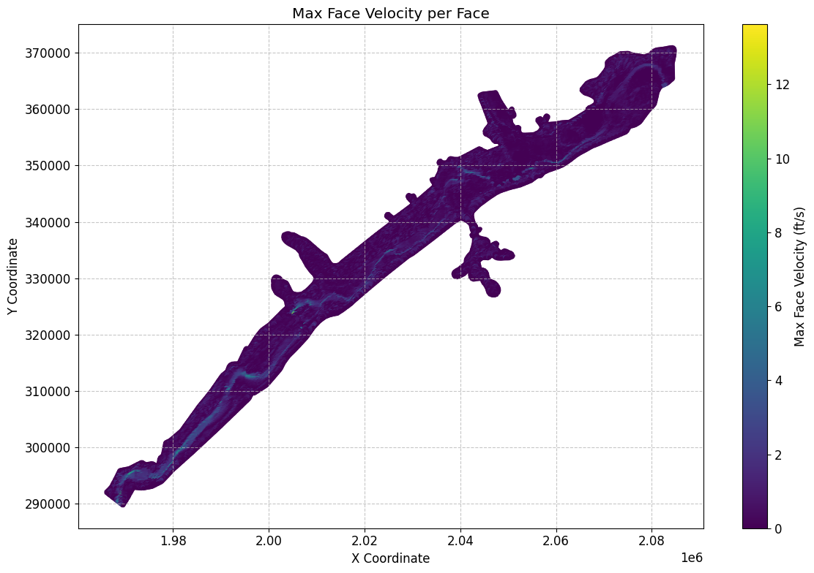
# Get mesh minimum face velocity as geodataframe
min_face_v_gdf = HdfResultsMesh.get_mesh_min_face_v(plan_hdf_path)
2025-12-16 21:03:34 - ras_commander.hdf.HdfResultsMesh - INFO - Using HDF file from direct string path: C:\Users\billk_clb\anaconda3\envs\rascmdr_piptest\Lib\site-packages\examples\example_projects\BaldEagleCrkMulti2D_11\BaldEagleDamBrk.p06.hdf
2025-12-16 21:03:34 - ras_commander.hdf.HdfResultsMesh - INFO - Final validated file path: C:\Users\billk_clb\anaconda3\envs\rascmdr_piptest\Lib\site-packages\examples\example_projects\BaldEagleCrkMulti2D_11\BaldEagleDamBrk.p06.hdf
2025-12-16 21:03:34 - ras_commander.hdf.HdfResultsMesh - INFO - Processing summary output for variable: Minimum Face Velocity
2025-12-16 21:03:34 - ras_commander.hdf.HdfMesh - INFO - Using HDF file from h5py.File object: C:\Users\billk_clb\anaconda3\envs\rascmdr_piptest\Lib\site-packages\examples\example_projects\BaldEagleCrkMulti2D_11\BaldEagleDamBrk.p06.hdf
2025-12-16 21:03:34 - ras_commander.hdf.HdfMesh - INFO - Final validated file path: C:\Users\billk_clb\anaconda3\envs\rascmdr_piptest\Lib\site-packages\examples\example_projects\BaldEagleCrkMulti2D_11\BaldEagleDamBrk.p06.hdf
2025-12-16 21:03:34 - ras_commander.hdf.HdfMesh - INFO - Using existing Path object HDF file: C:\Users\billk_clb\anaconda3\envs\rascmdr_piptest\Lib\site-packages\examples\example_projects\BaldEagleCrkMulti2D_11\BaldEagleDamBrk.p06.hdf
2025-12-16 21:03:34 - ras_commander.hdf.HdfMesh - INFO - Final validated file path: C:\Users\billk_clb\anaconda3\envs\rascmdr_piptest\Lib\site-packages\examples\example_projects\BaldEagleCrkMulti2D_11\BaldEagleDamBrk.p06.hdf
2025-12-16 21:03:34 - ras_commander.hdf.HdfBase - INFO - Using HDF file from h5py.File object: C:\Users\billk_clb\anaconda3\envs\rascmdr_piptest\Lib\site-packages\examples\example_projects\BaldEagleCrkMulti2D_11\BaldEagleDamBrk.p06.hdf
2025-12-16 21:03:34 - ras_commander.hdf.HdfBase - INFO - Final validated file path: C:\Users\billk_clb\anaconda3\envs\rascmdr_piptest\Lib\site-packages\examples\example_projects\BaldEagleCrkMulti2D_11\BaldEagleDamBrk.p06.hdf
2025-12-16 21:03:34 - ras_commander.hdf.HdfBase - INFO - Found projection in HDF file: C:\Users\billk_clb\anaconda3\envs\rascmdr_piptest\Lib\site-packages\examples\example_projects\BaldEagleCrkMulti2D_11\BaldEagleDamBrk.p06.hdf
2025-12-16 21:03:34 - ras_commander.hdf.HdfBase - INFO - Converted WKT to EPSG:2271 from HDF file BaldEagleDamBrk.p06.hdf
2025-12-16 21:03:34 - ras_commander.hdf.HdfBase - INFO - Using HDF file from h5py.File object: C:\Users\billk_clb\anaconda3\envs\rascmdr_piptest\Lib\site-packages\examples\example_projects\BaldEagleCrkMulti2D_11\BaldEagleDamBrk.p06.hdf
2025-12-16 21:03:34 - ras_commander.hdf.HdfBase - INFO - Final validated file path: C:\Users\billk_clb\anaconda3\envs\rascmdr_piptest\Lib\site-packages\examples\example_projects\BaldEagleCrkMulti2D_11\BaldEagleDamBrk.p06.hdf
2025-12-16 21:03:34 - ras_commander.hdf.HdfBase - INFO - Found projection in HDF file: C:\Users\billk_clb\anaconda3\envs\rascmdr_piptest\Lib\site-packages\examples\example_projects\BaldEagleCrkMulti2D_11\BaldEagleDamBrk.p06.hdf
2025-12-16 21:03:34 - ras_commander.hdf.HdfBase - INFO - Converted WKT to EPSG:2271 from HDF file BaldEagleDamBrk.p06.hdf
2025-12-16 21:03:34 - ras_commander.hdf.HdfResultsMesh - INFO - Processed 37594 rows of summary output data
Mesh Min Face Velocity:
| mesh_name | face_id | minimum_face_velocity | minimum_face_velocity_time | geometry | |
|---|---|---|---|---|---|
| 0 | BaldEagleCr | 0 | 0.0 | 2018-09-09 00:00:20 | LINESTRING (2042125 351625, 2042375 351625) |
| 1 | BaldEagleCr | 1 | 0.0 | 2018-09-09 00:00:20 | LINESTRING (2042375 351625, 2042375 351875) |
| 2 | BaldEagleCr | 2 | 0.0 | 2018-09-09 00:00:20 | LINESTRING (2042375 351875, 2042125 351875) |
| 3 | BaldEagleCr | 3 | 0.0 | 2018-09-09 00:00:20 | LINESTRING (2042125 351875, 2042125 351625) |
| 4 | BaldEagleCr | 4 | 0.0 | 2018-09-09 00:00:20 | LINESTRING (2042375 351375, 2042375 351625) |
| ... | ... | ... | ... | ... | ... |
| 37589 | BaldEagleCr | 37589 | 0.0 | 2018-09-09 00:00:20 | LINESTRING (1978444.054 300812.794, 1978402.01... |
| 37590 | BaldEagleCr | 37590 | 0.0 | 2018-09-09 00:00:20 | LINESTRING (1973531.76 297370.846, 1973246.989... |
| 37591 | BaldEagleCr | 37591 | 0.0 | 2018-09-09 00:00:20 | LINESTRING (1968886.801 295900.5, 1968782.778 ... |
| 37592 | BaldEagleCr | 37592 | 0.0 | 2018-09-09 00:00:20 | LINESTRING (1965981.775 291978.68, 1966280.11 ... |
| 37593 | BaldEagleCr | 37593 | 0.0 | 2018-09-09 00:00:20 | LINESTRING (1969588.438 289578.114, 1969731.65... |
37594 rows × 5 columns
# Get mesh max water surface error as geodataframe
max_ws_err_gdf = HdfResultsMesh.get_mesh_max_ws_err(plan_hdf_path)
2025-12-16 21:03:34 - ras_commander.hdf.HdfResultsMesh - INFO - Using HDF file from direct string path: C:\Users\billk_clb\anaconda3\envs\rascmdr_piptest\Lib\site-packages\examples\example_projects\BaldEagleCrkMulti2D_11\BaldEagleDamBrk.p06.hdf
2025-12-16 21:03:34 - ras_commander.hdf.HdfResultsMesh - INFO - Final validated file path: C:\Users\billk_clb\anaconda3\envs\rascmdr_piptest\Lib\site-packages\examples\example_projects\BaldEagleCrkMulti2D_11\BaldEagleDamBrk.p06.hdf
2025-12-16 21:03:34 - ras_commander.hdf.HdfResultsMesh - INFO - Processing summary output for variable: Cell Maximum Water Surface Error
2025-12-16 21:03:34 - ras_commander.hdf.HdfMesh - INFO - Using HDF file from h5py.File object: C:\Users\billk_clb\anaconda3\envs\rascmdr_piptest\Lib\site-packages\examples\example_projects\BaldEagleCrkMulti2D_11\BaldEagleDamBrk.p06.hdf
2025-12-16 21:03:34 - ras_commander.hdf.HdfMesh - INFO - Final validated file path: C:\Users\billk_clb\anaconda3\envs\rascmdr_piptest\Lib\site-packages\examples\example_projects\BaldEagleCrkMulti2D_11\BaldEagleDamBrk.p06.hdf
2025-12-16 21:03:34 - ras_commander.hdf.HdfMesh - INFO - Using existing Path object HDF file: C:\Users\billk_clb\anaconda3\envs\rascmdr_piptest\Lib\site-packages\examples\example_projects\BaldEagleCrkMulti2D_11\BaldEagleDamBrk.p06.hdf
2025-12-16 21:03:34 - ras_commander.hdf.HdfMesh - INFO - Final validated file path: C:\Users\billk_clb\anaconda3\envs\rascmdr_piptest\Lib\site-packages\examples\example_projects\BaldEagleCrkMulti2D_11\BaldEagleDamBrk.p06.hdf
2025-12-16 21:03:35 - ras_commander.hdf.HdfBase - INFO - Using HDF file from h5py.File object: C:\Users\billk_clb\anaconda3\envs\rascmdr_piptest\Lib\site-packages\examples\example_projects\BaldEagleCrkMulti2D_11\BaldEagleDamBrk.p06.hdf
2025-12-16 21:03:35 - ras_commander.hdf.HdfBase - INFO - Final validated file path: C:\Users\billk_clb\anaconda3\envs\rascmdr_piptest\Lib\site-packages\examples\example_projects\BaldEagleCrkMulti2D_11\BaldEagleDamBrk.p06.hdf
2025-12-16 21:03:35 - ras_commander.hdf.HdfBase - INFO - Found projection in HDF file: C:\Users\billk_clb\anaconda3\envs\rascmdr_piptest\Lib\site-packages\examples\example_projects\BaldEagleCrkMulti2D_11\BaldEagleDamBrk.p06.hdf
2025-12-16 21:03:35 - ras_commander.hdf.HdfBase - INFO - Converted WKT to EPSG:2271 from HDF file BaldEagleDamBrk.p06.hdf
2025-12-16 21:03:35 - ras_commander.hdf.HdfBase - INFO - Using HDF file from h5py.File object: C:\Users\billk_clb\anaconda3\envs\rascmdr_piptest\Lib\site-packages\examples\example_projects\BaldEagleCrkMulti2D_11\BaldEagleDamBrk.p06.hdf
2025-12-16 21:03:35 - ras_commander.hdf.HdfBase - INFO - Final validated file path: C:\Users\billk_clb\anaconda3\envs\rascmdr_piptest\Lib\site-packages\examples\example_projects\BaldEagleCrkMulti2D_11\BaldEagleDamBrk.p06.hdf
2025-12-16 21:03:35 - ras_commander.hdf.HdfBase - INFO - Found projection in HDF file: C:\Users\billk_clb\anaconda3\envs\rascmdr_piptest\Lib\site-packages\examples\example_projects\BaldEagleCrkMulti2D_11\BaldEagleDamBrk.p06.hdf
2025-12-16 21:03:35 - ras_commander.hdf.HdfBase - INFO - Converted WKT to EPSG:2271 from HDF file BaldEagleDamBrk.p06.hdf
2025-12-16 21:03:35 - ras_commander.hdf.HdfResultsMesh - INFO - Processed 19597 rows of summary output data
Mesh Max Water Surface Error:
| mesh_name | cell_id | cell_maximum_water_surface_error | cell_maximum_water_surface_error_time | geometry | |
|---|---|---|---|---|---|
| 0 | BaldEagleCr | 0 | 0.000206 | 2018-09-11 20:50:00 | POINT (2083000 370750) |
| 1 | BaldEagleCr | 1 | 0.001100 | 2018-09-10 21:38:00 | POINT (2083250 370750) |
| 2 | BaldEagleCr | 2 | 0.000795 | 2018-09-10 09:58:40 | POINT (2083500 370750) |
| 3 | BaldEagleCr | 3 | 0.000314 | 2018-09-10 17:00:40 | POINT (2083750 370750) |
| 4 | BaldEagleCr | 4 | 0.001795 | 2018-09-10 09:28:00 | POINT (2084000 370750) |
| ... | ... | ... | ... | ... | ... |
| 19592 | BaldEagleCr | 19592 | 0.000000 | 2018-09-09 00:00:00 | POINT (1978423.032 300718.897) |
| 19593 | BaldEagleCr | 19593 | 0.000000 | 2018-09-09 00:00:00 | POINT (1973389.375 297311.928) |
| 19594 | BaldEagleCr | 19594 | 0.000000 | 2018-09-09 00:00:00 | POINT (1968834.79 295808.861) |
| 19595 | BaldEagleCr | 19595 | 0.000000 | 2018-09-09 00:00:00 | POINT (1966130.942 291879.395) |
| 19596 | BaldEagleCr | 19596 | 0.000000 | 2018-09-09 00:00:00 | POINT (1969660.046 289673.23) |
19597 rows × 5 columns
# Plot max water surface error
if generate_maps:
# Extract x and y coordinates from the geometry points, handling None values
max_ws_err_gdf['x'] = max_ws_err_gdf['geometry'].apply(lambda geom: geom.x if geom is not None else None)
max_ws_err_gdf['y'] = max_ws_err_gdf['geometry'].apply(lambda geom: geom.y if geom is not None else None)
# Remove any rows with None coordinates
max_ws_err_gdf = max_ws_err_gdf.dropna(subset=['x', 'y'])
# Create the plot
fig, ax = plt.subplots(figsize=(12, 8))
scatter = ax.scatter(max_ws_err_gdf['x'], max_ws_err_gdf['y'],
c=max_ws_err_gdf['cell_maximum_water_surface_error'],
cmap='viridis',
s=10)
# Customize the plot
ax.set_title('Max Water Surface Error per Cell')
ax.set_xlabel('X Coordinate')
ax.set_ylabel('Y Coordinate')
plt.colorbar(scatter, label='Max Water Surface Error (ft)')
# Add grid lines
ax.grid(True, linestyle='--', alpha=0.7)
# Increase font size for better readability
plt.rcParams.update({'font.size': 12})
# Adjust layout to prevent cutting off labels
plt.tight_layout()
# Show the plot
plt.show()
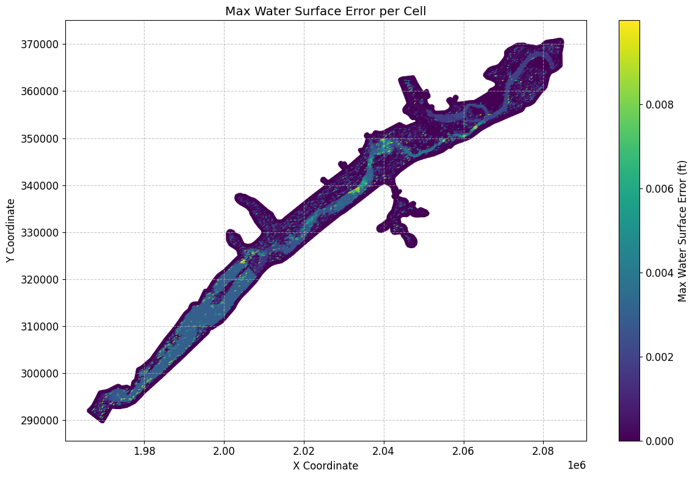
# Sort Dataframe to show top 10 maximum water surface errors:
max_ws_err_gdf_sorted = max_ws_err_gdf.sort_values(by='cell_maximum_water_surface_error', ascending=False)
Top 10 maximum water surface errors:
| mesh_name | cell_id | cell_maximum_water_surface_error | cell_maximum_water_surface_error_time | geometry | x | y | |
|---|---|---|---|---|---|---|---|
| 1709 | BaldEagleCr | 1709 | 0.009991 | 2018-09-10 09:06:40 | POINT (2077250 362750) | 2.077250e+06 | 362750.000000 |
| 12789 | BaldEagleCr | 12789 | 0.009980 | 2018-09-12 07:43:20 | POINT (2008250 325500) | 2.008250e+06 | 325500.000000 |
| 5967 | BaldEagleCr | 5967 | 0.009940 | 2018-09-12 21:01:20 | POINT (2055000 349750) | 2.055000e+06 | 349750.000000 |
| 13627 | BaldEagleCr | 13627 | 0.009938 | 2018-09-11 23:23:20 | POINT (2004250 320500) | 2.004250e+06 | 320500.000000 |
| 1882 | BaldEagleCr | 1882 | 0.009926 | 2018-09-10 10:25:20 | POINT (2070000 362000) | 2.070000e+06 | 362000.000000 |
| ... | ... | ... | ... | ... | ... | ... | ... |
| 19376 | BaldEagleCr | 19376 | 0.000000 | 2018-09-09 00:00:00 | POINT (1980950.412 302350.529) | 1.980950e+06 | 302350.529195 |
| 19377 | BaldEagleCr | 19377 | 0.000000 | 2018-09-09 00:00:00 | POINT (1990076.021 303763.106) | 1.990076e+06 | 303763.106097 |
| 19378 | BaldEagleCr | 19378 | 0.000000 | 2018-09-09 00:00:00 | POINT (1982502.513 303830.235) | 1.982503e+06 | 303830.234704 |
| 19379 | BaldEagleCr | 19379 | 0.000000 | 2018-09-09 00:00:00 | POINT (1989889.605 303610.306) | 1.989890e+06 | 303610.306187 |
| 19380 | BaldEagleCr | 19380 | 0.000000 | 2018-09-09 00:00:00 | POINT (1989034.145 302930.721) | 1.989034e+06 | 302930.720797 |
19597 rows × 7 columns
# Get mesh summary output for other Datasets (here we retrieve Maximum Face Courant) as geodataframe
max_courant_gdf = HdfResultsMesh.get_mesh_summary(plan_hdf_path, var="Maximum Face Courant")
2025-12-16 21:03:35 - ras_commander.hdf.HdfResultsMesh - INFO - Using HDF file from direct string path: C:\Users\billk_clb\anaconda3\envs\rascmdr_piptest\Lib\site-packages\examples\example_projects\BaldEagleCrkMulti2D_11\BaldEagleDamBrk.p06.hdf
2025-12-16 21:03:35 - ras_commander.hdf.HdfResultsMesh - INFO - Final validated file path: C:\Users\billk_clb\anaconda3\envs\rascmdr_piptest\Lib\site-packages\examples\example_projects\BaldEagleCrkMulti2D_11\BaldEagleDamBrk.p06.hdf
2025-12-16 21:03:35 - ras_commander.hdf.HdfResultsMesh - INFO - Processing summary output for variable: Maximum Face Courant
2025-12-16 21:03:35 - ras_commander.hdf.HdfMesh - INFO - Using HDF file from h5py.File object: C:\Users\billk_clb\anaconda3\envs\rascmdr_piptest\Lib\site-packages\examples\example_projects\BaldEagleCrkMulti2D_11\BaldEagleDamBrk.p06.hdf
2025-12-16 21:03:35 - ras_commander.hdf.HdfMesh - INFO - Final validated file path: C:\Users\billk_clb\anaconda3\envs\rascmdr_piptest\Lib\site-packages\examples\example_projects\BaldEagleCrkMulti2D_11\BaldEagleDamBrk.p06.hdf
2025-12-16 21:03:35 - ras_commander.hdf.HdfMesh - INFO - Using existing Path object HDF file: C:\Users\billk_clb\anaconda3\envs\rascmdr_piptest\Lib\site-packages\examples\example_projects\BaldEagleCrkMulti2D_11\BaldEagleDamBrk.p06.hdf
2025-12-16 21:03:35 - ras_commander.hdf.HdfMesh - INFO - Final validated file path: C:\Users\billk_clb\anaconda3\envs\rascmdr_piptest\Lib\site-packages\examples\example_projects\BaldEagleCrkMulti2D_11\BaldEagleDamBrk.p06.hdf
2025-12-16 21:03:36 - ras_commander.hdf.HdfBase - INFO - Using HDF file from h5py.File object: C:\Users\billk_clb\anaconda3\envs\rascmdr_piptest\Lib\site-packages\examples\example_projects\BaldEagleCrkMulti2D_11\BaldEagleDamBrk.p06.hdf
2025-12-16 21:03:36 - ras_commander.hdf.HdfBase - INFO - Final validated file path: C:\Users\billk_clb\anaconda3\envs\rascmdr_piptest\Lib\site-packages\examples\example_projects\BaldEagleCrkMulti2D_11\BaldEagleDamBrk.p06.hdf
2025-12-16 21:03:36 - ras_commander.hdf.HdfBase - INFO - Found projection in HDF file: C:\Users\billk_clb\anaconda3\envs\rascmdr_piptest\Lib\site-packages\examples\example_projects\BaldEagleCrkMulti2D_11\BaldEagleDamBrk.p06.hdf
2025-12-16 21:03:36 - ras_commander.hdf.HdfBase - INFO - Converted WKT to EPSG:2271 from HDF file BaldEagleDamBrk.p06.hdf
2025-12-16 21:03:36 - ras_commander.hdf.HdfBase - INFO - Using HDF file from h5py.File object: C:\Users\billk_clb\anaconda3\envs\rascmdr_piptest\Lib\site-packages\examples\example_projects\BaldEagleCrkMulti2D_11\BaldEagleDamBrk.p06.hdf
2025-12-16 21:03:36 - ras_commander.hdf.HdfBase - INFO - Final validated file path: C:\Users\billk_clb\anaconda3\envs\rascmdr_piptest\Lib\site-packages\examples\example_projects\BaldEagleCrkMulti2D_11\BaldEagleDamBrk.p06.hdf
2025-12-16 21:03:36 - ras_commander.hdf.HdfBase - INFO - Found projection in HDF file: C:\Users\billk_clb\anaconda3\envs\rascmdr_piptest\Lib\site-packages\examples\example_projects\BaldEagleCrkMulti2D_11\BaldEagleDamBrk.p06.hdf
2025-12-16 21:03:36 - ras_commander.hdf.HdfBase - INFO - Converted WKT to EPSG:2271 from HDF file BaldEagleDamBrk.p06.hdf
2025-12-16 21:03:36 - ras_commander.hdf.HdfResultsMesh - INFO - Processed 37594 rows of summary output data
Mesh Summary Output (Maximum Courant):
{'mesh_name': 'BaldEagleCr',
'Can Interpolate': 'False',
'Can Plot': 'True',
'Coverage': 'Average',
'Location': 'Faces',
'Maximum Value of Data Set': np.float32(0.6819884),
'Minimum Value of Data Set': np.float32(0.0),
'Name': 'Face Courant Maximum',
'Orientation': 'Scalar',
'Row': np.int32(0),
'Rows Variables': ['Courant Face', 'Time'],
'Units': 'vel*dt/length',
'Units per row': ['vel*dt/length', 'days']}
| mesh_name | face_id | maximum_face_courant | maximum_face_courant_time | geometry | |
|---|---|---|---|---|---|
| 0 | BaldEagleCr | 0 | 0.000020 | 2018-09-09 11:03:20 | LINESTRING (2042125 351625, 2042375 351625) |
| 1 | BaldEagleCr | 1 | 0.000062 | 2018-09-09 11:32:40 | LINESTRING (2042375 351625, 2042375 351875) |
| 2 | BaldEagleCr | 2 | 0.000048 | 2018-09-10 07:02:40 | LINESTRING (2042375 351875, 2042125 351875) |
| 3 | BaldEagleCr | 3 | 0.000016 | 2018-09-09 11:03:20 | LINESTRING (2042125 351875, 2042125 351625) |
| 4 | BaldEagleCr | 4 | 0.000062 | 2018-09-09 11:05:20 | LINESTRING (2042375 351375, 2042375 351625) |
| ... | ... | ... | ... | ... | ... |
| 37589 | BaldEagleCr | 37589 | 0.000000 | 2018-09-09 00:00:00 | LINESTRING (1978444.054 300812.794, 1978402.01... |
| 37590 | BaldEagleCr | 37590 | 0.000000 | 2018-09-09 00:00:00 | LINESTRING (1973531.76 297370.846, 1973246.989... |
| 37591 | BaldEagleCr | 37591 | 0.000000 | 2018-09-09 00:00:00 | LINESTRING (1968886.801 295900.5, 1968782.778 ... |
| 37592 | BaldEagleCr | 37592 | 0.000000 | 2018-09-09 00:00:00 | LINESTRING (1965981.775 291978.68, 1966280.11 ... |
| 37593 | BaldEagleCr | 37593 | 0.000000 | 2018-09-09 00:00:00 | LINESTRING (1969588.438 289578.114, 1969731.65... |
37594 rows × 5 columns
# Plot max Courant number
# Convert to GeoDataFrame if not empty
if not max_courant_gdf.empty:
if generate_maps:
# Get centroids of line geometries for plotting
max_courant_gdf['centroid'] = max_courant_gdf.geometry.centroid
max_courant_gdf['x'] = max_courant_gdf.centroid.x
max_courant_gdf['y'] = max_courant_gdf.centroid.y
# Create the plot
fig, ax = plt.subplots(figsize=(12, 8))
scatter = ax.scatter(max_courant_gdf['x'], max_courant_gdf['y'],
c=max_courant_gdf['maximum_face_courant'],
cmap='viridis',
s=10)
# Customize the plot
ax.set_title('Max Courant Number per Face')
ax.set_xlabel('X Coordinate')
ax.set_ylabel('Y Coordinate')
plt.colorbar(scatter, label='Max Courant Number')
# Add grid lines
ax.grid(True, linestyle='--', alpha=0.7)
# Increase font size for better readability
plt.rcParams.update({'font.size': 12})
# Adjust layout to prevent cutting off labels
plt.tight_layout()
# Show the plot
plt.show()
# Print the first few rows of the dataframe for verification
print("\nFirst few rows of the Courant number dataframe:")
max_courant_gdf
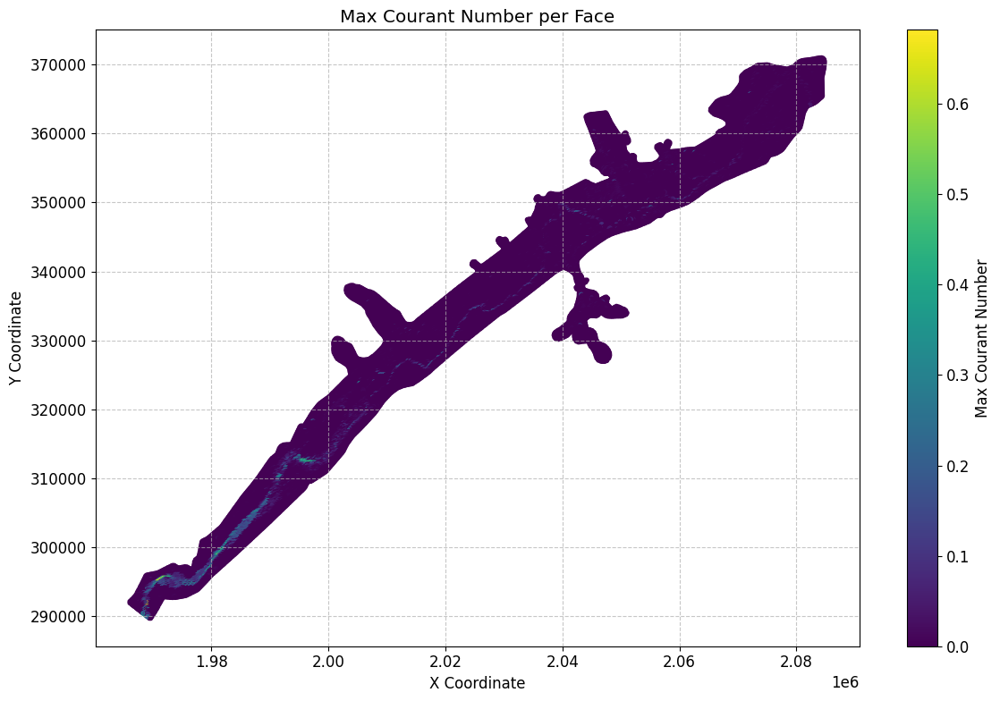
First few rows of the Courant number dataframe:
| mesh_name | face_id | maximum_face_courant | maximum_face_courant_time | geometry | centroid | x | y | |
|---|---|---|---|---|---|---|---|---|
| 0 | BaldEagleCr | 0 | 0.000020 | 2018-09-09 11:03:20 | LINESTRING (2042125 351625, 2042375 351625) | POINT (2042250 351625) | 2.042250e+06 | 351625.000000 |
| 1 | BaldEagleCr | 1 | 0.000062 | 2018-09-09 11:32:40 | LINESTRING (2042375 351625, 2042375 351875) | POINT (2042375 351750) | 2.042375e+06 | 351750.000000 |
| 2 | BaldEagleCr | 2 | 0.000048 | 2018-09-10 07:02:40 | LINESTRING (2042375 351875, 2042125 351875) | POINT (2042250 351875) | 2.042250e+06 | 351875.000000 |
| 3 | BaldEagleCr | 3 | 0.000016 | 2018-09-09 11:03:20 | LINESTRING (2042125 351875, 2042125 351625) | POINT (2042125 351750) | 2.042125e+06 | 351750.000000 |
| 4 | BaldEagleCr | 4 | 0.000062 | 2018-09-09 11:05:20 | LINESTRING (2042375 351375, 2042375 351625) | POINT (2042375 351500) | 2.042375e+06 | 351500.000000 |
| ... | ... | ... | ... | ... | ... | ... | ... | ... |
| 37589 | BaldEagleCr | 37589 | 0.000000 | 2018-09-09 00:00:00 | LINESTRING (1978444.054 300812.794, 1978402.01... | POINT (1978423.032 300718.897) | 1.978423e+06 | 300718.897016 |
| 37590 | BaldEagleCr | 37590 | 0.000000 | 2018-09-09 00:00:00 | LINESTRING (1973531.76 297370.846, 1973246.989... | POINT (1973389.375 297311.928) | 1.973389e+06 | 297311.928472 |
| 37591 | BaldEagleCr | 37591 | 0.000000 | 2018-09-09 00:00:00 | LINESTRING (1968886.801 295900.5, 1968782.778 ... | POINT (1968834.79 295808.861) | 1.968835e+06 | 295808.860743 |
| 37592 | BaldEagleCr | 37592 | 0.000000 | 2018-09-09 00:00:00 | LINESTRING (1965981.775 291978.68, 1966280.11 ... | POINT (1966130.942 291879.395) | 1.966131e+06 | 291879.394946 |
| 37593 | BaldEagleCr | 37593 | 0.000000 | 2018-09-09 00:00:00 | LINESTRING (1969588.438 289578.114, 1969731.65... | POINT (1969660.046 289673.23) | 1.969660e+06 | 289673.230118 |
37594 rows × 8 columns
# Get mesh summary output for other Datasets (here we retrieve Maximum Face Courant)
max_face_shear_gdf = HdfResultsMesh.get_mesh_summary(plan_hdf_path, var="Maximum Face Shear Stress")
2025-12-16 21:03:36 - ras_commander.hdf.HdfResultsMesh - INFO - Using HDF file from direct string path: C:\Users\billk_clb\anaconda3\envs\rascmdr_piptest\Lib\site-packages\examples\example_projects\BaldEagleCrkMulti2D_11\BaldEagleDamBrk.p06.hdf
2025-12-16 21:03:36 - ras_commander.hdf.HdfResultsMesh - INFO - Final validated file path: C:\Users\billk_clb\anaconda3\envs\rascmdr_piptest\Lib\site-packages\examples\example_projects\BaldEagleCrkMulti2D_11\BaldEagleDamBrk.p06.hdf
2025-12-16 21:03:36 - ras_commander.hdf.HdfResultsMesh - INFO - Processing summary output for variable: Maximum Face Shear Stress
2025-12-16 21:03:36 - ras_commander.hdf.HdfMesh - INFO - Using HDF file from h5py.File object: C:\Users\billk_clb\anaconda3\envs\rascmdr_piptest\Lib\site-packages\examples\example_projects\BaldEagleCrkMulti2D_11\BaldEagleDamBrk.p06.hdf
2025-12-16 21:03:36 - ras_commander.hdf.HdfMesh - INFO - Final validated file path: C:\Users\billk_clb\anaconda3\envs\rascmdr_piptest\Lib\site-packages\examples\example_projects\BaldEagleCrkMulti2D_11\BaldEagleDamBrk.p06.hdf
2025-12-16 21:03:36 - ras_commander.hdf.HdfMesh - INFO - Using existing Path object HDF file: C:\Users\billk_clb\anaconda3\envs\rascmdr_piptest\Lib\site-packages\examples\example_projects\BaldEagleCrkMulti2D_11\BaldEagleDamBrk.p06.hdf
2025-12-16 21:03:36 - ras_commander.hdf.HdfMesh - INFO - Final validated file path: C:\Users\billk_clb\anaconda3\envs\rascmdr_piptest\Lib\site-packages\examples\example_projects\BaldEagleCrkMulti2D_11\BaldEagleDamBrk.p06.hdf
2025-12-16 21:03:37 - ras_commander.hdf.HdfBase - INFO - Using HDF file from h5py.File object: C:\Users\billk_clb\anaconda3\envs\rascmdr_piptest\Lib\site-packages\examples\example_projects\BaldEagleCrkMulti2D_11\BaldEagleDamBrk.p06.hdf
2025-12-16 21:03:37 - ras_commander.hdf.HdfBase - INFO - Final validated file path: C:\Users\billk_clb\anaconda3\envs\rascmdr_piptest\Lib\site-packages\examples\example_projects\BaldEagleCrkMulti2D_11\BaldEagleDamBrk.p06.hdf
2025-12-16 21:03:37 - ras_commander.hdf.HdfBase - INFO - Found projection in HDF file: C:\Users\billk_clb\anaconda3\envs\rascmdr_piptest\Lib\site-packages\examples\example_projects\BaldEagleCrkMulti2D_11\BaldEagleDamBrk.p06.hdf
2025-12-16 21:03:37 - ras_commander.hdf.HdfBase - INFO - Converted WKT to EPSG:2271 from HDF file BaldEagleDamBrk.p06.hdf
2025-12-16 21:03:37 - ras_commander.hdf.HdfBase - INFO - Using HDF file from h5py.File object: C:\Users\billk_clb\anaconda3\envs\rascmdr_piptest\Lib\site-packages\examples\example_projects\BaldEagleCrkMulti2D_11\BaldEagleDamBrk.p06.hdf
2025-12-16 21:03:37 - ras_commander.hdf.HdfBase - INFO - Final validated file path: C:\Users\billk_clb\anaconda3\envs\rascmdr_piptest\Lib\site-packages\examples\example_projects\BaldEagleCrkMulti2D_11\BaldEagleDamBrk.p06.hdf
2025-12-16 21:03:37 - ras_commander.hdf.HdfBase - INFO - Found projection in HDF file: C:\Users\billk_clb\anaconda3\envs\rascmdr_piptest\Lib\site-packages\examples\example_projects\BaldEagleCrkMulti2D_11\BaldEagleDamBrk.p06.hdf
2025-12-16 21:03:37 - ras_commander.hdf.HdfBase - INFO - Converted WKT to EPSG:2271 from HDF file BaldEagleDamBrk.p06.hdf
2025-12-16 21:03:37 - ras_commander.hdf.HdfResultsMesh - INFO - Processed 37594 rows of summary output data
Mesh Summary Output (Maximum Face Shear Stress:
{'mesh_name': 'BaldEagleCr', 'Max Time': np.float32(0.0), 'Max Value': np.float32(0.0), 'Min Time': np.float32(0.0), 'Min Value': np.float32(0.0), 'Rows Variables': ['Shear Stress', 'Time'], 'Units': ['PSF', 'days']}
| mesh_name | face_id | maximum_face_shear_stress | maximum_face_shear_stress_time | geometry | |
|---|---|---|---|---|---|
| 0 | BaldEagleCr | 0 | 0.0 | 2018-09-09 | LINESTRING (2042125 351625, 2042375 351625) |
| 1 | BaldEagleCr | 1 | 0.0 | 2018-09-09 | LINESTRING (2042375 351625, 2042375 351875) |
| 2 | BaldEagleCr | 2 | 0.0 | 2018-09-09 | LINESTRING (2042375 351875, 2042125 351875) |
| 3 | BaldEagleCr | 3 | 0.0 | 2018-09-09 | LINESTRING (2042125 351875, 2042125 351625) |
| 4 | BaldEagleCr | 4 | 0.0 | 2018-09-09 | LINESTRING (2042375 351375, 2042375 351625) |
| ... | ... | ... | ... | ... | ... |
| 37589 | BaldEagleCr | 37589 | 0.0 | 2018-09-09 | LINESTRING (1978444.054 300812.794, 1978402.01... |
| 37590 | BaldEagleCr | 37590 | 0.0 | 2018-09-09 | LINESTRING (1973531.76 297370.846, 1973246.989... |
| 37591 | BaldEagleCr | 37591 | 0.0 | 2018-09-09 | LINESTRING (1968886.801 295900.5, 1968782.778 ... |
| 37592 | BaldEagleCr | 37592 | 0.0 | 2018-09-09 | LINESTRING (1965981.775 291978.68, 1966280.11 ... |
| 37593 | BaldEagleCr | 37593 | 0.0 | 2018-09-09 | LINESTRING (1969588.438 289578.114, 1969731.65... |
37594 rows × 5 columns
# Plot max face shear stress
if generate_maps and not max_face_shear_gdf.empty:
# Calculate centroids of the line geometries and extract coordinates
max_face_shear_gdf['centroid'] = max_face_shear_gdf['geometry'].apply(lambda line: line.centroid)
max_face_shear_gdf['x'] = max_face_shear_gdf['centroid'].apply(lambda point: point.x)
max_face_shear_gdf['y'] = max_face_shear_gdf['centroid'].apply(lambda point: point.y)
# Create the plot
fig, ax = plt.subplots(figsize=(12, 8))
scatter = ax.scatter(max_face_shear_gdf['x'], max_face_shear_gdf['y'],
c=max_face_shear_gdf['maximum_face_shear_stress'],
cmap='viridis',
s=10)
# Customize the plot
ax.set_title('Max Face Shear Stress per Face')
ax.set_xlabel('X Coordinate')
ax.set_ylabel('Y Coordinate')
plt.colorbar(scatter, label='Max Face Shear Stress (PSF)')
# Add grid lines
ax.grid(True, linestyle='--', alpha=0.7)
# Increase font size for better readability
plt.rcParams.update({'font.size': 12})
# Adjust layout to prevent cutting off labels
plt.tight_layout()
# Show the plot
plt.show()
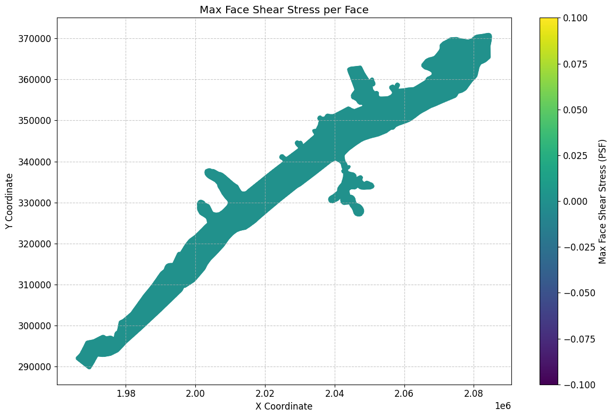
# Get mesh summary output for Minimum Water Surface as geodataframe
summary_gdf_min_ws = HdfResultsMesh.get_mesh_summary(plan_hdf_path, var="Minimum Water Surface")
2025-12-16 21:03:38 - ras_commander.hdf.HdfResultsMesh - INFO - Using HDF file from direct string path: C:\Users\billk_clb\anaconda3\envs\rascmdr_piptest\Lib\site-packages\examples\example_projects\BaldEagleCrkMulti2D_11\BaldEagleDamBrk.p06.hdf
2025-12-16 21:03:38 - ras_commander.hdf.HdfResultsMesh - INFO - Final validated file path: C:\Users\billk_clb\anaconda3\envs\rascmdr_piptest\Lib\site-packages\examples\example_projects\BaldEagleCrkMulti2D_11\BaldEagleDamBrk.p06.hdf
2025-12-16 21:03:38 - ras_commander.hdf.HdfResultsMesh - INFO - Processing summary output for variable: Minimum Water Surface
2025-12-16 21:03:38 - ras_commander.hdf.HdfMesh - INFO - Using HDF file from h5py.File object: C:\Users\billk_clb\anaconda3\envs\rascmdr_piptest\Lib\site-packages\examples\example_projects\BaldEagleCrkMulti2D_11\BaldEagleDamBrk.p06.hdf
2025-12-16 21:03:38 - ras_commander.hdf.HdfMesh - INFO - Final validated file path: C:\Users\billk_clb\anaconda3\envs\rascmdr_piptest\Lib\site-packages\examples\example_projects\BaldEagleCrkMulti2D_11\BaldEagleDamBrk.p06.hdf
2025-12-16 21:03:38 - ras_commander.hdf.HdfMesh - INFO - Using existing Path object HDF file: C:\Users\billk_clb\anaconda3\envs\rascmdr_piptest\Lib\site-packages\examples\example_projects\BaldEagleCrkMulti2D_11\BaldEagleDamBrk.p06.hdf
2025-12-16 21:03:38 - ras_commander.hdf.HdfMesh - INFO - Final validated file path: C:\Users\billk_clb\anaconda3\envs\rascmdr_piptest\Lib\site-packages\examples\example_projects\BaldEagleCrkMulti2D_11\BaldEagleDamBrk.p06.hdf
2025-12-16 21:03:38 - ras_commander.hdf.HdfBase - INFO - Using HDF file from h5py.File object: C:\Users\billk_clb\anaconda3\envs\rascmdr_piptest\Lib\site-packages\examples\example_projects\BaldEagleCrkMulti2D_11\BaldEagleDamBrk.p06.hdf
2025-12-16 21:03:38 - ras_commander.hdf.HdfBase - INFO - Final validated file path: C:\Users\billk_clb\anaconda3\envs\rascmdr_piptest\Lib\site-packages\examples\example_projects\BaldEagleCrkMulti2D_11\BaldEagleDamBrk.p06.hdf
2025-12-16 21:03:38 - ras_commander.hdf.HdfBase - INFO - Found projection in HDF file: C:\Users\billk_clb\anaconda3\envs\rascmdr_piptest\Lib\site-packages\examples\example_projects\BaldEagleCrkMulti2D_11\BaldEagleDamBrk.p06.hdf
2025-12-16 21:03:38 - ras_commander.hdf.HdfBase - INFO - Converted WKT to EPSG:2271 from HDF file BaldEagleDamBrk.p06.hdf
2025-12-16 21:03:38 - ras_commander.hdf.HdfBase - INFO - Using HDF file from h5py.File object: C:\Users\billk_clb\anaconda3\envs\rascmdr_piptest\Lib\site-packages\examples\example_projects\BaldEagleCrkMulti2D_11\BaldEagleDamBrk.p06.hdf
2025-12-16 21:03:38 - ras_commander.hdf.HdfBase - INFO - Final validated file path: C:\Users\billk_clb\anaconda3\envs\rascmdr_piptest\Lib\site-packages\examples\example_projects\BaldEagleCrkMulti2D_11\BaldEagleDamBrk.p06.hdf
2025-12-16 21:03:38 - ras_commander.hdf.HdfBase - INFO - Found projection in HDF file: C:\Users\billk_clb\anaconda3\envs\rascmdr_piptest\Lib\site-packages\examples\example_projects\BaldEagleCrkMulti2D_11\BaldEagleDamBrk.p06.hdf
2025-12-16 21:03:38 - ras_commander.hdf.HdfBase - INFO - Converted WKT to EPSG:2271 from HDF file BaldEagleDamBrk.p06.hdf
2025-12-16 21:03:38 - ras_commander.hdf.HdfResultsMesh - INFO - Processed 19597 rows of summary output data
Mesh Summary Output (Minimum Water Surface):
| mesh_name | cell_id | minimum_water_surface | minimum_water_surface_time | geometry | |
|---|---|---|---|---|---|
| 0 | BaldEagleCr | 0 | 701.151245 | 2018-09-09 00:00:20 | POINT (2083000 370750) |
| 1 | BaldEagleCr | 1 | 689.052246 | 2018-09-09 00:00:20 | POINT (2083250 370750) |
| 2 | BaldEagleCr | 2 | 669.774719 | 2018-09-09 00:00:20 | POINT (2083500 370750) |
| 3 | BaldEagleCr | 3 | 658.986938 | 2018-09-09 00:00:20 | POINT (2083750 370750) |
| 4 | BaldEagleCr | 4 | 658.720581 | 2018-09-09 00:00:20 | POINT (2084000 370750) |
| ... | ... | ... | ... | ... | ... |
| 19592 | BaldEagleCr | 19592 | 0.000000 | 2018-09-09 00:00:00 | POINT (1978423.032 300718.897) |
| 19593 | BaldEagleCr | 19593 | 0.000000 | 2018-09-09 00:00:00 | POINT (1973389.375 297311.928) |
| 19594 | BaldEagleCr | 19594 | 0.000000 | 2018-09-09 00:00:00 | POINT (1968834.79 295808.861) |
| 19595 | BaldEagleCr | 19595 | 0.000000 | 2018-09-09 00:00:00 | POINT (1966130.942 291879.395) |
| 19596 | BaldEagleCr | 19596 | 0.000000 | 2018-09-09 00:00:00 | POINT (1969660.046 289673.23) |
19597 rows × 5 columns
# Get mesh summary output for Minimum Face Velocity as geodataframe
summary_gdf_min_fv = HdfResultsMesh.get_mesh_summary(plan_hdf_path, var="Minimum Face Velocity")
2025-12-16 21:03:38 - ras_commander.hdf.HdfResultsMesh - INFO - Using HDF file from direct string path: C:\Users\billk_clb\anaconda3\envs\rascmdr_piptest\Lib\site-packages\examples\example_projects\BaldEagleCrkMulti2D_11\BaldEagleDamBrk.p06.hdf
2025-12-16 21:03:38 - ras_commander.hdf.HdfResultsMesh - INFO - Final validated file path: C:\Users\billk_clb\anaconda3\envs\rascmdr_piptest\Lib\site-packages\examples\example_projects\BaldEagleCrkMulti2D_11\BaldEagleDamBrk.p06.hdf
2025-12-16 21:03:38 - ras_commander.hdf.HdfResultsMesh - INFO - Processing summary output for variable: Minimum Face Velocity
2025-12-16 21:03:38 - ras_commander.hdf.HdfMesh - INFO - Using HDF file from h5py.File object: C:\Users\billk_clb\anaconda3\envs\rascmdr_piptest\Lib\site-packages\examples\example_projects\BaldEagleCrkMulti2D_11\BaldEagleDamBrk.p06.hdf
2025-12-16 21:03:38 - ras_commander.hdf.HdfMesh - INFO - Final validated file path: C:\Users\billk_clb\anaconda3\envs\rascmdr_piptest\Lib\site-packages\examples\example_projects\BaldEagleCrkMulti2D_11\BaldEagleDamBrk.p06.hdf
2025-12-16 21:03:38 - ras_commander.hdf.HdfMesh - INFO - Using existing Path object HDF file: C:\Users\billk_clb\anaconda3\envs\rascmdr_piptest\Lib\site-packages\examples\example_projects\BaldEagleCrkMulti2D_11\BaldEagleDamBrk.p06.hdf
2025-12-16 21:03:38 - ras_commander.hdf.HdfMesh - INFO - Final validated file path: C:\Users\billk_clb\anaconda3\envs\rascmdr_piptest\Lib\site-packages\examples\example_projects\BaldEagleCrkMulti2D_11\BaldEagleDamBrk.p06.hdf
2025-12-16 21:03:38 - ras_commander.hdf.HdfBase - INFO - Using HDF file from h5py.File object: C:\Users\billk_clb\anaconda3\envs\rascmdr_piptest\Lib\site-packages\examples\example_projects\BaldEagleCrkMulti2D_11\BaldEagleDamBrk.p06.hdf
2025-12-16 21:03:38 - ras_commander.hdf.HdfBase - INFO - Final validated file path: C:\Users\billk_clb\anaconda3\envs\rascmdr_piptest\Lib\site-packages\examples\example_projects\BaldEagleCrkMulti2D_11\BaldEagleDamBrk.p06.hdf
2025-12-16 21:03:38 - ras_commander.hdf.HdfBase - INFO - Found projection in HDF file: C:\Users\billk_clb\anaconda3\envs\rascmdr_piptest\Lib\site-packages\examples\example_projects\BaldEagleCrkMulti2D_11\BaldEagleDamBrk.p06.hdf
2025-12-16 21:03:38 - ras_commander.hdf.HdfBase - INFO - Converted WKT to EPSG:2271 from HDF file BaldEagleDamBrk.p06.hdf
2025-12-16 21:03:38 - ras_commander.hdf.HdfBase - INFO - Using HDF file from h5py.File object: C:\Users\billk_clb\anaconda3\envs\rascmdr_piptest\Lib\site-packages\examples\example_projects\BaldEagleCrkMulti2D_11\BaldEagleDamBrk.p06.hdf
2025-12-16 21:03:38 - ras_commander.hdf.HdfBase - INFO - Final validated file path: C:\Users\billk_clb\anaconda3\envs\rascmdr_piptest\Lib\site-packages\examples\example_projects\BaldEagleCrkMulti2D_11\BaldEagleDamBrk.p06.hdf
2025-12-16 21:03:38 - ras_commander.hdf.HdfBase - INFO - Found projection in HDF file: C:\Users\billk_clb\anaconda3\envs\rascmdr_piptest\Lib\site-packages\examples\example_projects\BaldEagleCrkMulti2D_11\BaldEagleDamBrk.p06.hdf
2025-12-16 21:03:38 - ras_commander.hdf.HdfBase - INFO - Converted WKT to EPSG:2271 from HDF file BaldEagleDamBrk.p06.hdf
2025-12-16 21:03:38 - ras_commander.hdf.HdfResultsMesh - INFO - Processed 37594 rows of summary output data
Mesh Summary Output (Minimum Face Velocity):
| mesh_name | face_id | minimum_face_velocity | minimum_face_velocity_time | geometry | |
|---|---|---|---|---|---|
| 0 | BaldEagleCr | 0 | 0.0 | 2018-09-09 00:00:20 | LINESTRING (2042125 351625, 2042375 351625) |
| 1 | BaldEagleCr | 1 | 0.0 | 2018-09-09 00:00:20 | LINESTRING (2042375 351625, 2042375 351875) |
| 2 | BaldEagleCr | 2 | 0.0 | 2018-09-09 00:00:20 | LINESTRING (2042375 351875, 2042125 351875) |
| 3 | BaldEagleCr | 3 | 0.0 | 2018-09-09 00:00:20 | LINESTRING (2042125 351875, 2042125 351625) |
| 4 | BaldEagleCr | 4 | 0.0 | 2018-09-09 00:00:20 | LINESTRING (2042375 351375, 2042375 351625) |
| ... | ... | ... | ... | ... | ... |
| 37589 | BaldEagleCr | 37589 | 0.0 | 2018-09-09 00:00:20 | LINESTRING (1978444.054 300812.794, 1978402.01... |
| 37590 | BaldEagleCr | 37590 | 0.0 | 2018-09-09 00:00:20 | LINESTRING (1973531.76 297370.846, 1973246.989... |
| 37591 | BaldEagleCr | 37591 | 0.0 | 2018-09-09 00:00:20 | LINESTRING (1968886.801 295900.5, 1968782.778 ... |
| 37592 | BaldEagleCr | 37592 | 0.0 | 2018-09-09 00:00:20 | LINESTRING (1965981.775 291978.68, 1966280.11 ... |
| 37593 | BaldEagleCr | 37593 | 0.0 | 2018-09-09 00:00:20 | LINESTRING (1969588.438 289578.114, 1969731.65... |
37594 rows × 5 columns
# Get mesh summary output for Cell Cumulative Iteration as geodataframe
summary_gdf_cum_iter = HdfResultsMesh.get_mesh_summary(plan_hdf_path, var="Cell Cumulative Iteration")
2025-12-16 21:03:38 - ras_commander.hdf.HdfResultsMesh - INFO - Using HDF file from direct string path: C:\Users\billk_clb\anaconda3\envs\rascmdr_piptest\Lib\site-packages\examples\example_projects\BaldEagleCrkMulti2D_11\BaldEagleDamBrk.p06.hdf
2025-12-16 21:03:38 - ras_commander.hdf.HdfResultsMesh - INFO - Final validated file path: C:\Users\billk_clb\anaconda3\envs\rascmdr_piptest\Lib\site-packages\examples\example_projects\BaldEagleCrkMulti2D_11\BaldEagleDamBrk.p06.hdf
2025-12-16 21:03:38 - ras_commander.hdf.HdfResultsMesh - INFO - Processing summary output for variable: Cell Cumulative Iteration
2025-12-16 21:03:38 - ras_commander.hdf.HdfMesh - INFO - Using HDF file from h5py.File object: C:\Users\billk_clb\anaconda3\envs\rascmdr_piptest\Lib\site-packages\examples\example_projects\BaldEagleCrkMulti2D_11\BaldEagleDamBrk.p06.hdf
2025-12-16 21:03:38 - ras_commander.hdf.HdfMesh - INFO - Final validated file path: C:\Users\billk_clb\anaconda3\envs\rascmdr_piptest\Lib\site-packages\examples\example_projects\BaldEagleCrkMulti2D_11\BaldEagleDamBrk.p06.hdf
2025-12-16 21:03:38 - ras_commander.hdf.HdfMesh - INFO - Using existing Path object HDF file: C:\Users\billk_clb\anaconda3\envs\rascmdr_piptest\Lib\site-packages\examples\example_projects\BaldEagleCrkMulti2D_11\BaldEagleDamBrk.p06.hdf
2025-12-16 21:03:38 - ras_commander.hdf.HdfMesh - INFO - Final validated file path: C:\Users\billk_clb\anaconda3\envs\rascmdr_piptest\Lib\site-packages\examples\example_projects\BaldEagleCrkMulti2D_11\BaldEagleDamBrk.p06.hdf
2025-12-16 21:03:38 - ras_commander.hdf.HdfBase - INFO - Using HDF file from h5py.File object: C:\Users\billk_clb\anaconda3\envs\rascmdr_piptest\Lib\site-packages\examples\example_projects\BaldEagleCrkMulti2D_11\BaldEagleDamBrk.p06.hdf
2025-12-16 21:03:38 - ras_commander.hdf.HdfBase - INFO - Final validated file path: C:\Users\billk_clb\anaconda3\envs\rascmdr_piptest\Lib\site-packages\examples\example_projects\BaldEagleCrkMulti2D_11\BaldEagleDamBrk.p06.hdf
2025-12-16 21:03:38 - ras_commander.hdf.HdfBase - INFO - Found projection in HDF file: C:\Users\billk_clb\anaconda3\envs\rascmdr_piptest\Lib\site-packages\examples\example_projects\BaldEagleCrkMulti2D_11\BaldEagleDamBrk.p06.hdf
2025-12-16 21:03:38 - ras_commander.hdf.HdfBase - INFO - Converted WKT to EPSG:2271 from HDF file BaldEagleDamBrk.p06.hdf
2025-12-16 21:03:38 - ras_commander.hdf.HdfBase - INFO - Using HDF file from h5py.File object: C:\Users\billk_clb\anaconda3\envs\rascmdr_piptest\Lib\site-packages\examples\example_projects\BaldEagleCrkMulti2D_11\BaldEagleDamBrk.p06.hdf
2025-12-16 21:03:38 - ras_commander.hdf.HdfBase - INFO - Final validated file path: C:\Users\billk_clb\anaconda3\envs\rascmdr_piptest\Lib\site-packages\examples\example_projects\BaldEagleCrkMulti2D_11\BaldEagleDamBrk.p06.hdf
2025-12-16 21:03:38 - ras_commander.hdf.HdfBase - INFO - Found projection in HDF file: C:\Users\billk_clb\anaconda3\envs\rascmdr_piptest\Lib\site-packages\examples\example_projects\BaldEagleCrkMulti2D_11\BaldEagleDamBrk.p06.hdf
2025-12-16 21:03:38 - ras_commander.hdf.HdfBase - INFO - Converted WKT to EPSG:2271 from HDF file BaldEagleDamBrk.p06.hdf
2025-12-16 21:03:38 - ras_commander.hdf.HdfResultsMesh - INFO - Processed 19597 rows of summary output data
Mesh Summary Output (Cell Cumulative Iteration):
| mesh_name | cell_id | cell_cumulative_iteration | geometry | |
|---|---|---|---|---|
| 0 | BaldEagleCr | 0 | 0.0 | POINT (2083000 370750) |
| 1 | BaldEagleCr | 1 | 0.0 | POINT (2083250 370750) |
| 2 | BaldEagleCr | 2 | 0.0 | POINT (2083500 370750) |
| 3 | BaldEagleCr | 3 | 0.0 | POINT (2083750 370750) |
| 4 | BaldEagleCr | 4 | 0.0 | POINT (2084000 370750) |
| ... | ... | ... | ... | ... |
| 19592 | BaldEagleCr | 19592 | 0.0 | POINT (1978423.032 300718.897) |
| 19593 | BaldEagleCr | 19593 | 0.0 | POINT (1973389.375 297311.928) |
| 19594 | BaldEagleCr | 19594 | 0.0 | POINT (1968834.79 295808.861) |
| 19595 | BaldEagleCr | 19595 | 0.0 | POINT (1966130.942 291879.395) |
| 19596 | BaldEagleCr | 19596 | 0.0 | POINT (1969660.046 289673.23) |
19597 rows × 4 columns
# Get mesh timeseries output as xarray
# The mesh name is part of the timeseries HDF path, so you must pass the mesh_name to retrieve it
# Get mesh areas from previous code cell
mesh_areas = HdfMesh.get_mesh_area_names(geom_hdf_path)
2025-12-16 21:03:38 - ras_commander.hdf.HdfMesh - INFO - Using HDF file from direct string path: C:\Users\billk_clb\anaconda3\envs\rascmdr_piptest\Lib\site-packages\examples\example_projects\BaldEagleCrkMulti2D_11\BaldEagleDamBrk.g09.hdf
2025-12-16 21:03:38 - ras_commander.hdf.HdfMesh - INFO - Final validated file path: C:\Users\billk_clb\anaconda3\envs\rascmdr_piptest\Lib\site-packages\examples\example_projects\BaldEagleCrkMulti2D_11\BaldEagleDamBrk.g09.hdf
['BaldEagleCr']
# Use the first mesh area name to extract mesh timeseries output as xarray
timeseries_xr = HdfResultsMesh.get_mesh_timeseries(plan_hdf_path, mesh_areas[0], "Water Surface") # Use the first 2D flow area name for mesh_name
2025-12-16 21:03:39 - ras_commander.hdf.HdfResultsMesh - INFO - Using HDF file from direct string path: C:\Users\billk_clb\anaconda3\envs\rascmdr_piptest\Lib\site-packages\examples\example_projects\BaldEagleCrkMulti2D_11\BaldEagleDamBrk.p06.hdf
2025-12-16 21:03:39 - ras_commander.hdf.HdfResultsMesh - INFO - Final validated file path: C:\Users\billk_clb\anaconda3\envs\rascmdr_piptest\Lib\site-packages\examples\example_projects\BaldEagleCrkMulti2D_11\BaldEagleDamBrk.p06.hdf
<xarray.DataArray (time: 721, cell_id: 19597)> Size: 57MB
array([[701.15125, 689.05225, 669.7747 , ..., 696.1488 , 773.81085,
782.3656 ],
[701.15125, 689.05225, 669.7747 , ..., 696.1488 , 773.81085,
782.3656 ],
[701.15125, 689.05225, 669.7747 , ..., 696.1488 , 773.81085,
782.3656 ],
...,
[701.75244, 689.78314, 670.0496 , ..., 696.1488 , 773.81085,
782.3656 ],
[701.75183, 689.7824 , 670.0493 , ..., 696.1488 , 773.81085,
782.3656 ],
[701.7513 , 689.78174, 670.0491 , ..., 696.1488 , 773.81085,
782.3656 ]], shape=(721, 19597), dtype=float32)
Coordinates:
* time (time) datetime64[ns] 6kB 2018-09-09 ... 2018-09-14
* cell_id (cell_id) int64 157kB 0 1 2 3 4 5 ... 19592 19593 19594 19595 19596
Attributes:
units: ft
mesh_name: BaldEagleCr
variable: Water Surface# Time Series Output Variables for Cells
#
# Variable Name: Description
# Water Surface: Water surface elevation
# Depth: Water depth
# Velocity: Magnitude of velocity
# Velocity X: X-component of velocity
# Velocity Y: Y-component of velocity
# Froude Number: Froude number
# Courant Number: Courant number
# Shear Stress: Shear stress on the bed
# Bed Elevation: Elevation of the bed
# Precipitation Rate: Rate of precipitation
# Infiltration Rate: Rate of infiltration
# Evaporation Rate: Rate of evaporation
# Percolation Rate: Rate of percolation
# Groundwater Elevation: Elevation of groundwater
# Groundwater Depth: Depth to groundwater
# Groundwater Flow: Groundwater flow rate
# Groundwater Velocity: Magnitude of groundwater velocity
# Groundwater Velocity X: X-component of groundwater velocity
# Groundwater Velocity Y: Y-component of groundwater velocity
#
# These variables are available for time series output at the cell level in 2D flow areas.
# Get mesh cells timeseries output as xarray
cells_timeseries_xr = HdfResultsMesh.get_mesh_cells_timeseries(plan_hdf_path, mesh_areas[0])
2025-12-16 21:03:39 - ras_commander.hdf.HdfResultsMesh - INFO - Using HDF file from direct string path: C:\Users\billk_clb\anaconda3\envs\rascmdr_piptest\Lib\site-packages\examples\example_projects\BaldEagleCrkMulti2D_11\BaldEagleDamBrk.p06.hdf
2025-12-16 21:03:39 - ras_commander.hdf.HdfResultsMesh - INFO - Final validated file path: C:\Users\billk_clb\anaconda3\envs\rascmdr_piptest\Lib\site-packages\examples\example_projects\BaldEagleCrkMulti2D_11\BaldEagleDamBrk.p06.hdf
2025-12-16 21:03:39 - ras_commander.hdf.HdfResultsMesh - WARNING - Variable 'Depth' not found in the HDF file for mesh 'BaldEagleCr'. Skipping.
2025-12-16 21:03:39 - ras_commander.hdf.HdfResultsMesh - WARNING - Variable 'Velocity' not found in the HDF file for mesh 'BaldEagleCr'. Skipping.
2025-12-16 21:03:39 - ras_commander.hdf.HdfResultsMesh - WARNING - Variable 'Velocity X' not found in the HDF file for mesh 'BaldEagleCr'. Skipping.
2025-12-16 21:03:39 - ras_commander.hdf.HdfResultsMesh - WARNING - Variable 'Velocity Y' not found in the HDF file for mesh 'BaldEagleCr'. Skipping.
2025-12-16 21:03:39 - ras_commander.hdf.HdfResultsMesh - WARNING - Variable 'Froude Number' not found in the HDF file for mesh 'BaldEagleCr'. Skipping.
2025-12-16 21:03:39 - ras_commander.hdf.HdfResultsMesh - WARNING - Variable 'Courant Number' not found in the HDF file for mesh 'BaldEagleCr'. Skipping.
2025-12-16 21:03:39 - ras_commander.hdf.HdfResultsMesh - WARNING - Variable 'Shear Stress' not found in the HDF file for mesh 'BaldEagleCr'. Skipping.
2025-12-16 21:03:39 - ras_commander.hdf.HdfResultsMesh - WARNING - Variable 'Bed Elevation' not found in the HDF file for mesh 'BaldEagleCr'. Skipping.
2025-12-16 21:03:39 - ras_commander.hdf.HdfResultsMesh - WARNING - Variable 'Precipitation Rate' not found in the HDF file for mesh 'BaldEagleCr'. Skipping.
2025-12-16 21:03:39 - ras_commander.hdf.HdfResultsMesh - WARNING - Variable 'Infiltration Rate' not found in the HDF file for mesh 'BaldEagleCr'. Skipping.
2025-12-16 21:03:39 - ras_commander.hdf.HdfResultsMesh - WARNING - Variable 'Evaporation Rate' not found in the HDF file for mesh 'BaldEagleCr'. Skipping.
2025-12-16 21:03:39 - ras_commander.hdf.HdfResultsMesh - WARNING - Variable 'Percolation Rate' not found in the HDF file for mesh 'BaldEagleCr'. Skipping.
2025-12-16 21:03:39 - ras_commander.hdf.HdfResultsMesh - WARNING - Variable 'Groundwater Elevation' not found in the HDF file for mesh 'BaldEagleCr'. Skipping.
2025-12-16 21:03:39 - ras_commander.hdf.HdfResultsMesh - WARNING - Variable 'Groundwater Depth' not found in the HDF file for mesh 'BaldEagleCr'. Skipping.
2025-12-16 21:03:39 - ras_commander.hdf.HdfResultsMesh - WARNING - Variable 'Groundwater Flow' not found in the HDF file for mesh 'BaldEagleCr'. Skipping.
2025-12-16 21:03:39 - ras_commander.hdf.HdfResultsMesh - WARNING - Variable 'Groundwater Velocity' not found in the HDF file for mesh 'BaldEagleCr'. Skipping.
2025-12-16 21:03:39 - ras_commander.hdf.HdfResultsMesh - WARNING - Variable 'Groundwater Velocity X' not found in the HDF file for mesh 'BaldEagleCr'. Skipping.
2025-12-16 21:03:39 - ras_commander.hdf.HdfResultsMesh - WARNING - Variable 'Groundwater Velocity Y' not found in the HDF file for mesh 'BaldEagleCr'. Skipping.
2025-12-16 21:03:40 - ras_commander.hdf.HdfResultsMesh - WARNING - Variable 'Face Courant' not found in the HDF file for mesh 'BaldEagleCr'. Skipping.
2025-12-16 21:03:40 - ras_commander.hdf.HdfResultsMesh - WARNING - Variable 'Face Cumulative Volume' not found in the HDF file for mesh 'BaldEagleCr'. Skipping.
2025-12-16 21:03:41 - ras_commander.hdf.HdfResultsMesh - WARNING - Variable 'Face Flow Period Average' not found in the HDF file for mesh 'BaldEagleCr'. Skipping.
2025-12-16 21:03:41 - ras_commander.hdf.HdfResultsMesh - WARNING - Variable 'Face Friction Term' not found in the HDF file for mesh 'BaldEagleCr'. Skipping.
2025-12-16 21:03:41 - ras_commander.hdf.HdfResultsMesh - WARNING - Variable 'Face Pressure Gradient Term' not found in the HDF file for mesh 'BaldEagleCr'. Skipping.
2025-12-16 21:03:41 - ras_commander.hdf.HdfResultsMesh - WARNING - Variable 'Face Tangential Velocity' not found in the HDF file for mesh 'BaldEagleCr'. Skipping.
{'BaldEagleCr': <xarray.Dataset> Size: 599MB
Dimensions: (time: 721, cell_id: 19597, face_id: 37594)
Coordinates:
* time (time) datetime64[ns] 6kB 2018-09-09 ... 2018-09-14
* cell_id (cell_id) int64 157kB 0 1 2 3 ... 19594 19595 19596
* face_id (face_id) int64 301kB 0 1 2 3 ... 37591 37592 37593
Data variables:
Water Surface (time, cell_id) float32 57MB 701.2 689.1 ... 782.4
Face Velocity (time, face_id) float32 108MB 0.0 0.0 0.0 ... 0.0 0.0
Face Flow (time, face_id) float32 108MB 0.0 0.0 0.0 ... 0.0 0.0
Face Water Surface (time, face_id) float32 108MB 620.1 630.9 ... 782.4
Face Eddy Viscosity (time, face_id) float32 108MB 0.0 0.0 0.0 ... 0.0 0.0
Face Shear Stress (time, face_id) float32 108MB 0.0 0.0 0.0 ... 0.0 0.0
Attributes:
mesh_name: BaldEagleCr
start_time: 2018-09-09 00:00:00}
# Plot WSE Time Series Data (Random Cell ID)
import matplotlib.pyplot as plt
if generate_plots:
import numpy as np
import random
# Extract Water Surface data
water_surface = cells_timeseries_xr[mesh_areas[0]]['Water Surface']
# Get the time values
time_values = water_surface.coords['time'].values
# Pick a random cell_id
random_cell_id = random.choice(water_surface.coords['cell_id'].values)
# Extract the water surface elevation time series for the random cell
wsel_timeseries = water_surface.sel(cell_id=random_cell_id)
# Find the peak value and its index
peak_value = wsel_timeseries.max().item()
peak_index = wsel_timeseries.argmax().item()
# Create the plot
plt.figure(figsize=(12, 6))
plt.plot(time_values, wsel_timeseries, label=f'Cell ID: {random_cell_id}')
plt.scatter(time_values[peak_index], peak_value, color='red', s=100, zorder=5)
plt.annotate(f'Peak: {peak_value:.2f} ft',
(time_values[peak_index], peak_value),
xytext=(10, 10), textcoords='offset points',
ha='left', va='bottom',
bbox=dict(boxstyle='round,pad=0.5', fc='yellow', alpha=0.5),
arrowprops=dict(arrowstyle='->', connectionstyle='arc3,rad=0'))
plt.title(f'Water Surface Elevation Time Series for Random Cell (ID: {random_cell_id})')
plt.xlabel('Time')
plt.ylabel('Water Surface Elevation (ft)')
plt.legend()
plt.grid(True)
plt.tight_layout()
# Log the plotting action
logging.info(f"Plotted water surface elevation time series for random cell ID: {random_cell_id}")
# Display the plot
plt.show()
# Print some statistics
print(f"Statistics for Cell ID {random_cell_id}:")
print(f"Minimum WSEL: {wsel_timeseries.min().item():.2f} ft")
print(f"Maximum WSEL: {peak_value:.2f} ft")
print(f"Mean WSEL: {wsel_timeseries.mean().item():.2f} ft")
print(f"Time of peak: {time_values[peak_index]}")
2025-12-16 21:03:41 - root - INFO - Plotted water surface elevation time series for random cell ID: 13350
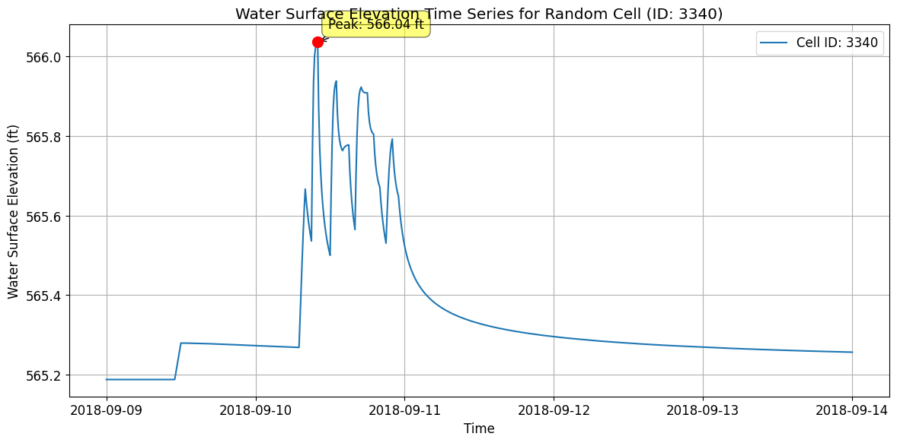
Statistics for Cell ID 13350:
Minimum WSEL: 639.36 ft
Maximum WSEL: 659.78 ft
Mean WSEL: 650.29 ft
Time of peak: 2018-09-13T19:50:00.000000000
# Get mesh faces timeseries output as xarray
faces_timeseries_xr = HdfResultsMesh.get_mesh_faces_timeseries(plan_hdf_path, mesh_areas[0])
2025-12-16 21:03:41 - ras_commander.hdf.HdfResultsMesh - INFO - Using HDF file from direct string path: C:\Users\billk_clb\anaconda3\envs\rascmdr_piptest\Lib\site-packages\examples\example_projects\BaldEagleCrkMulti2D_11\BaldEagleDamBrk.p06.hdf
2025-12-16 21:03:41 - ras_commander.hdf.HdfResultsMesh - INFO - Final validated file path: C:\Users\billk_clb\anaconda3\envs\rascmdr_piptest\Lib\site-packages\examples\example_projects\BaldEagleCrkMulti2D_11\BaldEagleDamBrk.p06.hdf
2025-12-16 21:03:41 - ras_commander.hdf.HdfResultsMesh - INFO - Using existing Path object HDF file: C:\Users\billk_clb\anaconda3\envs\rascmdr_piptest\Lib\site-packages\examples\example_projects\BaldEagleCrkMulti2D_11\BaldEagleDamBrk.p06.hdf
2025-12-16 21:03:41 - ras_commander.hdf.HdfResultsMesh - INFO - Final validated file path: C:\Users\billk_clb\anaconda3\envs\rascmdr_piptest\Lib\site-packages\examples\example_projects\BaldEagleCrkMulti2D_11\BaldEagleDamBrk.p06.hdf
2025-12-16 21:03:42 - ras_commander.hdf.HdfResultsMesh - INFO - Using existing Path object HDF file: C:\Users\billk_clb\anaconda3\envs\rascmdr_piptest\Lib\site-packages\examples\example_projects\BaldEagleCrkMulti2D_11\BaldEagleDamBrk.p06.hdf
2025-12-16 21:03:42 - ras_commander.hdf.HdfResultsMesh - INFO - Final validated file path: C:\Users\billk_clb\anaconda3\envs\rascmdr_piptest\Lib\site-packages\examples\example_projects\BaldEagleCrkMulti2D_11\BaldEagleDamBrk.p06.hdf
<xarray.Dataset> Size: 217MB
Dimensions: (time: 720, face_id: 37594)
Coordinates:
* time (time) datetime64[ns] 6kB 2018-09-09T00:10:00 ... 2018-09-14
* face_id (face_id) int64 301kB 0 1 2 3 4 ... 37590 37591 37592 37593
Data variables:
face_velocity (time, face_id) float32 108MB 0.0 0.0 0.0 0.0 ... 0.0 0.0 0.0
face_flow (time, face_id) float32 108MB 0.0 0.0 0.0 0.0 ... 0.0 0.0 0.0
Attributes:
units: ft/s
mesh_name: BaldEagleCr
variable: Face Velocity# Plot Random Face Results and Label Peak, Plus Map View
if generate_maps:
# Select a random valid face ID number
random_face = np.random.randint(0, faces_timeseries_xr.sizes['face_id'])
# Extract time series data for the selected face
variable = 'face_velocity' # We could also use 'face_flow'
face_data = faces_timeseries_xr[variable].sel(face_id=random_face)
# Find peak value and its corresponding time
peak_value = face_data.max().item()
peak_time = face_data.idxmax().values
# Plot time series
plt.figure(figsize=(12, 8))
plt.plot(faces_timeseries_xr.time, face_data)
plt.title(f'{variable.capitalize()} Time Series for Face {random_face}')
plt.xlabel('Time')
plt.ylabel(f'{variable.capitalize()} ({faces_timeseries_xr.attrs["units"]})')
plt.grid(True)
# Annotate the peak point
plt.annotate(f'Peak: ({peak_time}, {peak_value:.2f})',
(peak_time, peak_value),
xytext=(10, 10), textcoords='offset points',
arrowprops=dict(arrowstyle="->"))
# Check for negative values and label the minimum if present
min_value = face_data.min().item()
if min_value < 0:
min_time = face_data.idxmin().values
plt.annotate(f'Min: ({min_time}, {min_value:.2f})',
(min_time, min_value),
xytext=(10, -10), textcoords='offset points',
arrowprops=dict(arrowstyle="->"))
plt.tight_layout()
plt.show()
# Create map view plot
fig, ax = plt.subplots(figsize=(12, 8))
# Calculate mesh faces extents with 10% buffer
faces_bounds = mesh_cell_faces_gdf.total_bounds
x_min, y_min, x_max, y_max = faces_bounds
buffer_x = (x_max - x_min) * 0.1
buffer_y = (y_max - y_min) * 0.1
plot_xlim = [x_min - buffer_x, x_max + buffer_x]
plot_ylim = [y_min - buffer_y, y_max + buffer_y]
# Set plot limits before adding terrain
ax.set_xlim(plot_xlim)
ax.set_ylim(plot_ylim)
# Add the terrain TIFF to the map if available
tiff_path = Path.cwd() / 'example_projects' / 'BaldEagleCrkMulti2D' / 'Terrain' / 'Terrain50.baldeagledem.tif'
if tiff_path.exists():
with rasterio.open(tiff_path) as src:
show(src, ax=ax, cmap='terrain', alpha=0.5)
else:
logging.info(f'Terrain TIFF not found at {tiff_path}, skipping terrain overlay')
# Reset the limits after terrain plot
ax.set_xlim(plot_xlim)
ax.set_ylim(plot_ylim)
# Plot all faces in gray
mesh_cell_faces_gdf.plot(ax=ax, color='lightgray', alpha=0.5, zorder=2)
# Get the selected face geometry
selected_face = mesh_cell_faces_gdf[mesh_cell_faces_gdf['face_id'] == random_face]
# Highlight the selected face in red
selected_face.plot(
ax=ax,
color='red',
linewidth=2,
label=f'Selected Face (ID: {random_face})',
zorder=3
)
# Get bounds of selected face for zoomed inset
bounds = selected_face.geometry.bounds.iloc[0]
x_center = (bounds.iloc[0] + bounds.iloc[2]) / 2
y_center = (bounds.iloc[1] + bounds.iloc[3]) / 2
buffer = max(bounds.iloc[2] - bounds.iloc[0], bounds.iloc[3] - bounds.iloc[1]) * 2
# Create zoomed inset with a larger size, inside the map frame
axins = inset_axes(ax, width="70%", height="70%", loc='lower right',
bbox_to_anchor=(0.65, 0.05, 0.35, 0.35),
bbox_transform=ax.transAxes)
# Plot terrain and faces in inset (if available)
if tiff_path.exists():
with rasterio.open(tiff_path) as src:
show(src, ax=axins, cmap='terrain', alpha=0.5)
# Plot zoomed view in inset
mesh_cell_faces_gdf.plot(ax=axins, color='lightgray', alpha=0.5, zorder=2)
selected_face.plot(ax=axins, color='red', linewidth=2, zorder=3)
# Set inset limits with slightly more context
axins.set_xlim(x_center - buffer/1.5, x_center + buffer/1.5)
axins.set_ylim(y_center - buffer/1.5, y_center + buffer/1.5)
# Remove inset ticks for cleaner look
axins.set_xticks([])
axins.set_yticks([])
# Add a border to the inset
for spine in axins.spines.values():
spine.set_edgecolor('black')
spine.set_linewidth(1.5)
# Create connection lines between main plot and inset
# Get the selected face centroid for connection point
centroid = selected_face.geometry.centroid.iloc[0]
con1 = ConnectionPatch(
xyA=(centroid.x, centroid.y), coordsA=ax.transData,
xyB=(0.02, 0.98), coordsB=axins.transAxes,
arrowstyle="-", linestyle="--", color="gray", alpha=0.6
)
con2 = ConnectionPatch(
xyA=(centroid.x, centroid.y), coordsA=ax.transData,
xyB=(0.98, 0.02), coordsB=axins.transAxes,
arrowstyle="-", linestyle="--", color="gray", alpha=0.6
)
ax.add_artist(con1)
ax.add_artist(con2)
# Add title and legend to main plot
ax.set_title('Mesh Face Map View with Terrain')
ax.legend()
# Ensure equal aspect ratio while maintaining our desired extents
ax.set_aspect('equal', adjustable='box')
plt.tight_layout()
plt.show()
# Print summary information
print(f"Random Face: {random_face}")
print(f"Peak Value: {peak_value:.2f} {faces_timeseries_xr.attrs['units']} at {peak_time}")
if min_value < 0:
print(f"Minimum Value: {min_value:.2f} {faces_timeseries_xr.attrs['units']} at {min_time}")
# Log the plotting action
logging.info(f"Plotted mesh face time series and map view for random face ID: {random_face} with terrain")
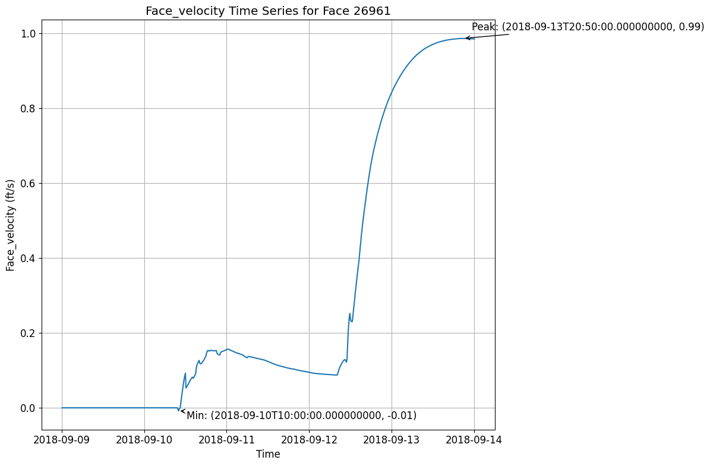
2025-12-16 21:03:43 - root - INFO - Terrain TIFF not found at C:\GH\ras-commander\examples\example_projects\BaldEagleCrkMulti2D\Terrain\Terrain50.baldeagledem.tif, skipping terrain overlay
C:\Users\billk_clb\AppData\Local\Temp\ipykernel_27044\423459082.py:142: UserWarning: This figure includes Axes that are not compatible with tight_layout, so results might be incorrect.
plt.tight_layout()

2025-12-16 21:03:45 - root - INFO - Plotted mesh face time series and map view for random face ID: 8084 with terrain
Random Face: 8084
Peak Value: 0.00 ft/s at 2018-09-09T00:10:00.000000000
# Get meteorology precipitation attributes
meteo_precip_attrs = HdfPlan.get_plan_met_precip(plan_hdf_path)
2025-12-16 21:03:45 - ras_commander.hdf.HdfPlan - INFO - Using HDF file from direct string path: C:\Users\billk_clb\anaconda3\envs\rascmdr_piptest\Lib\site-packages\examples\example_projects\BaldEagleCrkMulti2D_11\BaldEagleDamBrk.p06.hdf
2025-12-16 21:03:45 - ras_commander.hdf.HdfPlan - INFO - Final validated file path: C:\Users\billk_clb\anaconda3\envs\rascmdr_piptest\Lib\site-packages\examples\example_projects\BaldEagleCrkMulti2D_11\BaldEagleDamBrk.p06.hdf
{'DSS Filename': '.\\Precipitation\\precip.2018.09.dss',
'DSS Pathname': '/SHG/MARFC/PRECIP/01SEP2018:0200/01SEP2018:0300/NEXRAD/',
'Data Type': 'per-cum',
'Interpolation Method': '',
'Mode': 'Gridded',
'Projection': 'PROJCS["USA_Contiguous_Albers_Equal_Area_Conic_USGS_version",GEOGCS["NAD83",DATUM["North_American_Datum_1983",SPHEROID["GRS 1980",6378137,298.257222101,AUTHORITY["EPSG","7019"]],AUTHORITY["EPSG","6269"]],PRIMEM["Greenwich",0],UNIT["Degree",0.0174532925199433]],PROJECTION["Albers_Conic_Equal_Area"],PARAMETER["latitude_of_center",23],PARAMETER["longitude_of_center",-96],PARAMETER["standard_parallel_1",29.5],PARAMETER["standard_parallel_2",45.5],PARAMETER["false_easting",0],PARAMETER["false_northing",0],UNIT["metre",1,AUTHORITY["EPSG","9001"]],AXIS["Easting",EAST],AXIS["Northing",NORTH]]',
'Raster Cellsize': np.float64(2000.0),
'Raster Cols': np.int32(515),
'Raster Left': np.float64(1096000.0),
'Raster Rows': np.int32(522),
'Raster Top': np.float64(2560000.0),
'Source': 'DSS',
'Units': 'in'}
# Get results unsteady attributes
results_unsteady_attrs = HdfResultsPlan.get_unsteady_info(plan_hdf_path)
2025-12-16 21:03:45 - ras_commander.hdf.HdfResultsPlan - INFO - Using HDF file from direct string path: C:\Users\billk_clb\anaconda3\envs\rascmdr_piptest\Lib\site-packages\examples\example_projects\BaldEagleCrkMulti2D_11\BaldEagleDamBrk.p06.hdf
2025-12-16 21:03:45 - ras_commander.hdf.HdfResultsPlan - INFO - Final validated file path: C:\Users\billk_clb\anaconda3\envs\rascmdr_piptest\Lib\site-packages\examples\example_projects\BaldEagleCrkMulti2D_11\BaldEagleDamBrk.p06.hdf
| Plan Title | Program Name | Program Version | Project File Name | Project Title | Short ID | Simulation Time Window | Type of Run | |
|---|---|---|---|---|---|---|---|---|
| 0 | Gridded Precip - Infiltration | HEC-RAS - River Analysis System | HEC-RAS 6.6 September 2024 | C:\Users\billk_clb\anaconda3\envs\rascmdr_pipt... | Bald Eagle Creek Example Dam Break Study | Grid Precip Infiltration | 08Sep2018 2400 to 13Sep2018 2400 | Unsteady Flow Analysis |
# Get results unsteady summary attributes
results_unsteady_summary_attrs = HdfResultsPlan.get_unsteady_summary(plan_hdf_path)
2025-12-16 21:03:45 - ras_commander.hdf.HdfResultsPlan - INFO - Using HDF file from direct string path: C:\Users\billk_clb\anaconda3\envs\rascmdr_piptest\Lib\site-packages\examples\example_projects\BaldEagleCrkMulti2D_11\BaldEagleDamBrk.p06.hdf
2025-12-16 21:03:45 - ras_commander.hdf.HdfResultsPlan - INFO - Final validated file path: C:\Users\billk_clb\anaconda3\envs\rascmdr_piptest\Lib\site-packages\examples\example_projects\BaldEagleCrkMulti2D_11\BaldEagleDamBrk.p06.hdf
| Computation Time DSS | Computation Time Total | Maximum WSEL Error | Maximum number of cores | Run Time Window | Solution | Time Solution Went Unstable | Time Stamp Solution Went Unstable | |
|---|---|---|---|---|---|---|---|---|
| 0 | 00:00:00 | 00:04:39 | 0.0 | 2 | 16DEC2025 20:58:42 to 16DEC2025 21:03:20 | Unsteady Finished Successfully | NaN | Not Applicable |
# Get results volume accounting attributes
volume_accounting_attrs = HdfResultsPlan.get_volume_accounting(plan_hdf_path)
2025-12-16 21:03:45 - ras_commander.hdf.HdfResultsPlan - INFO - Using HDF file from direct string path: C:\Users\billk_clb\anaconda3\envs\rascmdr_piptest\Lib\site-packages\examples\example_projects\BaldEagleCrkMulti2D_11\BaldEagleDamBrk.p06.hdf
2025-12-16 21:03:45 - ras_commander.hdf.HdfResultsPlan - INFO - Final validated file path: C:\Users\billk_clb\anaconda3\envs\rascmdr_piptest\Lib\site-packages\examples\example_projects\BaldEagleCrkMulti2D_11\BaldEagleDamBrk.p06.hdf
| Error | Error Percent | Precipitation Excess (acre feet) | Precipitation Excess (inches) | Total Boundary Flux of Water In | Total Boundary Flux of Water Out | Vol Accounting in | Volume Ending | Volume Starting | |
|---|---|---|---|---|---|---|---|---|---|
| 0 | 0.469724 | 0.000332 | 3756.872803 | 1.707615 | 141685.0 | 17240.263672 | Acre Feet | 124445.203125 | 0.0 |
# Extract Compute Messages as String
print("Extracting Compute Messages")
import h5py
import numpy as np
def extract_string_from_hdf(results_hdf_filename: str, hdf_path: str) -> str:
"""
Extract string from HDF object at a given path
Parameters
----------
results_hdf_filename : str
Name of the HDF file
hdf_path : str
Path of the object in the HDF file
Returns
-------
str
Extracted string from the specified HDF object
"""
with h5py.File(results_hdf_filename, 'r') as hdf_file:
try:
hdf_object = hdf_file[hdf_path]
if isinstance(hdf_object, h5py.Group):
return f"Group: {hdf_path}\nContents: {list(hdf_object.keys())}"
elif isinstance(hdf_object, h5py.Dataset):
data = hdf_object[()]
if isinstance(data, bytes):
return data.decode('utf-8')
elif isinstance(data, np.ndarray) and data.dtype.kind == 'S':
return [v.decode('utf-8') for v in data]
else:
return str(data)
else:
return f"Unsupported object type: {type(hdf_object)}"
except KeyError:
return f"Path not found: {hdf_path}"
try:
results_summary_string = extract_string_from_hdf(plan_hdf_path, '/Results/Summary/Compute Messages (text)')
print("Compute Messages:")
# Parse and print the compute messages in a more visually friendly way
messages = results_summary_string[0].split('\r\n')
for message in messages:
if message.strip(): # Skip empty lines
if ':' in message:
key, value = message.split(':', 1)
print(f"{key.strip():40} : {value.strip()}")
else:
print(f"\n{message.strip()}")
# Print computation summary in a table format
print("\nComputation Summary:")
print("-" * 50)
print(f"{'Computation Task':<30} {'Time':<20}")
print("-" * 50)
for line in messages:
if 'Computation Task' in line:
task, time = line.split('\t')
print(f"{task:<30} {time:<20}")
print("\nComputation Speed:")
print("-" * 50)
print(f"{'Task':<30} {'Simulation/Runtime':<20}")
print("-" * 50)
for line in messages:
if 'Computation Speed' in line:
task, speed = line.split('\t')
print(f"{task:<30} {speed:<20}")
except Exception as e:
print(f"Error extracting compute messages: {str(e)}")
print("\nNote: If 'Results/Summary Output' is not in the file structure, it might indicate that the simulation didn't complete successfully or the results weren't saved properly.")
Extracting Compute Messages
Compute Messages:
Plan : 'Gridded Precip - Infiltration' (BaldEagleDamBrk.p06)
Simulation started at : 16Dec2025 08:58:27 PM
Writing Plan GIS Data...
Completed Writing Plan GIS Data
Writing Geometry...
Computing 2D Flow Area 'BaldEagleCr' tables : Property tables do not exist.
2D Flow Area 'BaldEagleCr' tables complete 9.11 sec
Completed Writing Geometry
Writing Event Conditions ...
Processing Precipitation data...
(assumes geometry data is geo-referenced)
Finished Processing Precipitation data (1.558s)
Completed Writing Event Condition Data
Geometric Preprocessor HEC-RAS 6.6 September 2024
Finished Processing Geometry
Performing Unsteady Flow Simulation HEC-RAS 6.6 September 2024
Unsteady Input Summary :
2D Unsteady Diffusion Wave Equation Set (fastest)
2D number of Solver Cores : 2
Maximum adaptive timestep = 40.0 Minimum adaptive timestep = 20.0
Initial adaptive timestep = 20.0
09SEP2018 00 : 01:20 timestep = 40 (sec)
12SEP2018 21 : 12:00 timestep = 20 (sec)
Overall Volume Accounting Error in Acre Feet : 0.4697
Overall Volume Accounting Error as percentage : 0.000332
Please review "Computational Log File" output for volume accounting details
Writing Results to DSS
Finished Unsteady Flow Simulation
1D Post Process Skipped (simulation is all 2D)
Computations Summary
Computation Task Time(hh : mm:ss)
Completing Geometry, Flow and Plan 13
Preprocessing Geometry <1
Unsteady Flow Computations 4 : 40
Complete Process 4 : 53
Computation Speed Simulation/Runtime
Unsteady Flow Computations 1543x
Complete Process 1472x
Computation Summary:
--------------------------------------------------
Computation Task Time
--------------------------------------------------
Computation Task Time(hh:mm:ss)
Computation Speed:
--------------------------------------------------
Task Simulation/Runtime
--------------------------------------------------
Computation Speed Simulation/Runtime
Exploring HDF Datasets with HdfBase.get_dataset_info¶
This allows users to find HDF information that is not included in the ras-commander library. Find the path in HDFView and set the group_path below to explore the HDF datasets and attributes. Then, use the output to write your own function to extract the data.
Get HDF Paths with Properties (For Exploring HDF Files)¶
HdfBase.get_dataset_info(plan_number, group_path="/")
Common 2D Mesh Extraction Patterns¶
Pattern 1: Extract Maximum Inundation¶
# Get maximum depth at each cell over entire simulation
max_depth = HdfResultsMesh.get_max_depth(plan_number, flow_area_name, ras_object=ras)
# Typical use: Flood mapping, regulatory analysis
Pattern 2: Time Series at Point of Interest¶
# Find cell nearest to point of interest
poi = (x_coord, y_coord) # Coordinates of interest
nearest_cell_idx = find_nearest_cell(mesh_geometry, poi)
# Extract full time series at that cell
depth_ts = depth_2d[:, nearest_cell_idx] # All time steps, single cell
# Plot time series
plt.plot(time_stamps, depth_ts)
plt.title('Depth Hydrograph at POI')
Pattern 3: Animate Inundation Progression¶
# Create animation of depth over time
from matplotlib.animation import FuncAnimation
fig, ax = plt.subplots()
for time_idx in range(num_time_steps):
depth_snapshot = depth_2d[time_idx, :]
# Plot depth on mesh
# Update animation frame
Pattern 4: Identify High-Velocity Areas¶
# Find cells with velocity > threshold (erosion concern)
erosion_threshold = 6.0 # ft/s
high_velocity_cells = velocity_2d > erosion_threshold
# Export for mitigation planning
high_vel_locations = mesh_geometry[high_velocity_cells]
Pattern 5: Volume Calculation¶
# Calculate inundated volume at each time step
cell_areas = mesh_geometry['cell_area']
volume = np.sum(depth_2d * cell_areas, axis=1) # Sum over cells for each time
# Plot volume vs time
plt.plot(time_stamps, volume)
plt.ylabel('Inundated Volume (cu ft)')
Cross-References¶
- 1D Results: See
400_1d_hdf_data_extraction.ipynbfor cross section data - Face Data: See
412_2d_detail_face_data_extraction.ipynbfor cell face velocities/flow - Pipes/Pumps: See
411_2d_hdf_pipes_and_pumps.ipynbfor hydraulic structures in 2D areas - Breach: See
420_breach_results_extraction.ipynbfor dam breach progression
For HDF datasets that are not supported by the RAS-Commadner library, provide the dataset path to HdfBase.get_dataset_info and provide the output to an LLM along with a relevent HDF* class(es) to generate new functions that extend the library's coverage.